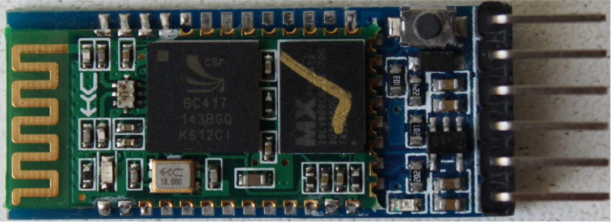
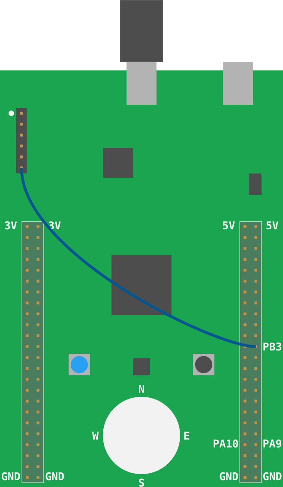
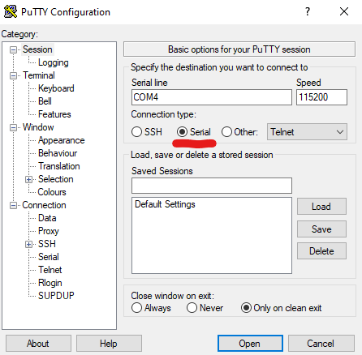
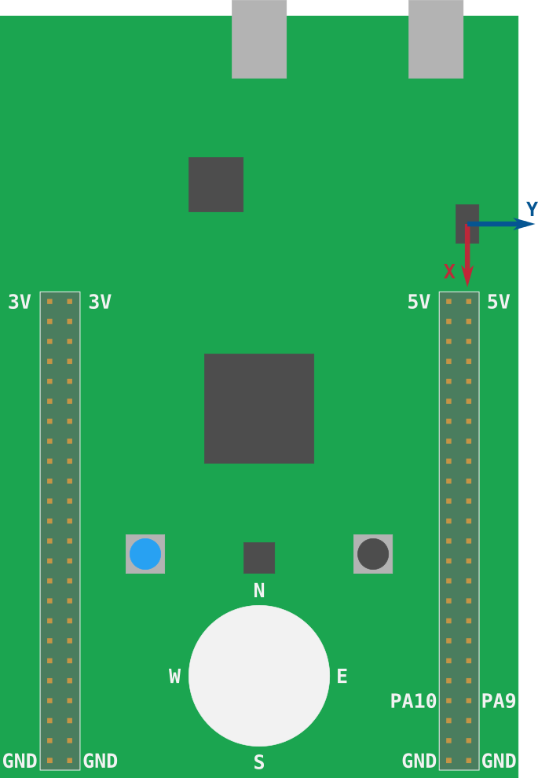

Discovery
通过Rust探索微控制器的世界！
这本书是关于基于微控制器的嵌入式系统的入门课程，它使用Rust作为教学语言，而不是通常的C/C++。
范围
将涵盖以下主题（最终，我希望）：
-
如何编写、构建、刷新和调试"嵌入式"(Rust)程序。
-
微控制器中常见的功能（"外部设备"）：数字输入和输出、脉冲宽度调制 (PWM)、模数转换器 (ADC)、串行、I2C和SPI等常见通信协议。
-
多任务处理概念：协作与抢占式多任务处理、中断、调度程序等。
-
控制系统概念：传感器、校准、数字滤波器、执行器、开环控制、闭环控制等。
方法
-
初学者友好。无需具备微控制器或嵌入式系统方面的经验。
-
动手。大量的练习将理论付诸实践。您将在这里完成大部分工作。 您将在这里完成大部分工作。
-
工具居中。我们将大量使用工具来简化开发。"真正的"调试、使用GDB和日志记录将在早期引入。在这里使用LED作为调试机制是不合适的。
非目标
本书范围之外的内容：
-
教Rust。已经有很多关于该主题的材料。我们将专注于微控制器和嵌入式系统。
-
是一本关于电路理论或电子学的综合性书籍。我们将仅介绍了解某些设备如何工作所需的最低要求。
-
涵盖链接描述文件和引导过程等细节。例如，我们将使用现有工具帮助您将代码放到板上，但不会详细介绍这些工具的工作原理。
另外我不打算将这个材料移植到其他开发板上；本书将独家使用STM32F3DISCOVERY开发板。
报告问题
这本书的源代码在这个存储库。如果您遇到任何错字或代码问题，请在问题跟踪器上报告。
其他嵌入式Rust资源
这本Discovery书只是嵌入式工作组提供的几个嵌入式Rust资源之一。 完整的选择可以在The Embedded Rust Bookshelf中找到。 这包括常见问题列表。
赞助

非常感谢integer 32赞助我写这本书！请给他们很多工作（他们做Rust咨询！） 所以他们别无选择，只能雇佣更多Rustaceans <3。
背景
什么是微控制器？
微控制器是芯片上的系统。而你的电脑是由几个分立的组件组成的：处理器、RAM、硬盘驱动器、以太网端口等。 微控制器将所有这些组件内置在单个"芯片"或封装中。这使得可以用最少的部件数构建系统。
你能用微控制器做什么？
许多事！微控制器是所谓的"嵌入式系统"的核心部分。嵌入式系统无处不在，但您通常不会注意到它们。 他们控制着洗衣服、打印文件和做饭的机器。 嵌入式系统使您生活和工作的建筑物保持在舒适的温度下， 并控制使您行驶的车辆停停走走的组件。
大多数嵌入式系统无需用户干预即可运行。即使他们像洗衣机一样暴露用户界面；他们的大部分操作都是自己完成的。
嵌入式系统通常用于控制物理过程。为了使这成为可能，他们有一个或多个设备来告诉他们世界的状态("传感器")，以及 一个或多个允许他们改变事物的设备 ("执行器")。例如，建筑气候控制系统可能具有：
我什么时候应该使用微控制器？
上面列出的许多嵌入式系统都可以使用运行Linux的计算机 (例如"Raspberry Pi")来实现。 为什么要改用微控制器？听起来开发程序可能更难。
主要原因是成本。微控制器比通用计算机便宜得多。不仅微控制器更便宜；它还需要更少的外部电气部件来操作。 这使得印刷电路板（PCB）更小，设计和制造成本更低。
另一个主要原因是功耗。微控制器消耗的功率比成熟的处理器少几个数量级。如果您的应用程序将使用电池运行，这将产生巨大的差异。
最后但并非最不重要的是：（硬件）实时限制。某些过程要求其控制器在一定时间间隔内对某些事件做出响应 （例如四旋翼机/无人机被阵风击中）。如果没有达到这个"最后期限"，这个过程可能会以灾难性的失败告终（例如无人机坠毁在地）。 运行通用操作系统的通用计算机在后台运行许多服务。这使得很难保证在严格的时间限制内执行程序。
什么时候不应该使用微控制器？
涉及繁重计算的地方。为了保持低功耗，微控制器可用的计算资源非常有限。例如，一些微控制器甚至没有对浮点运算的硬件支持。 在这些设备上，执行单精度数字的简单加法可能需要数百个CPU周期。
为什么使用Rust而不是C？
希望我不需要在这里说服您，因为您可能熟悉Rust和C之间的语言差异。我确实想提出一点是包管理。 C缺乏官方的、被广泛接受的包管理解决方案，而Rust有Cargo。这使得开发更加容易。而且，IMO，简单的包管理鼓励代码重用，因为 库可以很容易地集成到应用程序中，这也是一件好事，因为库得到了更多的"战斗测试"。
为什么我不应该使用Rust？
或者为什么我应该更喜欢C而不是Rust？
C生态系统更加成熟。针对几个问题的现成解决方案已经存在。如果您需要控制对时间敏感的过程，您可以使用现有的商业实时操作系统 (RTOS) 之一来解决您的问题。 Rust中还没有商业的生产级RTOS，因此您必须自己创建一个或尝试其中一个正在开发中的RTOS。
硬件/知识要求
阅读本书的主要知识要求是了解一些Rust。我们很难量化一些，但至少我可以告诉你，你不需要完全理解
泛型， 但你需要知道如何使用闭包。您还需要熟悉2018版的语法，extern crate尤其是在2018版中不需要的事实。
由于嵌入式编程的性质，了解二进制和十六进制值的表示方式以及一些按位运算符的使用也将非常有帮助。 例如，了解以下程序是如何产生输出的，这将很有用。
fn main() { let a = 0x4000_0000 + 0xa2; // Use of the bit shift "<<" operation. let b = 1 << 5; // {:X} will format values as hexadecimal println!("{:X}: {:X}", a, b); }
此外，要遵循此材料，您需要以下硬件：
(某些组件是可选的，但建议使用)
- 一个STM32F3DISCOVERY开发板。
(您可以从"大型"电子产品 供应商或电子商务网站购买此开发板)

- 可选。 3.3V USB <-> 串行模块。详细说明：如果您有发现板的最新版本之一 （鉴于第一个版本是几年前发布的，通常是这种情况），那么您不需要此模块， 因为开发板包含此功能。如果您有较旧版本 的电路板，则需要在第10章和第11章中使用此模块。为完整起见，我们将提供使用串行模块的说明。 这本书将使用这种特定的模式，但你可以使用任何其他模式，只要它在3.3V下运行。您可以从 电子商务网站购买的CH340G模块也可以使用，而且可能更便宜。

- 可选。HC-05蓝牙模块（带标头！）。HC-06也会起作用。
(与其他中国零件一样，你几乎只能在电子商务 网站上找到这些零件。（美国）电子产品供应商通常出于某种原因不库存这些零件)

- 两条mini-B USB电缆。STM32F3DISCOVERY板工作需要一个。另一个仅当您具有串行<-> USB模块时才需要。 确保两条电缆都支持数据传输，因为某些电缆仅支持充电设备。

注意：这些不是几乎所有Android手机都附带的USB电缆；这些是 微型USB电缆。确保你有正确的东西！
- 大部分是可选的。 5根母对母、4根公对母和1根公对公跳线 (AKA Dupont)。 你很可能需要一个母对母线来让ITM工作。只有当您使用USB<-> 串行和蓝牙模块时，才需要其他导线。

FAQ：等等，我为什么需要这个特定的硬件？
这让我和你的生活变得更加轻松。
如果我们不必担心硬件差异，那么这种材料就更容易接近。相信我。
FAQ：我可以用不同的开发板来学习这些材料吗？
大概这主要取决于两件事：您以前使用微控制器的经验和/或是否已经在某个地方为您的开发板提供了像f3这样的高级crate。
如果使用不同的开发板，这篇文章将失去大部分（如果不是全部的话）初学者友好性和"易于理解"性。
如果你有一个不同的开发板，并且你不认为自己完全是初学者，那么最好从快速启动项目模板开始。
搭建开发环境
处理微控制器涉及多种工具，因为我们将处理不同于您计算机的体系结构，我们必须在"远程"设备上运行和调试程序。
文档
不过，工具并不是万能的。如果没有文档，使用微控制器几乎是不可能的。
我们将在本书中参考所有这些文件：
说明：所有这些链接都指向PDF文件，其中一些文件长达数百页，大小为数MB。
- STM32F3DISCOVERY User Manual
- STM32F303VC Datasheet
- STM32F303VC Reference Manual
- LSM303DLHC *
- L3GD20 *
* 注意：较新的 (2020/09年左右) Discovery板可能具有不同的电子罗盘和陀螺仪（请参阅用户手册）。 因此，第14-16章中的很多内容将无法正常工作。看看githubissues的问题。
工具
我们将使用下面列出的所有工具。如果未指定最低版本，则任何最新版本都应有效，但我们已列出了已测试的版本。
-
Rust 1.31或更新的工具链。 USART章节要求1.51或更高版本。
-
itmdump>=0.3.1 (cargo install itm)。测试版本：0.3.1. -
OpenOCD >=0.8。测试版本：v0.9.0 和 v0.10.0
-
arm-none-eabi-gdb。强烈建议使用7.12版或更高版本。测试版本：7.10, 7.11, 7.12 和 8.1 -
cargo-binutils. 版本0.1.4或更高。
-
Linux和macOS上的
minicom。测试版本：2.7。 Readers报告picocom也可以工作，但本文将使用minicom -
Windows上的
PuTTY。
如果您的计算机具有蓝牙功能，并且您具有蓝牙模块，则可以额外安装这些工具来使用蓝牙模块。所有这些都是可选的：
- Linux，前提是您没有Blueman这样的蓝牙管理器应用程序。
bluezhcitoolrfcommrfkill
macOS / OSX / Windows用户只需要其操作系统附带的默认蓝牙管理器。
接下来，按照操作系统不可知的安装说明安装一些工具：
rustc & Cargo
按照说明安装rustuphttps://rustup.rs。
如果您已经安装了rustup，请再次检查您是否处于stable通道中，并且您的stable工具链是最新的。
rustc -V返回的日期应比下面显示的日期晚：
$ rustc -V
rustc 1.31.0 (abe02cefd 2018-12-04)
itmdump
cargo install itm
验证版本是否 >=0.3.1
$ itmdump -V
itmdump 0.3.1
cargo-binutils
安装 llvm-tools
rustup component add llvm-tools
安装 cargo-binutils
cargo install cargo-binutils
验证工具是否已安装
在终端上运行以下命令
cargo new test-size
cd test-size
cargo run
cargo size -- --version
结果应该是：
~
$ cargo new test-size
Created binary (application) `test-size` package
~
$ cd test-size
~/test-size (main)
$ cargo run
Compiling test-size v0.1.0 (~/test-size)
Finished dev [unoptimized + debuginfo] target(s) in 0.26s
Running `target/debug/test-size`
Hello, world!
~/test-size (main)
$ cargo size -- --version
Finished dev [unoptimized + debuginfo] target(s) in 0.00s
LLVM (http://llvm.org/):
LLVM version 11.0.0-rust-1.50.0-stable
Optimized build.
Default target: x86_64-unknown-linux-gnu
Host CPU: znver2
操作系统特定指令
现在，按照您使用的操作系统的特定说明进行操作：
Linux
以下是一些Linux发行版的安装命令。
必需的程序包
Ubuntu 18.04 或更新版本 / Debian stretch 或更新版本
注意：
gdb-multiarch是用于调试ARM Cortex-M程序的GDB命令
sudo apt-get install \
gdb-multiarch \
minicom \
openocd
Ubuntu 14.04 和 16.04
注意：
arm-none-eabi-gdb是用于调试ARM Cortex-M程序的GDB命令
sudo apt-get install \
gdb-arm-none-eabi \
minicom \
openocd
Fedora 23 或更高版本
sudo dnf install \
minicom \
openocd \
gdb
Arch Linux
注意：
arm-none-eabi-gdb是用于调试ARM Cortex-M程序的GDB命令
sudo pacman -S \
arm-none-eabi-gdb \
minicom \
openocd
其他发行版
注意：
arm-none-eabi-gdb是用于调试ARM Cortex-M程序的GDB命令
对于没有ARM预构建工具链包的发行版，请下载
"Linux 64-bit"文件并将其bin目录放在您的路径上。这里有一种方法：
mkdir -p ~/local && cd ~/local
tar xjf /path/to/downloaded/file/gcc-arm-none-eabi-10-2020-q4-major-x86_64-linux.tar.bz2
然后，使用您选择的编辑器在适当的shell init文件中附加到PATH(例如~/.zshrc 或 ~/.bashrc):
PATH=$PATH:$HOME/local/gcc-arm-none-eabi-10-2020-q4-major-x86_64-linux/bin
可选软件包
Ubuntu / Debian
sudo apt-get install \
bluez \
rfkill
Fedora
sudo dnf install \
bluez \
rfkill
Arch Linux
sudo pacman -S \
bluez \
bluez-utils \
rfkill
udev规则
这些规则允许您在没有root权限即sudo的情况下使用F3和串行模块等USB设备。
创建99-openocd.rules在/etc/udev/rules.d使用lsusb输出中的idVendor和idProduct。
例如，使用USB电缆将STM32F3DISCOVERYY连接到计算机。确保将电缆连接到"USB ST-LINK"端口，即板边缘中央的USB端口。
执行 lsusb:
lsusb | grep ST-LINK
结果应该是：
$ lsusb | grep ST-LINK
Bus 003 Device 003: ID 0483:374b STMicroelectronics ST-LINK/V2.1
因此idVendor为0483和idProduct为374b。
创建 /etc/udev/rules.d/99-openocd.rules:
sudo vi /etc/udev/rules.d/99-openocd.rules
内容如下：
# STM32F3DISCOVERY - ST-LINK/V2.1
ATTRS{idVendor}=="0483", ATTRS{idProduct}=="374b", MODE:="0666"
对于带有可选USB <-> 基于FT232的串行模块的旧设备
创建 /etc/udev/rules.d/99-ftdi.rules:
sudo vi /etc/udev/rules.d/99-openocd.rules
内容如下：
# FT232 - USB <-> Serial Converter
ATTRS{idVendor}=="0403", ATTRS{idProduct}=="6001", MODE:="0666"
重新加载udev规则：
sudo udevadm control --reload-rules
如果您的电脑上插了任何板，请拔下它们的插头，然后重新插入。
现在，转到下一节。
Windows
arm-none-eabi-gdb
ARM为Windows提供.exe安装程序。从这里获取，并按照说明操作。就在安装过程完成之前，勾选/选择
"向环境变量添加路径"选项。然后验证工具是否在%PATH%中：
验证是否安装了gcc：
arm-none-eabi-gcc -v
结果应该是：
(..)
$ arm-none-eabi-gcc -v
gcc version 5.4.1 20160919 (release) (..)
OpenOCD
OpenOCD for Windows没有官方二进制版本，但这里有非官方版本。获取0.10.x zip文件并将其解压缩到
驱动器中的某个位置 (我建议使用C:\OpenOCD但使用对您有意义的驱动器号) 然后更新%PATH%环境变量，使其包含
以下路径：C:\OpenOCD\bin (或以前使用的路径)。
验证OpenOCD是否已安装并在%PATH%中：
openocd -v
结果应该是：
$ openocd -v
Open On-Chip Debugger 0.10.0
(..)
PuTTY
从此网站下载最新的putty.exe并将其放置在%PATH%中的某个位置。
ST-LINK USB 驱动程序
您还需要安装此USB驱动程序，否则OpenOCD将无法工作。按照安装程序说明进行操作，确保安装正确的（32位或64位）驱动程序版本。
这就是全部！转到下一节。
macOS
可以使用Homebrew安装所有工具：
安装 ArmMbed
brew tap ArmMbed/homebrew-formulae
安装 ARM GCC 工具链
brew install arm-none-eabi-gdb
安装 minicom 和 OpenOCD
brew install minicom openocd
这就是全部！转到下一节。
验证安装
让我们验证所有工具是否正确安装。
仅限Linux
验证权限
用USB电缆将STM32F3DISCOVERY连接到计算机。确保将电缆连接到"USB ST-LINK"端口，即板边缘中央的USB端口。
STM32F3DISCOVERY现在应显示为/dev/bus/usb中的USB设备（文件）。让我们来看看它是如何被枚举的：
lsusb | grep -i stm
这将导致：
$ lsusb | grep -i stm
Bus 003 Device 004: ID 0483:374b STMicroelectronics ST-LINK/V2.1
$ # ^^^ ^^^
在我的例子中，STM32F3DISCOVERY连接到总线#3并被枚举为设备#4。这意味着文件
/dev/bus/usb/003/004是STM32F3DISCOVERY。让我们检查一下它的权限：
$ ls -la /dev/bus/usb/003/004
crw-rw-rw-+ 1 root root 189, 259 Feb 28 13:32 /dev/bus/usb/003/00
权限应为crw-rw-rw-。如果不是...请检查udev规则并尝试重新加载它们：
sudo udevadm control --reload-rules
对于带有可选USB USB <-> 基于FT232的串行模块的旧设备
拔下STM32F3DISCOVERY并插入串行模块。现在，找出它的关联文件是什么：
$ lsusb | grep -i ft232
Bus 003 Device 005: ID 0403:6001 Future Technology Devices International, Ltd FT232 Serial (UART) IC
在我的例子中，它是/dev/bus/usb/003/005。现在，检查它的权限：
$ ls -l /dev/bus/usb/003/005
crw-rw-rw- 1 root root 189, 21 Sep 13 00:00 /dev/bus/usb/003/005
如前所述，权限应为crw-rw-rw-。
验证 OpenOCD 连接
使用USB电缆将STM32F3DISCOVERY连接到板边缘中央标有"USB ST-LINK"的USB端口。
将USB电缆连接到电路板后，两个红色LEDs应立即亮起。
重要信息：STM32F3DISCOVERY板有多个硬件版本。对于较旧的版本，您需要将"interface"参数更改为
-f interface/stlink-v2.cfg(注意: 末尾没有-1)。或者，旧版本可以使用-f board/stm32f3discovery.cfg而不是-f interface/stlink-v2-1.cfg -f target/stm32f3x.cfg。
注意：OpenOCD v0.11.0 已弃用
interface/stlink-v2.cfg而改用interface/stlink.cfg支持ST-LINK/V1, ST-LINK/V2, ST-LINK/V2-1 和 ST-LINK/V3。
*Nix
仅供参考:：
interface目录通常位于/usr/share/openocd/scripts/中，这是openocd期望这些文件的默认位置。 如果您在其他地方安装了它们，请使用-s /path/to/scripts/选项指定安装目录。
openocd -f interface/stlink-v2-1.cfg -f target/stm32f3x.cfg
或者
openocd -f interface/stlink.cfg -f target/stm32f3x.cfg
Windows
在C:\OpenOCD的引用下面是OpenOCD安装的目录。
openocd -s C:\OpenOCD\share\scripts -f interface/stlink-v2-1.cfg -f target/stm32f3x.cfg
注意：cygwin用户报告了-s标志。如果遇到该问题，可以将
C:\OpenOCD\share\scripts\添加到参数中。
cygwin 用户：
openocd -f C:\OpenOCD\share\scripts\interface\stlink-v2-1.cfg -f C:\OpenOCD\share\scripts\target\stm32f3x.cfg
全部
OpenOCD是一种将调试信息从ITM通道转发到文件ITM的服务。
itm.txt,因此它将永远运行，不会返回到终端提示符。
OpenOCD的初始输出类似于：
Open On-Chip Debugger 0.10.0
Licensed under GNU GPL v2
For bug reports, read
http://openocd.org/doc/doxygen/bugs.html
Info : auto-selecting first available session transport "hla_swd". To override use 'transport select <transport>'.
adapter speed: 1000 kHz
adapter_nsrst_delay: 100
Info : The selected transport took over low-level target control. The results might differ compared to plain JTAG/SWD
none separate
Info : Unable to match requested speed 1000 kHz, using 950 kHz
Info : Unable to match requested speed 1000 kHz, using 950 kHz
Info : clock speed 950 kHz
Info : STLINK v2 JTAG v27 API v2 SWIM v15 VID 0x0483 PID 0x374B
Info : using stlink api v2
Info : Target voltage: 2.915608
Info : stm32f3x.cpu: hardware has 6 breakpoints, 4 watchpoints
(如果没有...请查看一般故障排除说明。)
此外，最靠近USB端口的一个红色LED应该开始在红光和绿光之间变化。
就是这样！它起作用了。现在可以使用Ctrl-c停止OpenOCD或关闭/终止终端。
满足您的硬件
让我们熟悉一下将要使用的硬件。
STM32F3DISCOVERY (the "F3")

在本书中，我们将此板称为"F3"。以下是电路板上的一些组件：
在这些组件中，最重要的是微控制器(有时简称为"MCU" 或 "microcontroller unit")，它是位于板中央的黑色大正方形。 MCU是运行代码的工具。有时你可能会读到"编程开发板"，而实际上我们所做的是对安装在板上的MCU进行编程。
STM32F303VCT6 ("STM32F3")
既然MCU如此重要，让我们仔细看看我们开发板上的那个。
我们的MCU周围有100个微型金属引脚。这些引脚连接到迹线上，这些迹线是将"电路"板上的组件连接在 一起的电线。MCU可以动态地改变引脚的电特性。这类似于光开关改变电流流过电路的方式。 通过启用或 禁用流经特定引脚的电流，连接到该引脚的LED（通过迹线）可以打开和关闭。
每个制造商使用不同的零件编号方案，但许多制造商允许您通过查看零件编号来确定有关零部件的信息。
查看MCU的部件号(STM32F303VCT6)，前面的ST提示我们这是ST Microelectronics制造的部件。
通过搜索ST's 营销材料，我们还可以了解以下内容：
M32代表这是一个基于 Arm®-based 32位微控制器。F3表示MCU来自ST's "STM32F3"系列。这是一系列基于Cortex®-M4 处理器设计的MCU。- 零件号的其余部分将涉及更多细节，如额外功能和RAM大小，而这一点我们不太关心。
Arm? Cortex-M4?
如果我们的芯片由ST制造，那么Arm是谁？如果我们的芯片是STM32F3，什么是Cortex-M4？
Y你可能会惊讶地听到，虽然"基于Arm"的芯片非常流行，但"Arm"商标背后的公司(Arm Holdings)实际上并没有生产用于购买的芯片。 相反，他们的主要商业模式只是设计芯片的一部分。然后，他们会将这些设计许可给制造商，然后制造商会以物理硬件的 形式实施这些设计（可能会有一些自己的调整），然后可以销售。Arm's在这方面的策略不同于Intel这样的公司，后者同时设计 并制造自己的芯片。
Arm许可了一系列不同的设计。他们的"Cortex-M"系列设计主要用作微控制器的核心。例如，Cortex-M0设计用于低成本和低功耗。 Cortex-M7的成本更高，但具有更多功能和性能。我们STM32F3的核心是基于Cortex-M4，它位于中间： 比Cortex-M0具有更多的功能和性能，但比Cortex-M7便宜。
幸运的是，为了这本书，你不需要太了解不同类型的处理器或Cortex设计。然而，希望您现在对设备的术语有更多的了解。 当您专门使用STM32F3时，您可能会发现自己正在阅读文档并使用基于Cortex-M的芯片的工具，因为STM32F3基于Cortex-M设计。
串行模块

如果您有较旧版本的发现板，您可以使用此模块在F3中的微控制器与计算机之间交换数据。此模块将使用USB电缆连接到您的计算机。 在这一点上，我不再多说了。
如果您有较新版本的主板，则不需要此模块。ST-LINK将作为USB<->串行转换器，在引脚PC4和PC5处连接到微控制器USART1。
蓝牙模块
该模块的用途与串行模块完全相同，但它通过蓝牙发送数据而不是通过USB。
LED轮盘
好了，让我们从构建以下应用程序开始：

我会给你一个高级API来实现这个应用程序，但别担心我们稍后会做低级的工作。本章的主要目标是熟悉闪烁和调试过程。
在本文中，我们将使用discovery存储库中的起始代码。确保您始终拥有主分支的最新版本，因为此网站跟踪该分支。
起始代码位于该存储库的src目录中。在该目录中，有更多以本书每一章命名的目录。这些目录中的大多数都是初级货运项目。
现在，跳转到src/05-led-roulette目录。检查src/main.rs文件：
#![deny(unsafe_code)] #![no_main] #![no_std] use aux5::entry; #[entry] fn main() -> ! { let _y; let x = 42; _y = x; // infinite loop; just so we don't leave this stack frame loop {} }
微控制器程序在两个方面与标准程序不同：#![no_std]和#![no_main]。
no_std属性表示该程序不会使用std，该crate假定有一个底层操作系统；该程序将转而使用core crate，这是
std的一个子集，可以在裸机系统上运行（文件和套接字等OS抽象的系统）。
no_main属性表示该程序不会使用标准main接口，它是为接收参数的命令行应用程序定制的。我们将使用cortex-m-rt crate中
的entry属性来定义自定义入口点，而不是标准的"main"在这个程序中，我们将入口点命名为"main"，但可以使用任何其他名称。
入口点函数必须具有签名fn() -> !这种类型表示函数不能返回&这意味着程序永远不会终止。
如果你是一个细心的观察者，你也会注意到Cargo项目中有一个.cargo目录。该目录包含一个Cargo配置文件(.cargo/config)，
该文件调整链接过程，以根据目标设备的要求调整程序的内存布局。这种改进的连接过程是cortex-m-rt crate的要求。
在以后的章节中，您还将进一步调整.cargo/config，以使构建和调试更容易。
好了，让我们开始构建这个程序。
构建
第一步是构建我们的"二进制" crate。因为微控制器的架构与您的计算机不同，所以我们必须进行交叉编译。
Rust land中的交叉编译就像向rustc或Cargo传递一个额外的--target标志一样简单。
复杂的部分是找出该标志的参数：target的名字。
F3中的微控制器中有一个Cortex-M4F处理器。rustc知道如何交叉编译到Cortex-M架构，并
提供4个不同的targets，涵盖该架构中的不同处理器系列：
thumbv6m-none-eabi, 适用于Cortex-M0 和 Cortex-M1处理器thumbv7m-none-eabi, 适用于Cortex-M3处理器thumbv7em-none-eabi, 适用于Cortex-M4 和 Cortex-M7处理器thumbv7em-none-eabihf, 用于Cortex-M4F 和 Cortex-M7F处理器
对于F3，我们将使用thumbv7em-none-eabihf。在交叉编译之前，您必须为目标下载标准库的预编译版本
（实际上是标准库的缩减版本）。这是使用rustup完成的：
rustup target add thumbv7em-none-eabihf
您只需执行上述步骤一次；每当您更新工具链时，rustup都会重新安装一个新的标准库(rust-std组件) 。
有了rust-std组件，您现在可以使用Cargo交叉编译程序。
注意：确保您位于
src/05-led-roulette目录中，并运行下面的cargo build命令以创建可执行文件：
cargo build --target thumbv7em-none-eabihf
在控制台上，您应该看到以下内容：
$ cargo build --target thumbv7em-none-eabihf
Compiling typenum v1.12.0
Compiling semver-parser v0.7.0
Compiling version_check v0.9.2
Compiling nb v1.0.0
Compiling void v1.0.2
Compiling autocfg v1.0.1
Compiling cortex-m v0.7.1
Compiling proc-macro2 v1.0.24
Compiling vcell v0.1.3
Compiling unicode-xid v0.2.1
Compiling stable_deref_trait v1.2.0
Compiling syn v1.0.60
Compiling bitfield v0.13.2
Compiling cortex-m v0.6.7
Compiling cortex-m-rt v0.6.13
Compiling r0 v0.2.2
Compiling stm32-usbd v0.5.1
Compiling stm32f3 v0.12.1
Compiling usb-device v0.2.7
Compiling cfg-if v1.0.0
Compiling paste v1.0.4
Compiling stm32f3-discovery v0.6.0
Compiling embedded-dma v0.1.2
Compiling volatile-register v0.2.0
Compiling nb v0.1.3
Compiling embedded-hal v0.2.4
Compiling semver v0.9.0
Compiling generic-array v0.14.4
Compiling switch-hal v0.3.2
Compiling num-traits v0.2.14
Compiling num-integer v0.1.44
Compiling rustc_version v0.2.3
Compiling bare-metal v0.2.5
Compiling cast v0.2.3
Compiling quote v1.0.9
Compiling generic-array v0.13.2
Compiling generic-array v0.12.3
Compiling generic-array v0.11.1
Compiling panic-itm v0.4.2
Compiling lsm303dlhc v0.2.0
Compiling as-slice v0.1.4
Compiling micromath v1.1.0
Compiling accelerometer v0.12.0
Compiling chrono v0.4.19
Compiling aligned v0.3.4
Compiling rtcc v0.2.0
Compiling cortex-m-rt-macros v0.1.8
Compiling stm32f3xx-hal v0.6.1
Compiling aux5 v0.2.0 (~/embedded-discovery/src/05-led-roulette/auxiliary)
Compiling led-roulette v0.2.0 (~/embedded-discovery/src/05-led-roulette)
Finished dev [unoptimized + debuginfo] target(s) in 17.91s
注意：确保编译此crate时不进行优化。提供的Cargo.toml文件和build命令将确保优化关闭。
好了，现在我们已经生成了一个可执行文件。这个可执行文件不会闪烁任何LED，它只是一个简化的版本，我们将在本章稍后部分进行构建。 作为健全性检查，让我们验证生成的可执行文件实际上是ARM二进制文件：
cargo readobj --target thumbv7em-none-eabihf --bin led-roulette -- --file-header
cargo readobj ..相当于readelf -h target/thumbv7em-none-eabihf/debug/led-roulette应该产生类似的结果：
$ cargo readobj --target thumbv7em-none-eabihf --bin led-roulette -- --file-header
Finished dev [unoptimized + debuginfo] target(s) in 0.02s
ELF Header:
Magic: 7f 45 4c 46 01 01 01 00 00 00 00 00 00 00 00 00
Class: ELF32
Data: 2's complement, little endian
Version: 1 (current)
OS/ABI: UNIX - System V
ABI Version: 0
Type: EXEC (Executable file)
Machine: ARM
Version: 0x1
Entry point address: 0x8000195
Start of program headers: 52 (bytes into file)
Start of section headers: 818328 (bytes into file)
Flags: 0x5000400
Size of this header: 52 (bytes)
Size of program headers: 32 (bytes)
Number of program headers: 4
Size of section headers: 40 (bytes)
Number of section headers: 22
Section header string table index: 20
接下来，我们将把程序闪存到微控制器中。
闪存
闪存是将我们的程序移动到微控制器（持久）存储器中的过程。一旦闪存，微控制器将在每次通电时执行闪存程序。
在这种情况下，我们的led-roulette程序将是微控制器存储器中的唯一程序。我的意思是，微控制器上
没有运行任何其他东西：没有操作系统，没有"守护进程"，什么都没有。led-roulette可以完全控制设备。
根据实际闪烁。我们需要做的第一件事是启动OpenOCD。我们在上一节中做过，但这次
我们将在临时目录(*nix上的/tmp; Windows上的%TEMP%)。
确保F3已连接到计算机，并在新终端中运行以下命令。
对于*nix & MacOS:
cd /tmp
openocd -f interface/stlink-v2-1.cfg -f target/stm32f3x.cfg
对于Windows注意：用C:替换实际的OpenOCD路径：
cd %TEMP%
openocd -s C:\share\scripts -f interface/stlink-v2-1.cfg -f target/stm32f3x.cfg
注意：较旧版本的开发板需要向
openocd传递稍微不同的参数。查看本节了解详细信息。
程序将阻止；保持终端打开。
现在是解释openocd命令实际作用的好时机。
我提到STM32F3DISCOVERY (又名F3) 实际上有两个微控制器。其中一个用作程序员/调试器。板上用作编程器的部分称为 ST-LINK (决定将其称为 STMicroelectronics)。该ST-LINK使用串行线调试（SWD）接口连接到目标微控制器 (该接口是ARM标准，因此您在处理其他基于Cortex-M的微控制器时会遇到它)。该SWD接口可用于闪存和调试微控制器。 ST-LINK连接到"USB ST-LINK"端口，当您将F3连接到计算机时，ST-LINK将显示为USB设备。

至于OpenOCD，它是一种软件，它在USB设备上提供一些服务，如GDB服务器，这些设备暴露了SWD或JTAG等调试协议。
转到实际命令：我们使用的.cfg文件指示OpenOCD查找ST-LINK USB设备(interface/stlink-v2-1.cfg)
并期望STM32F3XX微控制器(target/stm32f3x.cfg)连接到ST-LINK。
OpenOCD输出如下所示：
$ openocd -f interface/stlink-v2-1.cfg -f target/stm32f3x.cfg
Open On-Chip Debugger 0.10.0
Licensed under GNU GPL v2
For bug reports, read
http://openocd.org/doc/doxygen/bugs.html
Info : auto-selecting first available session transport "hla_swd". To override use 'transport select <transport>'.
adapter speed: 1000 kHz
adapter_nsrst_delay: 100
Info : The selected transport took over low-level target control. The results might differ compared to plain JTAG/SWD
none separate
Info : Unable to match requested speed 1000 kHz, using 950 kHz
Info : Unable to match requested speed 1000 kHz, using 950 kHz
Info : clock speed 950 kHz
Info : STLINK v2 JTAG v37 API v2 SWIM v26 VID 0x0483 PID 0x374B
Info : using stlink api v2
Info : Target voltage: 2.888183
Info : stm32f3x.cpu: hardware has 6 breakpoints, 4 watchpoints
"6个断点，4个监视点" 部分表示处理器可用的调试功能。
保持openocd进程运行，在上一个终端或新终端中确保您位于项目的确保您位于项目的src/05-led-roulette/目录中。
我提到OpenOCD提供了一个GDB服务器，所以我们现在就连接到它：
执行 GDB
首先，我们需要确定可以调试ARM二进制文件的gdb版本。
这可以是以下任意一个命令，请尝试每一个：
arm-none-eabi-gdb -q -ex "target remote :3333" target/thumbv7em-none-eabihf/debug/led-roulette
gdb-multiarch -q -ex "target remote :3333" target/thumbv7em-none-eabihf/debug/led-roulette
gdb -q -ex "target remote :3333" target/thumbv7em-none-eabihf/debug/led-roulette
失败案例e
如果远程调试后出现warning或error，您可以使用：Remote debugging using :3333检测失败情况：
$ gdb -q -ex "target remote :3333" target/thumbv7em-none-eabihf/debug/led-roulette
Reading symbols from target/thumbv7em-none-eabihf/debug/led-roulette...
Remote debugging using :3333
warning: Architecture rejected target-supplied description
Truncated register 16 in remote 'g' packet
(gdb)
成功案例
成功案例 1：
$ arm-none-eabi-gdb -q -ex "target remote :3333" target/thumbv7em-none-eabihf/debug/led-roulette
Reading symbols from target/thumbv7em-none-eabihf/debug/led-roulette...
Remote debugging using :3333
cortex_m_rt::Reset () at ~/.cargo/registry/src/github.com-1ecc6299db9ec823/cortex-m-rt-0.6.13/src/lib.rs:497
497 pub unsafe extern "C" fn Reset() -> ! {
(gdb)
成功案例 2：
~/embedded-discovery/src/05-led-roulette (master)
$ arm-none-eabi-gdb -q -ex "target remote :3333" target/thumbv7em-none-eabihf/debug/led-roulette
Reading symbols from target/thumbv7em-none-eabihf/debug/led-roulette...
Remote debugging using :3333
0x00000000 in ?? ()
(gdb)
在失败和成功的情况下，您应该在OpenOCD终端中看到新的输出，如下所示：
Info : stm32f3x.cpu: hardware has 6 breakpoints, 4 watchpoints
+Info : accepting 'gdb' connection on tcp/3333
+Info : device id = 0x10036422
+Info : flash size = 256kbytes
注意：如果您收到
undefined debug reason 7 - target needs reset之类的错误，您可以尝试monitor reset halt参考此处。
默认情况下，OpenOCD's 的GDB服务器侦听TCP端口3333 (localhost)。此命令正在连接到该端口。
更新 ../.cargo/config.toml
现在您已经成功地确定了需要使用的调试器，我们需要更改../.cargo/config.toml这样cargo run命令将成功。
注意：
cargo是Rust包管理器，您可以在这里阅读。
返回到终端提示符，查看../.cargo/config.toml：
~/embedded-discovery/src/05-led-roulette
$ cat ../.cargo/config.toml
[target.thumbv7em-none-eabihf]
runner = "arm-none-eabi-gdb -q"
# runner = "gdb-multiarch -q"
# runner = "gdb -q"
rustflags = [
"-C", "link-arg=-Tlink.x",
]
[build]
target = "thumbv7em-none-eabihf"
使用您最喜欢的编辑器编辑../.cargo/config.toml，以便runner程序行包含该调试器的正确名称：
nano ../.cargo/config.toml
例如，如果您的调试器是gdb-multiarch，那么在编辑git diff之后应该是：
$ git diff ../.cargo/config.toml
diff --git a/src/.cargo/config.toml b/src/.cargo/config.toml
index ddff17f..8512cfe 100644
--- a/src/.cargo/config.toml
+++ b/src/.cargo/config.toml
@@ -1,6 +1,6 @@
[target.thumbv7em-none-eabihf]
-runner = "arm-none-eabi-gdb -q"
-# runner = "gdb-multiarch -q"
+# runner = "arm-none-eabi-gdb -q"
+runner = "gdb-multiarch -q"
# runner = "gdb -q"
rustflags = [
"-C", "link-arg=-Tlink.x",
现在，您已经有了../.cargo/config.toml设置让我们使用cargo run来测试它，以启动调试会话。
注意：
--target thumbv7em-none-eabihf定义要构建和运行的体系结构。在我们的../.cargo/config.toml文件我们有target = "thumbv7em-none-eabihf"所以实际上不需要指定--target我们在这里这样做只是为了让您知道可以使用命令行上的参数，并且它们会覆盖config.toml文件中的参数。
cargo run --target thumbv7em-none-eabihf
结果如下：
~/embedded-discovery/src/05-led-roulette
$ cargo run --target thumbv7em-none-eabihf
Finished dev [unoptimized + debuginfo] target(s) in 0.01s
Running `arm-none-eabi-gdb -q ~/embedded-discovery/target/thumbv7em-none-eabihf/debug/led-roulette`
Reading symbols from ~/embedded-discovery/target/thumbv7em-none-eabihf/debug/led-roulette...
现在target remote :3333以连接到OpenOCD服务器并连接到F3:
(gdb) target remote :3333
Remote debugging using :3333
0x00000000 in ?? ()
好极了，我们将修改在future里的../.cargo/config.toml。但是由于该文件与所有章节共享，因此在进
行这些更改时应牢记这一点。如果您希望或我们需要进行仅与特定章节相关的更改，请创建一个在该章节目录本地的.cargo/config.toml
闪存设备
假设您正在运行GDB，如果没有按照上一节中的建议启动它。
现在使用gdb中的load命令将程序闪存到设备中：
(gdb) load
Loading section .vector_table, size 0x194 lma 0x8000000
Loading section .text, size 0x20ec lma 0x8000194
Loading section .rodata, size 0x514 lma 0x8002280
Start address 0x08000194, load size 10132
Transfer rate: 17 KB/sec, 3377 bytes/write.
您还将在OpenOCD终端中看到新的输出，例如：
Info : flash size = 256kbytes
+Info : Unable to match requested speed 1000 kHz, using 950 kHz
+Info : Unable to match requested speed 1000 kHz, using 950 kHz
+adapter speed: 950 kHz
+target halted due to debug-request, current mode: Thread
+xPSR: 0x01000000 pc: 0x08000194 msp: 0x2000a000
+Info : Unable to match requested speed 8000 kHz, using 4000 kHz
+Info : Unable to match requested speed 8000 kHz, using 4000 kHz
+adapter speed: 4000 kHz
+target halted due to breakpoint, current mode: Thread
+xPSR: 0x61000000 pc: 0x2000003a msp: 0x2000a000
+Info : Unable to match requested speed 1000 kHz, using 950 kHz
+Info : Unable to match requested speed 1000 kHz, using 950 kHz
+adapter speed: 950 kHz
+target halted due to debug-request, current mode: Thread
+xPSR: 0x01000000 pc: 0x08000194 msp: 0x2000a000
我们的程序已加载，让我们调试它！
调试
我们已经在调试会话中，所以让我们调试程序。
在load命令之后，我们的程序在入口点停止。这由GDB输出的"起始地址 0x8000XXX"部分表示。
入口点是处理器/CPU将首先执行的程序的一部分。
我向您提供的starter项目有一些在main函数之前运行的额外代码。此时 我们对"pre-main"部分不感兴趣，所以
让我们直接跳到main函数的开头。我们将使用断点来实现这一点。在(gdb)提示符下发出break main：
注意：对于这些GDB命令，我通常不会提供可复制的代码块，因为这些代码块很短，而且自己输入会更快。 此外，大多数可以缩短。例如，
b表示break或s表示step，请参阅GDB快速参考以获取更多信息或使用谷歌查找其他。 此外，您可以使用制表符完成，方法是输入一个制表符以外的前几个字母来完成，或者输入两个制表符来查看所有可能的命令。最后，
help xxxx其中xxxx是命令将提供短名称和其他信息：(gdb) help s step, s Step program until it reaches a different source line. Usage: step [N] Argument N means step N times (or till program stops for another reason).
(gdb) break main
Breakpoint 1 at 0x80001f0: file src/05-led-roulette/src/main.rs, line 7.
Note: automatically using hardware breakpoints for read-only addresses.
下一步发出continue命令：
(gdb) continue
Continuing.
Breakpoint 1, led_roulette::__cortex_m_rt_main_trampoline () at src/05-led-roulette/src/main.rs:7
7 #[entry]
断点可用于停止程序的正常流程。continue命令将允许程序自由运行直到到达断点。在这种情况下，
直到它到达#[entry]，这是主函数的跳点，其中break main设置断点。
注意：GDB输出显示"Breakpoint 1"。请记住，我们的处理器只能使用这些断点中的六个，所以最好注意这些消息。
好的。由于我们停在#[entry]使用disassemble /m我们看到了entry的代码，这是一个主要点跳点。
这意味着它建立堆栈，然后使用ARM分支和链接指令bl调用main函数的子例程调用。
(gdb) disassemble /m
Dump of assembler code for function main:
7 #[entry]
0x080001ec <+0>: push {r7, lr}
0x080001ee <+2>: mov r7, sp
=> 0x080001f0 <+4>: bl 0x80001f6 <_ZN12led_roulette18__cortex_m_rt_main17he61ef18c060014a5E>
0x080001f4 <+8>: udf #254 ; 0xfe
End of assembler dump.
接下来，我们需要发出一个stepGDB命令，该命令将逐步将程序语句推进到函数/过程中。
因此，在这个第一步命令之后，我们进入main，位于第一个可执行的rust语句第10行，但它没有被执行：
(gdb) step
led_roulette::__cortex_m_rt_main () at src/05-led-roulette/src/main.rs:10
10 let x = 42;
接下来，我们将发出第二个step, 该步骤执行第10行并停止在第11行11 _y = x;，再次不执行第11行
注意：我们可以在第二个
(gdb)提示符处按enter，它会重新发出前面的语句step， 但为了清楚起见，在本教程中，我们通常会重新输入命令。
(gdb) step
11 _y = x;
如您所见，在这种模式下，在每个step中，GDB都会打印当前语句及其行号。正如您稍后在TUI模式中看到的，您将在命令区域中看不到该语句。
我们现在开始"在"_y = x语句；该声明尚未执行。这意味着x已初始化，但_y未初始化。
让我们使用print命令检查这些堆栈/局部变量，简称p：
(gdb) print x
$1 = 42
(gdb) p &x
$2 = (*mut i32) 0x20009fe0
(gdb) p _y
$3 = 536870912
(gdb) p &_y
$4 = (*mut i32) 0x20009fe4
正如预期的那样，x包含值42。但_y包含值536870912 (?)。这是因为_y尚未初始化，它包含一些垃圾值。
命令print &x打印变量x的地址。这里有趣的是，GDB输出显示了引用的类型：*mut i32，一个指向i32值的可变指针。
另一个有趣的事情是，x和_y的地址彼此非常接近：们的地址仅相隔4个字节。
您也可以使用info locals命令，而不是逐个打印局部变量：
(gdb) info locals
x = 42
_y = 536870912
好的。下一个step命令我们将在loop {}语句的顶部：
(gdb) step
14 loop {}
现在应该初始化_y。
(gdb) print _y
$5 = 42
如果我们在loop {}语句的顶部再次使用step，我们将陷入困境，因为程序永远不会传递该语句。
注意：如果您错误地使用了
step或任何其他命令，并且GDB卡住了，您可以按Ctrl+C将其松开。
如上所述，disassemble /m命令可用反汇编当前所在行的程序。您可能还希望将set print asm-demangle on设置为打开，
以便对名称进行解映射，这只需要在调试会话中执行一次。稍后，此命令和其他命令将放置在初始化文件中，这将简化调试会话的启动。
(gdb) set print asm-demangle on
(gdb) disassemble /m
Dump of assembler code for function _ZN12led_roulette18__cortex_m_rt_main17h51e7c3daad2af251E:
8 fn main() -> ! {
0x080001f6 <+0>: sub sp, #8
0x080001f8 <+2>: movs r0, #42 ; 0x2a
9 let _y;
10 let x = 42;
0x080001fa <+4>: str r0, [sp, #0]
11 _y = x;
0x080001fc <+6>: str r0, [sp, #4]
12
13 // infinite loop; just so we don't leave this stack frame
14 loop {}
=> 0x080001fe <+8>: b.n 0x8000200 <led_roulette::__cortex_m_rt_main+10>
0x08000200 <+10>: b.n 0x8000200 <led_roulette::__cortex_m_rt_main+10>
End of assembler dump.
看到左侧的=>胖箭头了吗? 它显示处理器接下来要执行的指令。
此外，如上所述，如果您要执行step命令，GDB会卡住，因为它正在执行一条到自身的分支指令，并且永远无法通过它。
因此，您需要使用Ctrl+C重新获得控制权。另一种方法是使用stepi(si)GDB命令，它执行一条asm指令，
GDB将打印处理器下一步将执行的语句的地址和行号，并且不会卡住。
(gdb) stepi
0x08000194 14 loop {}
(gdb) si
0x08000194 14 loop {}
在我们转向更有趣的事情之前，最后一个技巧。在GDB中输入以下命令：
(gdb) monitor reset halt
Unable to match requested speed 1000 kHz, using 950 kHz
Unable to match requested speed 1000 kHz, using 950 kHz
adapter speed: 950 kHz
target halted due to debug-request, current mode: Thread
xPSR: 0x01000000 pc: 0x08000194 msp: 0x2000a000
(gdb) continue
Continuing.
Breakpoint 1, led_roulette::__cortex_m_rt_main_trampoline () at src/05-led-roulette/src/main.rs:7
7 #[entry]
(gdb) disassemble /m
Dump of assembler code for function main:
7 #[entry]
0x080001ec <+0>: push {r7, lr}
0x080001ee <+2>: mov r7, sp
=> 0x080001f0 <+4>: bl 0x80001f6 <led_roulette::__cortex_m_rt_main>
0x080001f4 <+8>: udf #254 ; 0xfe
End of assembler dump.
我们现在又回到了#[entry]开头！
monitor reset halt将重置微控制器，并在程序开始时立即停止。然后continue命令将允许程序自由运行，
直到到达断点，在本例中，它是#[entry]处的断点。
当您错误地跳过了您感兴趣检查的程序的一部分时，此组合非常方便。您可以轻松地将程序的状态回滚到最开始。
细节：此
reset命令不会清除或触及RAM。该内存将保留上次运行时的值。这应该不是问题，除非 程序的行为取决于未初始化变量的值，但这是未定义行为（UB）的定义。
我们已完成此调试会话。你可以用quit命令结束它。
(gdb) quit
A debugging session is active.
Inferior 1 [Remote target] will be detached.
Quit anyway? (y or n) y
Detaching from program: $PWD/target/thumbv7em-none-eabihf/debug/led-roulette, Remote target
Ending remote debugging.
为了获得更好的调试体验，您可以使用GDB的文本用户界面(TUI)。要进入该模式，请在GDB shell中输入以下命令之一：
(gdb) layout src
(gdb) layout asm
(gdb) layout split
注意：向Windows用户道歉，GNU ARM嵌入式工具链附带的GDB可能不支持此TUI模式
:-(。
下面是通过执行以下命令设置layout split的示例。如您所见，我们已经放弃传递--target参数：
$ cargo run
(gdb) target remote :3333
(gdb) load
(gdb) set print asm-demangle on
(gdb) set style sources off
(gdb) break main
(gdb) continue
这里有一个命令行，将上述命令作为-ex参数，以节省您的键入时间，不久我们将提供一种更简单的方法来执行初始命令集：
cargo run -- -q -ex 'target remote :3333' -ex 'load' -ex 'set print asm-demangle on' -ex 'set style sources off' -ex 'b main' -ex 'c' target/thumbv7em-none-eabihf/debug/led-roulette
结果如下：

现在，我们将向下滚动顶部源窗口，以便查看整个文件并执行layout split，然后执行以下step：

然后我们将执行一些info locals和step's：
(gdb) info locals
(gdb) step
(gdb) info locals
(gdb) step
(gdb) info locals

在任何时候，您都可以使用以下命令离开TUI模式：
(gdb) tui disable

注意：如果您不喜欢默认的GDB CLI，请查看gdb仪表板。 它使用Python将默认GDB CLI转换为显示寄存器、源代码视图、程序集视图和其他内容的仪表板。
但不要关闭OpenOCD！稍后我们会反复使用它。最好让它继续运行。 如果您想了解更多有关GDB功能的信息，请查看何使用GDB一节。
接下来是什么？我承诺的高级API。
Led 和 Delay 抽象概念
现在，我将介绍两个高级抽象，我们将使用它们来实现LED轮盘应用程序。
auxiliary crate，aux5，公开了一个名为init的初始化函数。
调用此函数时，返回两个打包在元组中的值：Delay值和LedArray值。
Delay可以用于在指定的毫秒数内阻止程序。
LedArray是由八个Led组成的数组。每个Led代表F3板上的一个Led，并显示两种方法：
on和off分别用于打开或关闭Led。
让我们通过修改起始代码来尝试这两种抽象，如下所示：
#![deny(unsafe_code)] #![no_main] #![no_std] use aux5::{entry, Delay, DelayMs, LedArray, OutputSwitch}; #[entry] fn main() -> ! { let (mut delay, mut leds): (Delay, LedArray) = aux5::init(); let half_period = 500_u16; loop { leds[0].on().ok(); delay.delay_ms(half_period); leds[0].off().ok(); delay.delay_ms(half_period); } }
现在构建它：
cargo build
注意：在开始GDB会话之前，可能忘记重建程序；这种遗漏可能会导致非常混乱的调试会话。 为了避免这个问题，你可以只调用
cargo run而不是cargo build。cargo run命令将构建并 启动调试会话，确保您永远不会忘记重新编译程序。
现在，我们将运行并重复上一节中的闪烁过程，但使用新程序。我会让你输入cargo run，这将很快变得容易。 :)
注意：不要忘记在单独的终端上启动
openocd(调试器)。否则，target remote :3333将无法工作！
$ cargo run
Finished dev [unoptimized + debuginfo] target(s) in 0.01s
Running `arm-none-eabi-gdb -q ~/embedded-discovery/target/thumbv7em-none-eabihf/debug/led-roulette`
Reading symbols from ~/embedded-discovery/target/thumbv7em-none-eabihf/debug/led-roulette...
(gdb) target remote :3333
Remote debugging using :3333
led_roulette::__cortex_m_rt_main_trampoline () at ~/embedded-discovery/src/05-led-roulette/src/main.rs:7
7 #[entry]
(gdb) load
Loading section .vector_table, size 0x194 lma 0x8000000
Loading section .text, size 0x52c0 lma 0x8000194
Loading section .rodata, size 0xb50 lma 0x8005454
Start address 0x08000194, load size 24484
Transfer rate: 21 KB/sec, 6121 bytes/write.
(gdb) break main
Breakpoint 1 at 0x8000202: file ~/embedded-discovery/src/05-led-roulette/src/main.rs, line 7.
Note: automatically using hardware breakpoints for read-only addresses.
(gdb) continue
Continuing.
Breakpoint 1, led_roulette::__cortex_m_rt_main_trampoline ()
at ~/embedded-discovery/src/05-led-roulette/src/main.rs:7
7 #[entry]
(gdb) step
led_roulette::__cortex_m_rt_main () at ~/embedded-discovery/src/05-led-roulette/src/main.rs:9
9 let (mut delay, mut leds): (Delay, LedArray) = aux5::init();
(gdb)
好的，让我们一步一步看代码。这次，我们将使用next命令而不是step。不同的是，next命令将跳过函数调用，而不是进入它们内部。
(gdb) next
11 let half_period = 500_u16;
(gdb) next
13 loop {
(gdb) next
14 leds[0].on().ok();
(gdb) next
15 delay.delay_ms(half_period);
执行leds[0].on().ok() 语句后，您应该看到一个红色LED，指向北方，打开。
让我们继续浏览该程序：
(gdb) next
17 leds[0].off().ok();
(gdb) next
18 delay.delay_ms(half_period);
delay_ms调用将阻止程序半秒，但您可能没有注意到，因为next时间才能执行。然而，在跨过
leds[0].off()语句，您应该看到红色LED熄灭。
你已经可以猜到这个程序的作用了。使用continue命令让它不间断地运行。
(gdb) continue
Continuing.
现在，让我们做一些更有趣的事情。我们将使用GDB修改程序的行为。
首先，让我们按Ctrl+C停止无限循环。你很可能会在Led::on，Led::off 或delay_ms中的某个位置结束：
^C
Program received signal SIGINT, Interrupt.
0x08003434 in core::ptr::read_volatile<u32> (src=0xe000e010)
at ~/.rustup/toolchains/stable-x86_64-unknown-linux-gnu/lib/rustlib/src/rust/library/core/src/ptr/mod.rs:1053
在我的例子中，程序在read_volatile函数中停止了执行。GDB输出显示了一些有趣的信息：
core::ptr::read_volatile (src=0xe000e010)。这意味着该函数来自core crate，并且是用参数src = 0xe000e010调用的。
正如您所知，显示函数参数的更明确的方法是使用info args命令：
(gdb) info args
src = 0xe000e010
无论程序在何处停止，您都可以查看backtrace命令(简称bt) 的输出，了解它是如何停止的：
(gdb) backtrace
#0 0x08003434 in core::ptr::read_volatile<u32> (src=0xe000e010)
at ~/.rustup/toolchains/stable-x86_64-unknown-linux-gnu/lib/rustlib/src/rust/library/core/src/ptr/mod.rs:1053
#1 0x08002d66 in vcell::VolatileCell<u32>::get<u32> (self=0xe000e010) at ~/.cargo/registry/src/github.com-1ecc6299db9ec823/vcell-0.1.3/src/lib.rs:33
#2 volatile_register::RW<u32>::read<u32> (self=0xe000e010) at ~/.cargo/registry/src/github.com-1ecc6299db9ec823/volatile-register-0.2.0/src/lib.rs:75
#3 cortex_m::peripheral::SYST::has_wrapped (self=0x20009fa4)
at ~/.cargo/registry/src/github.com-1ecc6299db9ec823/cortex-m-0.6.4/src/peripheral/syst.rs:136
#4 0x08003004 in stm32f3xx_hal::delay::{{impl}}::delay_us (self=0x20009fa4, us=500000)
at ~/.cargo/registry/src/github.com-1ecc6299db9ec823/stm32f3xx-hal-0.5.0/src/delay.rs:58
#5 0x08002f3e in stm32f3xx_hal::delay::{{impl}}::delay_ms (self=0x20009fa4, ms=500)
at ~/.cargo/registry/src/github.com-1ecc6299db9ec823/stm32f3xx-hal-0.5.0/src/delay.rs:32
#6 0x08002f80 in stm32f3xx_hal::delay::{{impl}}::delay_ms (self=0x20009fa4, ms=500)
at ~/.cargo/registry/src/github.com-1ecc6299db9ec823/stm32f3xx-hal-0.5.0/src/delay.rs:38
#7 0x0800024c in led_roulette::__cortex_m_rt_main () at src/05-led-roulette/src/main.rs:15
#8 0x08000206 in led_roulette::__cortex_m_rt_main_trampoline () at src/05-led-roulette/src/main.rs:7
backtrace将打印从当前函数到main的函数调用跟踪。
回到我们的话题。要做我们要做的事情，首先，我们必须返回main函数。我们可以使用finish命令来完成。
该命令恢复程序执行，并在程序从当前函数返回后立即再次停止。我们得打调用几次。
(gdb) finish
Run till exit from #0 0x08003434 in core::ptr::read_volatile<u32> (src=0xe000e010)
at ~/.rustup/toolchains/stable-x86_64-unknown-linux-gnu/lib/rustlib/src/rust/library/core/src/ptr/mod.rs:1053
cortex_m::peripheral::SYST::has_wrapped (self=0x20009fa4)
at ~/.cargo/registry/src/github.com-1ecc6299db9ec823/cortex-m-0.6.4/src/peripheral/syst.rs:136
136 self.csr.read() & SYST_CSR_COUNTFLAG != 0
Value returned is $1 = 5
(..)
(gdb) finish
Run till exit from #0 0x08002f3e in stm32f3xx_hal::delay::{{impl}}::delay_ms (self=0x20009fa4, ms=500)
at ~/.cargo/registry/src/github.com-1ecc6299db9ec823/stm32f3xx-hal-0.5.0/src/delay.rs:32
0x08002f80 in stm32f3xx_hal::delay::{{impl}}::delay_ms (self=0x20009fa4, ms=500)
at ~/.cargo/registry/src/github.com-1ecc6299db9ec823/stm32f3xx-hal-0.5.0/src/delay.rs:38
38 self.delay_ms(u32(ms));
(gdb) finish
Run till exit from #0 0x08002f80 in stm32f3xx_hal::delay::{{impl}}::delay_ms (self=0x20009fa4, ms=500)
at ~/.cargo/registry/src/github.com-1ecc6299db9ec823/stm32f3xx-hal-0.5.0/src/delay.rs:38
0x0800024c in led_roulette::__cortex_m_rt_main () at src/05-led-roulette/src/main.rs:15
15 delay.delay_ms(half_period);
我们又回到了main。这里有一个局部变量：half_period
(gdb) print half_period
$3 = 500
现在，我们将使用set命令修改此变量：
(gdb) set half_period = 100
(gdb) print half_period
$5 = 100
如果您使用continue命令让程序再次自由运行，您可能会看到LED现在将以更快的速度闪烁，
但更可能的是闪烁速度没有改变。发生了什么？
让我们用Ctrl+C停止程序，然后在main:14处设置断点。
(gdb) continue
Continuing.
^C
Program received signal SIGINT, Interrupt.
core::cell::UnsafeCell<u32>::get<u32> (self=0x20009fa4)
at ~/.rustup/toolchains/stable-x86_64-unknown-linux-gnu/lib/rustlib/src/rust/library/core/src/cell.rs:1711
1711 pub const fn get(&self) -> *mut T {
然后在main.rs:14上设置断点。并continue
(gdb) break main.rs:14
Breakpoint 2 at 0x8000236: file src/05-led-roulette/src/main.rs, line 14.
(gdb) continue
Continuing.
Breakpoint 2, led_roulette::__cortex_m_rt_main () at src/05-led-roulette/src/main.rs:14
14 leds[0].on().ok();
现在打开终端窗口，其长约80行，宽约170个字符（如果可能）。
注意：如果你不能打开那么大的终端，没问题，你会看到
--Type <RET> for more, q to quit, c to continue without paging--所以只需输入return，直到看到(gdb)提示符。然后滚动终端窗口以查看结果。
(gdb) disassemble /m
Dump of assembler code for function _ZN12led_roulette18__cortex_m_rt_main17h51e7c3daad2af251E:
8 fn main() -> ! {
0x08000208 <+0>: push {r7, lr}
0x0800020a <+2>: mov r7, sp
0x0800020c <+4>: sub sp, #64 ; 0x40
0x0800020e <+6>: add r0, sp, #32
9 let (mut delay, mut leds): (Delay, LedArray) = aux5::init();
0x08000210 <+8>: bl 0x8000302 <aux5::init>
0x08000214 <+12>: b.n 0x8000216 <led_roulette::__cortex_m_rt_main+14>
0x08000216 <+14>: add r0, sp, #32
0x08000218 <+16>: add r1, sp, #4
0x0800021a <+18>: ldmia.w r0, {r2, r3, r4, r12, lr}
0x0800021e <+22>: stmia.w r1, {r2, r3, r4, r12, lr}
0x08000222 <+26>: ldr r0, [sp, #52] ; 0x34
0x08000224 <+28>: ldr r1, [sp, #56] ; 0x38
0x08000226 <+30>: str r1, [sp, #28]
0x08000228 <+32>: str r0, [sp, #24]
0x0800022a <+34>: mov.w r0, #500 ; 0x1f4
10
11 let half_period = 500_u16;
0x0800022e <+38>: strh.w r0, [r7, #-2]
12
13 loop {
0x08000232 <+42>: b.n 0x8000234 <led_roulette::__cortex_m_rt_main+44>
0x08000234 <+44>: add r0, sp, #24
0x08000268 <+96>: b.n 0x8000234 <led_roulette::__cortex_m_rt_main+44>
14 leds[0].on().ok();
=> 0x08000236 <+46>: bl 0x80001ec <switch_hal::output::{{impl}}::on<stm32f3xx_hal::gpio::gpioe::PEx<stm32f3xx_hal::gpio::Output<stm32f3xx_hal::gpio::PushPull>>>>
0x0800023a <+50>: b.n 0x800023c <led_roulette::__cortex_m_rt_main+52>
0x0800023c <+52>: bl 0x8000594 <core::result::Result<(), core::convert::Infallible>::ok<(),core::convert::Infallible>>
0x08000240 <+56>: b.n 0x8000242 <led_roulette::__cortex_m_rt_main+58>
0x08000242 <+58>: add r0, sp, #4
0x08000244 <+60>: mov.w r1, #500 ; 0x1f4
15 delay.delay_ms(half_period);
0x08000248 <+64>: bl 0x8002f5c <stm32f3xx_hal::delay::{{impl}}::delay_ms>
0x0800024c <+68>: b.n 0x800024e <led_roulette::__cortex_m_rt_main+70>
0x0800024e <+70>: add r0, sp, #24
16
17 leds[0].off().ok();
0x08000250 <+72>: bl 0x800081a <switch_hal::output::{{impl}}::off<stm32f3xx_hal::gpio::gpioe::PEx<stm32f3xx_hal::gpio::Output<stm32f3xx_hal::gpio::PushPull>>>>
0x08000254 <+76>: b.n 0x8000256 <led_roulette::__cortex_m_rt_main+78>
0x08000256 <+78>: bl 0x8000594 <core::result::Result<(), core::convert::Infallible>::ok<(),core::convert::Infallible>>
0x0800025a <+82>: b.n 0x800025c <led_roulette::__cortex_m_rt_main+84>
0x0800025c <+84>: add r0, sp, #4
0x0800025e <+86>: mov.w r1, #500 ; 0x1f4
18 delay.delay_ms(half_period);
0x08000262 <+90>: bl 0x8002f5c <stm32f3xx_hal::delay::{{impl}}::delay_ms>
0x08000266 <+94>: b.n 0x8000268 <led_roulette::__cortex_m_rt_main+96>
End of assembler dump.
在上面的转储中，delay没有改变的原因是编译器认识到half_period没有改变，而是在delay的两个地方。
delay.delay_ms(half_period);被称为mov.w r1, #500。所以改变half_period的值没有任何作用！
0x08000244 <+60>: mov.w r1, #500 ; 0x1f4
15 delay.delay_ms(half_period);
0x08000248 <+64>: bl 0x8002f5c <stm32f3xx_hal::delay::{{impl}}::delay_ms>
(..)
0x0800025e <+86>: mov.w r1, #500 ; 0x1f4
18 delay.delay_ms(half_period);
0x08000262 <+90>: bl 0x8002f5c <stm32f3xx_hal::delay::{{impl}}::delay_ms>
该问题的一个解决方案是将half_period包装为Volatile如下所示。
#![deny(unsafe_code)]
#![no_main]
#![no_std]
use volatile::Volatile;
use aux5::{Delay, DelayMs, LedArray, OutputSwitch, entry};
#[entry]
fn main() -> ! {
let (mut delay, mut leds): (Delay, LedArray) = aux5::init();
let mut half_period = 500_u16;
let v_half_period = Volatile::new(&mut half_period);
loop {
leds[0].on().ok();
delay.delay_ms(v_half_period.read());
leds[0].off().ok();
delay.delay_ms(v_half_period.read());
}
}
编辑Cargo.toml文件，在[dependencies]地方添加volatile = "0.4.3"依赖。
[dependencies]
aux5 = { path = "auxiliary" }
volatile = "0.4.3"
通过使用Volatile的上述代码，您现在可以更改half_period，并且可以尝试不同的值。
以下是命令列表，后面是解释；# xxxx表示演示。
$ cargo run --target thumbv7em-none-eabihf # Compile and load the program into gdb
(gdb) target remote :3333 # Connect to STM32F3DISCOVERY board from PC
(gdb) load # Flash program
(gdb) break main.rs:16 # Set breakpoint 1 at top of loop
(gdb) continue # Continue, will stop at main.rs:16
(gdb) disable 1 # Disable breakpoint 1
(gdb) set print asm-demangle on # Enable asm-demangle
(gdb) disassemble /m # Disassemble main function
(gdb) continue # Led blinking on for 1/2 sec then off 1/2 sec
^C # Stop with Ctrl+C
(gdb) enable 1 # Enable breakpiont 1
(gdb) continue # Continue, will stop at main.rs:16
(gdb) print half_period # Print half_period result is 500
(gdb) set half_period = 2000 # Set half_period to 2000ms
(gdb) print half_period # Print half_period and result is 2000
(gdb) disable 1 # Disable breakpoint 1
(gdb) continue # Led blinking on for 2 secs then off 2 sec
^C # Stop with Ctrl+C
(gdb) quit # Quit gdb
关键的更改出现在源代码的第13、17和20行，您可以在反汇编中看到。在第13行，我们创建v_half_period，然后
read()第17行和第20行中的值。这意味着，当我们设置set half_period = 2000，led现在将打开2秒，然后关闭2秒。
$ cargo run --target thumbv7em-none-eabihf
Compiling led-roulette v0.2.0 (~/embedded-discovery/src/05-led-roulette)
Finished dev [unoptimized + debuginfo] target(s) in 0.18s
Running `arm-none-eabi-gdb -q ~/embedded-discovery/target/thumbv7em-none-eabihf/debug/led-roulette`
Reading symbols from ~/embedded-discovery/target/thumbv7em-none-eabihf/debug/led-roulette...
(gdb) target remote :3333
Remote debugging using :3333
led_roulette::__cortex_m_rt_main () at src/05-led-roulette/src/main.rs:16
16 leds[0].on().ok();
(gdb) load
Loading section .vector_table, size 0x194 lma 0x8000000
Loading section .text, size 0x5258 lma 0x8000194
Loading section .rodata, size 0xbd8 lma 0x80053ec
Start address 0x08000194, load size 24516
Transfer rate: 21 KB/sec, 6129 bytes/write.
(gdb) break main.rs:16
Breakpoint 1 at 0x8000246: file src/05-led-roulette/src/main.rs, line 16.
Note: automatically using hardware breakpoints for read-only addresses.
(gdb) continue
Continuing.
Breakpoint 1, led_roulette::__cortex_m_rt_main () at src/05-led-roulette/src/main.rs:16
16 leds[0].on().ok();
(gdb) disable 1
(gdb) set print asm-demangle on
(gdb) disassemble /m
Dump of assembler code for function _ZN12led_roulette18__cortex_m_rt_main17he1f2bc7990b13731E:
9 fn main() -> ! {
0x0800020e <+0>: push {r7, lr}
0x08000210 <+2>: mov r7, sp
0x08000212 <+4>: sub sp, #72 ; 0x48
0x08000214 <+6>: add r0, sp, #36 ; 0x24
10 let (mut delay, mut leds): (Delay, LedArray) = aux5::init();
0x08000216 <+8>: bl 0x800036a <aux5::init>
0x0800021a <+12>: b.n 0x800021c <led_roulette::__cortex_m_rt_main+14>
0x0800021c <+14>: add r0, sp, #36 ; 0x24
0x0800021e <+16>: add r1, sp, #8
0x08000220 <+18>: ldmia.w r0, {r2, r3, r4, r12, lr}
0x08000224 <+22>: stmia.w r1, {r2, r3, r4, r12, lr}
0x08000228 <+26>: ldr r0, [sp, #56] ; 0x38
0x0800022a <+28>: ldr r1, [sp, #60] ; 0x3c
0x0800022c <+30>: str r1, [sp, #32]
0x0800022e <+32>: str r0, [sp, #28]
0x08000230 <+34>: mov.w r0, #500 ; 0x1f4
11
12 let mut half_period = 500_u16;
0x08000234 <+38>: strh.w r0, [r7, #-6]
0x08000238 <+42>: subs r0, r7, #6
13 let v_half_period = Volatile::new(&mut half_period);
0x0800023a <+44>: bl 0x800033e <volatile::Volatile<&mut u16, volatile::access::ReadWrite>::new<&mut u16>>
0x0800023e <+48>: str r0, [sp, #68] ; 0x44
0x08000240 <+50>: b.n 0x8000242 <led_roulette::__cortex_m_rt_main+52>
14
15 loop {
0x08000242 <+52>: b.n 0x8000244 <led_roulette::__cortex_m_rt_main+54>
0x08000244 <+54>: add r0, sp, #28
0x08000288 <+122>: b.n 0x8000244 <led_roulette::__cortex_m_rt_main+54>
16 leds[0].on().ok();
=> 0x08000246 <+56>: bl 0x800032c <switch_hal::output::{{impl}}::on<stm32f3xx_hal::gpio::gpioe::PEx<stm32f3xx_hal::gpio::Output<stm32f3xx_hal::gpio::PushPull>>>>
0x0800024a <+60>: b.n 0x800024c <led_roulette::__cortex_m_rt_main+62>
0x0800024c <+62>: bl 0x80005fc <core::result::Result<(), core::convert::Infallible>::ok<(),core::convert::Infallible>>
0x08000250 <+66>: b.n 0x8000252 <led_roulette::__cortex_m_rt_main+68>
0x08000252 <+68>: add r0, sp, #68 ; 0x44
17 delay.delay_ms(v_half_period.read());
0x08000254 <+70>: bl 0x800034a <volatile::Volatile<&mut u16, volatile::access::ReadWrite>::read<&mut u16,u16,volatile::access::ReadWrite>>
0x08000258 <+74>: str r0, [sp, #4]
0x0800025a <+76>: b.n 0x800025c <led_roulette::__cortex_m_rt_main+78>
0x0800025c <+78>: add r0, sp, #8
0x0800025e <+80>: ldr r1, [sp, #4]
0x08000260 <+82>: bl 0x8002fc4 <stm32f3xx_hal::delay::{{impl}}::delay_ms>
0x08000264 <+86>: b.n 0x8000266 <led_roulette::__cortex_m_rt_main+88>
0x08000266 <+88>: add r0, sp, #28
18
19 leds[0].off().ok();
0x08000268 <+90>: bl 0x8000882 <switch_hal::output::{{impl}}::off<stm32f3xx_hal::gpio::gpioe::PEx<stm32f3xx_hal::gpio::Output<stm32f3xx_hal::gpio::PushPull>>>>
0x0800026c <+94>: b.n 0x800026e <led_roulette::__cortex_m_rt_main+96>
0x0800026e <+96>: bl 0x80005fc <core::result::Result<(), core::convert::Infallible>::ok<(),core::convert::Infallible>>
0x08000272 <+100>: b.n 0x8000274 <led_roulette::__cortex_m_rt_main+102>
0x08000274 <+102>: add r0, sp, #68 ; 0x44
20 delay.delay_ms(v_half_period.read());
0x08000276 <+104>: bl 0x800034a <volatile::Volatile<&mut u16, volatile::access::ReadWrite>::read<&mut u16,u16,volatile::access::ReadWrite>>
0x0800027a <+108>: str r0, [sp, #0]
0x0800027c <+110>: b.n 0x800027e <led_roulette::__cortex_m_rt_main+112>
0x0800027e <+112>: add r0, sp, #8
0x08000280 <+114>: ldr r1, [sp, #0]
0x08000282 <+116>: bl 0x8002fc4 <stm32f3xx_hal::delay::{{impl}}::delay_ms>
0x08000286 <+120>: b.n 0x8000288 <led_roulette::__cortex_m_rt_main+122>
End of assembler dump.
(gdb) continue
Continuing.
^C
Program received signal SIGINT, Interrupt.
0x080037b2 in core::cell::UnsafeCell<u32>::get<u32> (self=0x20009fa0) at ~/.rustup/toolchains/stable-x86_64-unknown-linux-gnu/lib/rustlib/src/rust/library/core/src/cell.rs:1716
1716 }
(gdb) enable 1
(gdb) continue
Continuing.
Breakpoint 1, led_roulette::__cortex_m_rt_main () at src/05-led-roulette/src/main.rs:16
16 leds[0].on().ok();
(gdb) print half_period
$2 = 500
(gdb) disable 1
(gdb) continue
Continuing.
^C
Program received signal SIGINT, Interrupt.
0x08003498 in core::ptr::read_volatile<u32> (src=0xe000e010) at ~/.rustup/toolchains/stable-x86_64-unknown-linux-gnu/lib/rustlib/src/rust/library/core/src/ptr/mod.rs:1052
1052 unsafe { intrinsics::volatile_load(src) }
(gdb) enable 1
(gdb) continue
Continuing.
Breakpoint 1, led_roulette::__cortex_m_rt_main () at src/05-led-roulette/src/main.rs:16
16 leds[0].on().ok();
(gdb) print half_period
$3 = 500
(gdb) set half_period = 2000
(gdb) print half_period
$4 = 2000
(gdb) disable 1
(gdb) continue
Continuing.
^C
Program received signal SIGINT, Interrupt.
0x0800348e in core::ptr::read_volatile<u32> (src=0xe000e010) at ~/.rustup/toolchains/stable-x86_64-unknown-linux-gnu/lib/rustlib/src/rust/library/core/src/ptr/mod.rs:1046
1046 pub unsafe fn read_volatile<T>(src: *const T) -> T {
(gdb) q
Detaching from program: ~/embedded-discovery/target/thumbv7em-none-eabihf/debug/led-roulette, Remote target
Ending remote debugging.
[Inferior 1 (Remote target) detached]
问题! 如果你开始降低half_period的值会发生什么？在half_period的值是多少时，你再也看不到LED闪烁了吗？
现在，轮到你编写程序了。
挑战
你现在已经准备好面对挑战了！您的任务是实现我在本章开头向您展示的应用程序。
这里是GIF图：
此外，这可能有助于：

这是一个时序图。它指示哪个LED在任何给定的时间点点亮，以及每个LED应该点亮多长时间。在X轴上，我们以毫秒为单位显示时间。
时序图显示了单个周期。这种模式将每800毫秒重复一次。Y轴用一个基点标记每个LED：北、东等。
作为挑战的一部分，您必须弄清楚Leds阵列中的每个元素如何映射到这些基点 (提示：cargo doc --open ;-))。
在你尝试这个挑战之前，让我给你一个额外的提示。我们的GDB会话总是在开始时输入相同的命令。
我们可以在gdb启动后立即使用.gdb文件执行一些命令。通过这种方式，您可以省去在每个GDB会话中手动输入它们的工作量。
事实证明，我们已经创建了../openocd.gdb，您可以看到它的功能与我们在上一节中所做的差不多，外加一些其他命令。查看评论以了解更多信息：
$ cat ../openocd.gdb
# Connect to gdb remote server
target remote :3333
# Load will flash the code
load
# Eanble demangling asm names on disassembly
set print asm-demangle on
# Enable pretty printing
set print pretty on
# Disable style sources as the default colors can be hard to read
set style sources off
# Initialize monitoring so iprintln! macro output
# is sent from the itm port to itm.txt
monitor tpiu config internal itm.txt uart off 8000000
# Turn on the itm port
monitor itm port 0 on
# Set a breakpoint at main, aka entry
break main
# Set a breakpiont at DefaultHandler
break DefaultHandler
# Set a breakpiont at HardFault
break HardFault
# Continue running and until we hit the main breakpoint
continue
# Step from the trampoline code in entry into main
step
现在，我们需要修改../.cargo/config.toml要执行的文件../openocd.gdb
nano ../.cargo/config.toml
编辑runner命令 -x ../openocd.gdb。假设您使用的是arm-none-eabi-gdb，不同的是：
~/embedded-discovery/src/05-led-roulette
$ git diff ../.cargo/config.toml
diff --git a/src/.cargo/config.toml b/src/.cargo/config.toml
index ddff17f..02ac952 100644
--- a/src/.cargo/config.toml
+++ b/src/.cargo/config.toml
@@ -1,5 +1,5 @@
[target.thumbv7em-none-eabihf]
-runner = "arm-none-eabi-gdb -q"
+runner = "arm-none-eabi-gdb -q -x ../openocd.gdb"
# runner = "gdb-multiarch -q"
# runner = "gdb -q"
rustflags = [
../.cargo/config.toml的全部内容。再次假设arm-none-eabi-gdb，是：
[target.thumbv7em-none-eabihf]
runner = "arm-none-eabi-gdb -q -x ../openocd.gdb"
# runner = "gdb-multiarch -q"
# runner = "gdb -q"
rustflags = [
"-C", "link-arg=-Tlink.x",
]
[build]
target = "thumbv7em-none-eabihf"
有了这些，您现在可以使用一个简单的cargo run 命令，该命令将构建ARM版本的代码并运行gdb会话。
gdb会话将自动刷新程序，并在进入step时跳转到main的开头：
cargo run
~/embedded-discovery/src/05-led-roulette (Update-05-led-roulette-WIP)
$ cargo run
Finished dev [unoptimized + debuginfo] target(s) in 0.01s
Running `arm-none-eabi-gdb -q -x openocd.gdb ~/embedded-discovery/target/thumbv7em-none-eabihf/debug/led-roulette`
Reading symbols from ~/embedded-discovery/target/thumbv7em-none-eabihf/debug/led-roulette...
led_roulette::__cortex_m_rt_main_trampoline () at ~/embedded-discovery/src/05-led-roulette/src/main.rs:7
7 #[entry]
Loading section .vector_table, size 0x194 lma 0x8000000
Loading section .text, size 0x52c0 lma 0x8000194
Loading section .rodata, size 0xb50 lma 0x8005454
Start address 0x08000194, load size 24484
Transfer rate: 21 KB/sec, 6121 bytes/write.
Breakpoint 1 at 0x8000202: file ~/embedded-discovery/src/05-led-roulette/src/main.rs, line 7.
Note: automatically using hardware breakpoints for read-only addresses.
Breakpoint 1, led_roulette::__cortex_m_rt_main_trampoline ()
at ~/embedded-discovery/src/05-led-roulette/src/main.rs:7
7 #[entry]
led_roulette::__cortex_m_rt_main () at ~/embedded-discovery/src/05-led-roulette/src/main.rs:9
9 let (mut delay, mut leds): (Delay, LedArray) = aux5::init();
Fork the discovery book
如果您还没有准备好，最好将embedded discovery book进行fork，这样您就可以将更改保存在自己的fork中。
我们建议创建自己的分支，并单独保留master分支，这样您的fork的master分支就可以与上游 保持同步。
此外，它可以让您更轻松地创建PR并改进本书，提前感谢！
我的解决方案
你想出了什么解决方案？
这是我的：
#![deny(unsafe_code)] #![no_main] #![no_std] use aux5::{Delay, DelayMs, LedArray, OutputSwitch, entry}; #[entry] fn main() -> ! { let (mut delay, mut leds): (Delay, LedArray) = aux5::init(); let ms = 50_u8; loop { for curr in 0..8 { let next = (curr + 1) % 8; leds[next].on().ok(); delay.delay_ms(ms); leds[curr].off().ok(); delay.delay_ms(ms); } } }
还有一件事！检查您的解决方案在"release"模式下编译时是否也能正常工作：
$ cargo build --target thumbv7em-none-eabihf --release
您可以使用以下gdb命令进行测试：
$ # or, you could simply call `cargo run --target thumbv7em-none-eabihf --release`
$ arm-none-eabi-gdb target/thumbv7em-none-eabihf/release/led-roulette
$ # ~~~~~~~
二进制大小是我们应该时刻关注的事情！您的解决方案有多大？您可以在发布二进制文件上使用size命令进行检查：
$ # equivalent to size target/thumbv7em-none-eabihf/debug/led-roulette
$ cargo size --target thumbv7em-none-eabihf --bin led-roulette -- -A
Finished dev [unoptimized + debuginfo] target(s) in 0.02s
led-roulette :
section size addr
.vector_table 404 0x8000000
.text 21144 0x8000194
.rodata 3144 0x800542c
.data 0 0x20000000
.bss 4 0x20000000
.uninit 0 0x20000004
.debug_abbrev 19160 0x0
.debug_info 471239 0x0
.debug_aranges 18376 0x0
.debug_ranges 102536 0x0
.debug_str 508618 0x0
.debug_pubnames 76975 0x0
.debug_pubtypes 112797 0x0
.ARM.attributes 58 0x0
.debug_frame 55848 0x0
.debug_line 282067 0x0
.debug_loc 845 0x0
.comment 147 0x0
Total 1673362
$ cargo size --target thumbv7em-none-eabihf --bin led-roulette --release -- -A
Finished release [optimized + debuginfo] target(s) in 0.03s
led-roulette :
section size addr
.vector_table 404 0x8000000
.text 5380 0x8000194
.rodata 564 0x8001698
.data 0 0x20000000
.bss 4 0x20000000
.uninit 0 0x20000004
.debug_loc 9994 0x0
.debug_abbrev 1821 0x0
.debug_info 74974 0x0
.debug_aranges 600 0x0
.debug_ranges 6848 0x0
.debug_str 52828 0x0
.debug_pubnames 20821 0x0
.debug_pubtypes 18891 0x0
.ARM.attributes 58 0x0
.debug_frame 1088 0x0
.debug_line 15307 0x0
.comment 19 0x0
Total 209601
注意：Cargo项目已经配置为使用LTO构建发布二进制文件。
知道如何读取此输出吗？text部分包含程序说明。 我的情况是大约5.25KB。另一方面data和bss部分包含
静态分配在RAM中的变量 (static变量)。aux5::init中使用了一个static变量；这就是它显示4字节bss的原因。
最后一件事！我们一直在GDB内部运行我们的程序，但我们的程序根本不依赖GDB。 您可以通过关闭GDB和OpenOCD，然后按下板上的黑色按钮重置板来确认这一点。 LED轮盘应用程序将在没有GDB干预的情况下运行。
Hello, world!
注意：STM32F3DISCOVERY上的"桥接"SB10 (见电路板背面)需要使用ITM和
iprint!下面显示的宏 在默认情况下不会焊接((参见用户手册第21页)。(更准确地说：这实际上取决于电路板的版本。 如果您有旧版的电路板，如旧用户手册所述，SB10是焊接的。请检查您的电路板以决定是否需要修复它。)
TL;DR 您有两个选项可以解决此问题：焊接焊料桥SB10或在SWO和PB3之间连接一条母对母跳线，如下图所示。

在我们开始做低水平的事情之前，再多一些有用的魔法。
LED闪烁就像嵌入式世界的"Hello, world"。
但在本节中，我们将运行一个适当的"Hello, world"程序，将内容打印到计算机控制台。
转到06-hello-world目录。里面有一些启动代码：
#![deny(unsafe_code)] #![no_main] #![no_std] #[allow(unused_imports)] use aux6::{entry, iprint, iprintln}; #[entry] fn main() -> ! { let mut itm = aux6::init(); iprintln!(&mut itm.stim[0], "Hello, world!"); loop {} }
iprintln宏将格式化消息并将其输出到微控制器的ITM。ITM代表Instrumentation Trace Macrocell
它是SWD（串行线调试）之上的一种通信协议，可用于从微控制器向调试主机发送消息。
这种通信只有一种方式：调试主机无法向微控制器发送数据。
管理调试会话的OpenOCD可以接收通过ITM通道发送的数据并将其重定向到文件。
ITM协议与帧一起工作 (您可以将它们视为以太网帧)。每个帧都有一个报头和一个可变长度的有效载荷。
OpenOCD将接收这些帧，并将它们直接写入文件，而无需解析它们。
所以，如果微控制器发送字符串"Hello, world!" 使用iprintln宏，OpenOCD的输出文件不会完全包含该字符串。
要检索原始字符串，必须解析OpenOCD的输出文件。我们将使用itmdump程序在新数据到达时执行解析。
在安装章节中，您应该已经安装了itmdump程序。
在新终端中，如果您使用的是*nix OS，请在/tmp目录中运行此命令；如果您运行的是Windows，请在%TEMP%目录中运行该命令。
这应该是运行OpenOCD的同一目录。
注意：
itmdump和openocd都在同一目录下运行，这一点非常重要！
$ # itmdump terminal
$ # *nix
$ cd /tmp && touch itm.txt
$ # Windows
$ cd %TEMP% && type nul >> itm.txt
$ # both
$ itmdump -F -f itm.txt
当itmdump正在监视itm时，该命令将被阻止。itm.txt文件保持此终端打开。
确保STM32F3DISCOVER板已连接到计算机。从/tmp目录 (在Windows%TEMP%) 打开另一个终端，启动OpenOCD，如第3章所述。
好吧现在，让我们构建启动代码并将其闪存到微控制器中。
我们现在将构建并运行应用程序，cargo run。然后使用next逐步完成。自openocd.gdb以来。
openocd.gdb包含monitor命令，OpenOCD将ITM输出重定向到itm.txt和itmdump将其写入其终端窗口。
此外，它还设置了断点并逐步通过trampoline，我们看到fn main()中的第一个可执行语句：
~/embedded-discovery/src/06-hello-world
$ cargo run
Finished dev [unoptimized + debuginfo] target(s) in 0.01s
Running `arm-none-eabi-gdb -q -x ../openocd.gdb ~/embedded-discovery/target/thumbv7em-none-eabihf/debug/hello-world`
Reading symbols from ~/embedded-discovery/target/thumbv7em-none-eabihf/debug/hello-world...
hello_world::__cortex_m_rt_main () at ~/embedded-discovery/src/06-hello-world/src/main.rs:14
14 loop {}
Loading section .vector_table, size 0x194 lma 0x8000000
Loading section .text, size 0x2828 lma 0x8000194
Loading section .rodata, size 0x638 lma 0x80029bc
Start address 0x08000194, load size 12276
Transfer rate: 18 KB/sec, 4092 bytes/write.
Breakpoint 1 at 0x80001f0: file ~/embedded-discovery/src/06-hello-world/src/main.rs, line 8.
Note: automatically using hardware breakpoints for read-only addresses.
Breakpoint 2 at 0x800092a: file /home/wink/.cargo/registry/src/github.com-1ecc6299db9ec823/cortex-m-rt-0.6.13/src/lib.rs, line 570.
Breakpoint 3 at 0x80029a8: file /home/wink/.cargo/registry/src/github.com-1ecc6299db9ec823/cortex-m-rt-0.6.13/src/lib.rs, line 560.
Breakpoint 1, hello_world::__cortex_m_rt_main_trampoline () at ~/embedded-discovery/src/06-hello-world/src/main.rs:8
8 #[entry]
hello_world::__cortex_m_rt_main () at ~/embedded-discovery/src/06-hello-world/src/main.rs:10
10 let mut itm = aux6::init();
(gdb)
现在发出next命令，该命令将执行aux6::init()，并在main.rs的下一个可执行语句处停止，将我们定位在第12行：
(gdb) next
12 iprintln!(&mut itm.stim[0], "Hello, world!");
然后发出另一个next命令执行第12行，执行iprintln在第14行停止：
(gdb) next
14 loop {}
现在，由于iprintln已经执行，itmdump终端窗口上的输出应该是Hello, world!字符串：
$ itmdump -F -f itm.txt
(...)
Hello, world!
太棒了，对吧？在接下来的章节中，可以使用iprintln作为测试工具。
下一篇：这还不是全部！iprint!宏不是唯一使用ITM的东西。:-)
panic!
panic!宏还将其输出发送到ITM！
将main函数更改为如下所示：
#[entry] fn main() -> ! { panic!("Hello, world!"); }
在运行另一个建议之前，我发现在退出gdb时必须进行确认很不方便。
在主目录中添加以下文件。~/.gdbinit使其立即退出：
$ cat ~/.gdbinit
define hook-quit
set confirm off
end
好的，现在使用cargo run，它停在fn main()的第一行：
$ cargo run
Compiling hello-world v0.2.0 (~/embedded-discovery/src/06-hello-world)
Finished dev [unoptimized + debuginfo] target(s) in 0.11s
Running `arm-none-eabi-gdb -q -x ../openocd.gdb ~/embedded-discovery/target/thumbv7em-none-eabihf/debug/hello-world`
Reading symbols from ~/embedded-discovery/target/thumbv7em-none-eabihf/debug/hello-world...
hello_world::__cortex_m_rt_main () at ~/embedded-discovery/src/06-hello-world/src/main.rs:10
10 panic!("Hello, world!");
Loading section .vector_table, size 0x194 lma 0x8000000
Loading section .text, size 0x20fc lma 0x8000194
Loading section .rodata, size 0x554 lma 0x8002290
Start address 0x08000194, load size 10212
Transfer rate: 17 KB/sec, 3404 bytes/write.
Breakpoint 1 at 0x80001f0: file ~/embedded-discovery/src/06-hello-world/src/main.rs, line 8.
Note: automatically using hardware breakpoints for read-only addresses.
Breakpoint 2 at 0x8000222: file ~/.cargo/registry/src/github.com-1ecc6299db9ec823/cortex-m-rt-0.6.13/src/lib.rs, line 570.
Breakpoint 3 at 0x800227a: file ~/.cargo/registry/src/github.com-1ecc6299db9ec823/cortex-m-rt-0.6.13/src/lib.rs, line 560.
Breakpoint 1, hello_world::__cortex_m_rt_main_trampoline () at ~/embedded-discovery/src/06-hello-world/src/main.rs:8
8 #[entry]
hello_world::__cortex_m_rt_main () at ~/embedded-discovery/src/06-hello-world/src/main.rs:10
10 panic!("Hello, world!");
(gdb)
我们将使用简短的命令名保存输入，输入c然后按Enter或Return键：
(gdb) c
Continuing.
如果一切正常，您将在itmdump终端中看到一些新的输出。
$ # itmdump terminal
(..)
panicked at 'Hello, world!', src/06-hello-world/src/main.rs:10:5
然后输入Ctrl-c，它在运行时中断循环：
^C
Program received signal SIGINT, Interrupt.
0x0800115c in panic_itm::panic (info=0x20009fa0) at ~/.cargo/registry/src/github.com-1ecc6299db9ec823/panic-itm-0.4.2/src/lib.rs:57
57 atomic::compiler_fence(Ordering::SeqCst);
最终，panic!只是另一个函数调用，因此您可以看到它留下了函数调用的痕迹。
这允许您使用backtrace或仅使用bt，并查看导致死机的调用堆栈：
(gdb) bt
#0 panic_itm::panic (info=0x20009fa0) at ~/.cargo/registry/src/github.com-1ecc6299db9ec823/panic-itm-0.4.2/src/lib.rs:47
#1 0x080005c2 in core::panicking::panic_fmt () at library/core/src/panicking.rs:92
#2 0x0800055a in core::panicking::panic () at library/core/src/panicking.rs:50
#3 0x08000210 in hello_world::__cortex_m_rt_main () at src/06-hello-world/src/main.rs:10
#4 0x080001f4 in hello_world::__cortex_m_rt_main_trampoline () at src/06-hello-world/src/main.rs:8
我们可以做的另一件事是在它进行日志记录之前拦截panic。
因此，我们将做几件事；重置到开头，禁用断点1，在rust_begin_unwind处设置新断点，列出断点，然后继续：
(gdb) monitor reset halt
Unable to match requested speed 1000 kHz, using 950 kHz
Unable to match requested speed 1000 kHz, using 950 kHz
adapter speed: 950 kHz
target halted due to debug-request, current mode: Thread
xPSR: 0x01000000 pc: 0x08000194 msp: 0x2000a000
(gdb) disable 1
(gdb) break rust_begin_unwind
Breakpoint 4 at 0x800106c: file ~/.cargo/registry/src/github.com-1ecc6299db9ec823/panic-itm-0.4.2/src/lib.rs, line 47.
(gdb) info break
Num Type Disp Enb Address What
1 breakpoint keep n 0x080001f0 in hello_world::__cortex_m_rt_main_trampoline
at ~/prgs/rust/tutorial/embedded-discovery/src/06-hello-world/src/main.rs:8
breakpoint already hit 1 time
2 breakpoint keep y 0x08000222 in cortex_m_rt::DefaultHandler_
at ~/.cargo/registry/src/github.com-1ecc6299db9ec823/cortex-m-rt-0.6.13/src/lib.rs:570
3 breakpoint keep y 0x0800227a in cortex_m_rt::HardFault_
at ~/.cargo/registry/src/github.com-1ecc6299db9ec823/cortex-m-rt-0.6.13/src/lib.rs:560
4 breakpoint keep y 0x0800106c in panic_itm::panic
at ~/.cargo/registry/src/github.com-1ecc6299db9ec823/panic-itm-0.4.2/src/lib.rs:47
(gdb) c
Continuing.
Breakpoint 4, panic_itm::panic (info=0x20009fa0) at ~/.cargo/registry/src/github.com-1ecc6299db9ec823/panic-itm-0.4.2/src/lib.rs:47
47 interrupt::disable();
您将注意到这次itmdump控制台上没有打印任何内容。如果使用continue继续程序，则将打印一行新行。
在后面的一节中，我们将探讨其他更简单的通信协议。
最后，输入q命令退出，它立即退出，无需确认：
(gdb) q
Detaching from program: ~/prgs/rust/tutorial/embedded-discovery/target/thumbv7em-none-eabihf/debug/hello-world, Remote target
Ending remote debugging.
[Inferior 1 (Remote target) detached]
作为一个更短的队列，您可以输入Ctrl-d，这样就省去了一次按键！
注意：在这种情况下，
(gdb)提示符被(quit)覆盖
quit)
Detaching from program: ~/prgs/rust/tutorial/embedded-discovery/target/thumbv7em-none-eabihf/debug/hello-world, Remote target
Ending remote debugging.
[Inferior 1 (Remote target) detached]
寄存器
是时候探索Led API在幕后的作用了。
简而言之，它只是写入一些特殊的内存区域。进入07-registers目录，让我们
逐个语句运行starter代码语句。
#![no_main] #![no_std] #[allow(unused_imports)] use aux7::{entry, iprint, iprintln}; #[entry] fn main() -> ! { aux7::init(); unsafe { // A magic address! const GPIOE_BSRR: u32 = 0x48001018; // Turn on the "North" LED (red) *(GPIOE_BSRR as *mut u32) = 1 << 9; // Turn on the "East" LED (green) *(GPIOE_BSRR as *mut u32) = 1 << 11; // Turn off the "North" LED *(GPIOE_BSRR as *mut u32) = 1 << (9 + 16); // Turn off the "East" LED *(GPIOE_BSRR as *mut u32) = 1 << (11 + 16); } loop {} }
这是什么魔法？
地址0x48001018指向寄存器。寄存器是控制外围设备的特殊存储器区域。 外围设备是一块电子设备，位
于微控制器封装内的处理器旁边，为处理器提供额外的功能。毕竟，处理器本身只能做数学和逻辑。
该特定寄存器控制通用输入/输出(GPIO) 引脚 (GPIO是外围设备)，并可用于驱动这些引脚中的每一个低或高。
旁白: LEDs, 数字输出和电压电平
驱动? 引脚? 低的? 高的?
引脚是电触点。我们的微控制器有几个，其中一些连接到LED。LED（发光二极管）仅当电压以特定极性施加到其上时才会发光。

幸运的是，微控制器的引脚连接到具有正确极性的LED。我们所要做的就是通过引脚输出一些非零电压以打开LED。 连接到LED的引脚被配置为数字输出，只能输出两个不同的电压电平："低", 0 伏, 或 "高", 3 伏。 "高" (电压) 将点亮LED，而 "低" (电压) 将熄灭LED。
这些"低"和"高"状态直接映射到数字逻辑的概念。"低"为0或false和"高"为1或true。
这就是为什么这种引脚配置被称为数字输出。
好的。但是怎样才能知道这个寄存器的作用呢？RTRM时间到了（阅读参考手册）！
RTRM: 阅读参考手册
我提到微控制器有几个引脚。为了方便起见，这些引脚被分组在16个引脚的端口中。 每个端口用一个字母命名： 端口A、端口B等，每个端口内的引脚用0到15之间的数字命名。
我们首先要弄清楚的是哪个引脚连接到哪个LED。此信息在STM32F3DISCOVERY用户手册中 (您下载了一份副本，对吗？)。 在本节中：
第6.4节LED-第18页
手册上说：
LD3，北面的LED，连接到引脚PE9。PE9是端口E上的引脚9的缩写。LD7， 东面的LED，连接到引脚PE11。
到目前为止，我们知道我们想要改变引脚PE9和PE11的状态以打开/关闭 北/东LED。
这些引脚是端口E的一部分，因此我们必须处理GPIOE外围设备。
每个外围设备都有一个与其相关的寄存器块。寄存器块是在连续存储器中分配的寄存器的集合。
寄存器块开始的地址称为其基址。我们需要弄清楚GPIOE外设的基址是什么。该信息在微控制器参考手册以下章节中：
第3.2.2节内存映射和寄存器边界地址-第51页
该表显示GPIOE寄存器块的基址为0x4800_1000。
每个外围设备在文档中也有自己的部分。这些部分中的每一个都以外围设备寄存器块包含的寄存器表结尾。
对于GPIO系列外设，该表位于：
第11.4.12节GPIO寄存器映射-第243页
'BSRR'是我们将用于设置/重置的寄存器。其偏移值为'GPIOE'基址的'0x18'。 我们可以在参考手册中查找BSRR。GPIO 寄存器 -> GPIO 端口位 设置/重置 寄存器 (GPIOx_BSRR)。
现在我们需要跳转到特定寄存器的文档。上面有几页：
第11.4.7节GPIO端口位设置/复位寄存器（GPIOx_BSRR）-第240页
最后！
这是我们写的注册表。文档中有一些有趣的内容。首先，这个寄存器是只读的...
所以让我们尝试读取它的值:-)。
我们将使用GDB's examine命令：x。
(gdb) next
16 *(GPIOE_BSRR as *mut u32) = 1 << 9;
(gdb) x 0x48001018
0x48001018: 0x00000000
(gdb) # the next command will turn the North LED on
(gdb) next
19 *(GPIOE_BSRR as *mut u32) = 1 << 11;
(gdb) x 0x48001018
0x48001018: 0x00000000
读取寄存器返回0。这与文档中的内容相符。
文档中提到的另一件事是，位0到15可以用来设置相应的引脚。即位0设置管脚0。 这里，设置表示在管脚上输出高值。
文档还指出，位16至31可用于重置相应的引脚。在这种情况下，位16重置管脚编号0。 正如您可能猜到的，重置意味着在管脚上输出一个低值。
将这些信息与我们的计划联系起来，似乎都是一致的：
-
将
1 << 9(BS9 = 1) 写入BSRR将PE9设置为 high。这将打开北面的LED。 -
将
1 << 11(BS11 = 1) 写入BSRR将PE11设置为 high。这将打开东面的LED。 -
将
1 << 25(BR9 = 1) 写入BSRR将PE9设置为 low。这将关闭北面的LED。 -
最后，将
1 << 27(BR11 = 1) 写入BSRR将PE11设置为 low。这将关闭东面的LED。
(mis)优化
寄存器的读/写非常特殊。我甚至敢说它们是副作用的体现。在前面的示例中，我们将四个不同的值写入同一个寄存器。
如果您不知道地址是一个寄存器，那么您可能已经简化了逻辑，只将最终值1 << (11 + 16)写入寄存器。
实际上，编译器的后端/优化器LLVM不知道我们正在处理寄存器，并将合并写入，从而改变程序的行为。让我们快速检查一下。
$ cargo run --release
(..)
Breakpoint 1, registers::__cortex_m_rt_main_trampoline () at src/07-registers/src/main.rs:7
7 #[entry]
(gdb) step
registers::__cortex_m_rt_main () at src/07-registers/src/main.rs:9
9 aux7::init();
(gdb) next
25 *(GPIOE_BSRR as *mut u32) = 1 << (11 + 16);
(gdb) disassemble /m
Dump of assembler code for function _ZN9registers18__cortex_m_rt_main17h45b1ef53e18aa8d0E:
8 fn main() -> ! {
0x08000248 <+0>: push {r7, lr}
0x0800024a <+2>: mov r7, sp
9 aux7::init();
0x0800024c <+4>: bl 0x8000260 <aux7::init>
0x08000250 <+8>: movw r0, #4120 ; 0x1018
0x08000254 <+12>: mov.w r1, #134217728 ; 0x8000000
0x08000258 <+16>: movt r0, #18432 ; 0x4800
10
11 unsafe {
12 // A magic address!
13 const GPIOE_BSRR: u32 = 0x48001018;
14
15 // Turn on the "North" LED (red)
16 *(GPIOE_BSRR as *mut u32) = 1 << 9;
17
18 // Turn on the "East" LED (green)
19 *(GPIOE_BSRR as *mut u32) = 1 << 11;
20
21 // Turn off the "North" LED
22 *(GPIOE_BSRR as *mut u32) = 1 << (9 + 16);
23
24 // Turn off the "East" LED
25 *(GPIOE_BSRR as *mut u32) = 1 << (11 + 16);
=> 0x0800025c <+20>: str r1, [r0, #0]
0x0800025e <+22>: b.n 0x800025e <registers::__cortex_m_rt_main+22>
End of assembler dump.
这次LED的状态没有改变！str指令是将值写入寄存器的指令。我们的debug（未优化）程序有四个，每
个写入寄存器一个，但release（优化）程序只有一个。
我们可以使用objdump检查并将输出捕获到out.asm：
# same as cargo objdump -- -d --no-show-raw-insn --print-imm-hex --source target/thumbv7em-none-eabihf/debug/registers
cargo objdump --bin registers -- -d --no-show-raw-insn --print-imm-hex --source > debug.txt
然后检查debug.txt查找main我们看到4个str指令：
080001ec <main>:
; #[entry]
80001ec: push {r7, lr}
80001ee: mov r7, sp
80001f0: bl #0x2
80001f4: trap
080001f6 <registers::__cortex_m_rt_main::hc2e3436fa38cd6f2>:
; fn main() -> ! {
80001f6: push {r7, lr}
80001f8: mov r7, sp
; aux7::init();
80001fa: bl #0x3e
80001fe: b #-0x2 <registers::__cortex_m_rt_main::hc2e3436fa38cd6f2+0xa>
; *(GPIOE_BSRR as *mut u32) = 1 << 9;
8000200: movw r0, #0x2640
8000204: movt r0, #0x800
8000208: ldr r0, [r0]
800020a: movw r1, #0x1018
800020e: movt r1, #0x4800
8000212: str r0, [r1]
; *(GPIOE_BSRR as *mut u32) = 1 << 11;
8000214: movw r0, #0x2648
8000218: movt r0, #0x800
800021c: ldr r0, [r0]
800021e: str r0, [r1]
; *(GPIOE_BSRR as *mut u32) = 1 << (9 + 16);
8000220: movw r0, #0x2650
8000224: movt r0, #0x800
8000228: ldr r0, [r0]
800022a: str r0, [r1]
; *(GPIOE_BSRR as *mut u32) = 1 << (11 + 16);
800022c: movw r0, #0x2638
8000230: movt r0, #0x800
8000234: ldr r0, [r0]
8000236: str r0, [r1]
; loop {}
8000238: b #-0x2 <registers::__cortex_m_rt_main::hc2e3436fa38cd6f2+0x44>
800023a: b #-0x4 <registers::__cortex_m_rt_main::hc2e3436fa38cd6f2+0x44>
(..)
我们如何防止LLVM错误优化我们的程序？我们使用易失性操作而不是简单的读/写：
#![no_main] #![no_std] use core::ptr; #[allow(unused_imports)] use aux7::entry; #[entry] fn main() -> ! { aux7::init(); unsafe { // A magic address! const GPIOE_BSRR: u32 = 0x48001018; // Turn on the "North" LED (red) ptr::write_volatile(GPIOE_BSRR as *mut u32, 1 << 9); // Turn on the "East" LED (green) ptr::write_volatile(GPIOE_BSRR as *mut u32, 1 << 11); // Turn off the "North" LED ptr::write_volatile(GPIOE_BSRR as *mut u32, 1 << (9 + 16)); // Turn off the "East" LED ptr::write_volatile(GPIOE_BSRR as *mut u32, 1 << (11 + 16)); } loop {} }
生成release.txt使用--release模式。
cargo objdump --release --bin registers -- -d --no-show-raw-insn --print-imm-hex --source > release.txt
现在在release.txt中找到main程序，我们看到了4个str指令。
0800023e <main>:
; #[entry]
800023e: push {r7, lr}
8000240: mov r7, sp
8000242: bl #0x2
8000246: trap
08000248 <registers::__cortex_m_rt_main::h45b1ef53e18aa8d0>:
; fn main() -> ! {
8000248: push {r7, lr}
800024a: mov r7, sp
; aux7::init();
800024c: bl #0x22
8000250: movw r0, #0x1018
8000254: mov.w r1, #0x200
8000258: movt r0, #0x4800
; intrinsics::volatile_store(dst, src);
800025c: str r1, [r0]
800025e: mov.w r1, #0x800
8000262: str r1, [r0]
8000264: mov.w r1, #0x2000000
8000268: str r1, [r0]
800026a: mov.w r1, #0x8000000
800026e: str r1, [r0]
8000270: b #-0x4 <registers::__cortex_m_rt_main::h45b1ef53e18aa8d0+0x28>
(..)
我们看到四个写入 (str指令)被保留。如果您使用gdb运行它，您还会看到我们得到了预期的行为。
注意：下一个
next将无休止地执行loop {}，使用Ctrl-c返回(gdb)提示符。
$ cargo run --release
(..)
Breakpoint 1, registers::__cortex_m_rt_main_trampoline () at src/07-registers/src/main.rs:9
9 #[entry]
(gdb) step
registers::__cortex_m_rt_main () at src/07-registers/src/main.rs:11
11 aux7::init();
(gdb) next
18 ptr::write_volatile(GPIOE_BSRR as *mut u32, 1 << 9);
(gdb) next
21 ptr::write_volatile(GPIOE_BSRR as *mut u32, 1 << 11);
(gdb) next
24 ptr::write_volatile(GPIOE_BSRR as *mut u32, 1 << (9 + 16));
(gdb) next
27 ptr::write_volatile(GPIOE_BSRR as *mut u32, 1 << (11 + 16));
(gdb) next
^C
Program received signal SIGINT, Interrupt.
0x08000270 in registers::__cortex_m_rt_main ()
at ~/.rustup/toolchains/stable-x86_64-unknown-linux-gnu/lib/rustlib/src/rust/library/core/src/ptr/mod.rs:1124
1124 intrinsics::volatile_store(dst, src);
(gdb)
0xBAAAAAAD 地址
并非所有外围存储器都可以访问。看看这个程序。
#![no_main] #![no_std] use core::ptr; #[allow(unused_imports)] use aux7::{entry, iprint, iprintln}; #[entry] fn main() -> ! { aux7::init(); unsafe { ptr::read_volatile(0x4800_1800 as *const u32); } loop {} }
此地址与我们之前使用的GPIOE_BSRR地址接近，但此地址无效。
现在，让我们试试看。
$ cargo run
(..)
Breakpoint 1, registers::__cortex_m_rt_main_trampoline () at src/07-registers/src/main.rs:9
9 #[entry]
(gdb) continue
Continuing.
Breakpoint 3, cortex_m_rt::HardFault_ (ef=0x20009fb0)
at ~/.cargo/registry/src/github.com-1ecc6299db9ec823/cortex-m-rt-0.6.13/src/lib.rs:560
560 loop {
(gdb)
我们试图执行无效操作，读取不存在的内存，因此处理器引发了一个异常，一个硬件异常。
在大多数情况下，当处理器尝试执行无效操作时会引发异常。异常打破了程序的正常流程，迫使处理器执行 异常处理程序，这只是一个函数/子例程。
有不同类型的例外。每种异常都由不同的条件引发，每种异常由不同的异常处理程序处理。
aux7 crate 依赖于cortex-m-rt crate，它定义了一个名为HardFault的默认硬故障处理程序，用于处理"无效内存地址"异常。
openocd.gdb在HardFault上放置了一个断点; 这就是调试器在执行异常处理程序时暂停程序的原因。
我们可以从调试器获取有关异常的更多信息。让我们看看：
(gdb) list
555 #[allow(unused_variables)]
556 #[doc(hidden)]
557 #[link_section = ".HardFault.default"]
558 #[no_mangle]
559 pub unsafe extern "C" fn HardFault_(ef: &ExceptionFrame) -> ! {
560 loop {
561 // add some side effect to prevent this from turning into a UDF instruction
562 // see rust-lang/rust#28728 for details
563 atomic::compiler_fence(Ordering::SeqCst);
564 }
ef是发生异常之前程序状态的快照。让我们检查一下：
(gdb) print/x *ef
$1 = cortex_m_rt::ExceptionFrame {
r0: 0x48001800,
r1: 0x80036b0,
r2: 0x1,
r3: 0x80000000,
r12: 0xb,
lr: 0x800020d,
pc: 0x8001750,
xpsr: 0xa1000200
}
这里有几个字段，但最重要的是pc，即程序计数器寄存器。此寄存器中的地址指向生成异常的指令。
让我们围绕坏指令来拆解程序。
(gdb) disassemble /m ef.pc
Dump of assembler code for function core::ptr::read_volatile<u32>:
1046 pub unsafe fn read_volatile<T>(src: *const T) -> T {
0x0800174c <+0>: sub sp, #12
0x0800174e <+2>: str r0, [sp, #4]
1047 if cfg!(debug_assertions) && !is_aligned_and_not_null(src) {
1048 // Not panicking to keep codegen impact smaller.
1049 abort();
1050 }
1051 // SAFETY: the caller must uphold the safety contract for `volatile_load`.
1052 unsafe { intrinsics::volatile_load(src) }
0x08001750 <+4>: ldr r0, [r0, #0]
0x08001752 <+6>: str r0, [sp, #8]
0x08001754 <+8>: ldr r0, [sp, #8]
0x08001756 <+10>: str r0, [sp, #0]
0x08001758 <+12>: b.n 0x800175a <core::ptr::read_volatile<u32>+14>
1053 }
0x0800175a <+14>: ldr r0, [sp, #0]
0x0800175c <+16>: add sp, #12
0x0800175e <+18>: bx lr
End of assembler dump.
异常是由ldr r0, [r0, #0]指令（读取指令）引起的。该指令试图读取r0寄存器指示的地址处的内存。
顺便说一句，r0是CPU（处理器）寄存器，而不是内存映射寄存器；它没有关联的地址，比如GPIO_BSRR。
如果我们能够在引发异常的瞬间检查r0寄存器的值是正确的，这不是很好吗？嗯，我们已经做到了！我们
之前打印的ef值中的r0字段是引发异常时r0寄存器的值。这里又是：
(gdb) print/x *ef
$1 = cortex_m_rt::ExceptionFrame {
r0: 0x48001800,
r1: 0x80036b0,
r2: 0x1,
r3: 0x80000000,
r12: 0xb,
lr: 0x800020d,
pc: 0x8001750,
xpsr: 0xa1000200
}
r0包含值0x4800_1800，这是我们调用read_volatile函数时使用的无效地址。
超距作用
BSRR不是唯一一个可以控制端口E引脚的寄存器。ODR寄存器还允许您更改引脚的值。
ODR还允许您检索端口E的当前输出状态。
ODR记录在：
第11.4.6节GPIO端口输出数据寄存器-第239页
让我们看看这个程序。该程序的关键是fn iprint_odr。此函数将ODR中的当前值打印到ITM控制台
#![no_main] #![no_std] use core::ptr; #[allow(unused_imports)] use aux7::{entry, iprintln, ITM}; // Print the current contents of odr fn iprint_odr(itm: &mut ITM) { const GPIOE_ODR: u32 = 0x4800_1014; unsafe { iprintln!( &mut itm.stim[0], "ODR = 0x{:04x}", ptr::read_volatile(GPIOE_ODR as *const u16) ); } } #[entry] fn main() -> ! { let mut itm= aux7::init().0; unsafe { // A magic addresses! const GPIOE_BSRR: u32 = 0x4800_1018; // Print the initial contents of ODR iprint_odr(&mut itm); // Turn on the "North" LED (red) ptr::write_volatile(GPIOE_BSRR as *mut u32, 1 << 9); iprint_odr(&mut itm); // Turn on the "East" LED (green) ptr::write_volatile(GPIOE_BSRR as *mut u32, 1 << 11); iprint_odr(&mut itm); // Turn off the "North" LED ptr::write_volatile(GPIOE_BSRR as *mut u32, 1 << (9 + 16)); iprint_odr(&mut itm); // Turn off the "East" LED ptr::write_volatile(GPIOE_BSRR as *mut u32, 1 << (11 + 16)); iprint_odr(&mut itm); } loop {} }
如果运行此程序
$ cargo run
(..)
Breakpoint 1, registers::__cortex_m_rt_main_trampoline () at src/07-registers/src/main.rs:22
22 #[entry]
(gdb) continue
Continuing.
您将在itmdump的控制台上看到：
$ # itmdump's console
(..)
ODR = 0x0000
ODR = 0x0200
ODR = 0x0a00
ODR = 0x0800
ODR = 0x0000
副作用！尽管我们多次读取同一地址，但实际上并未对其进行修改，但每次写入BSRR时，我们仍会看到其值发生变化。
类型安全操作
我们使用的最后一个寄存器ODR在其文档中有这样的内容：
Bits 31:16保留，必须保持在重置值
我们不应该写入寄存器中的那些位，否则可能会发生糟糕的事情。
此外，寄存器具有不同的读/写权限。其中一些是只读的，其他的可以读写，必须有其他的是只读的。
最后，直接使用十六进制地址容易出错。您已经看到，尝试访问无效的内存地址会导致异常，从而中断程序的执行。
如果我们有一个API来以"safe"的方式操作寄存器，这不是很好吗？理想情况下，API应该对我提到的这三点 进行编码：不要乱用实际地址，应该尊重读/写权限，并且应该防止修改寄存器的保留部分。
好吧，我们做到了！aux7::init()实际上返回一个值，该值提供了一个类型安全API来操作GPIOE外设的寄存器。
您可能还记得：与外围设备相关联的一组寄存器称为寄存器块，它位于内存的连续区域中。在这种类型安全的API中，
每个寄存器块都被建模为一个struct，其中每个字段代表一个寄存器。每个寄存器字段都是不同的新类型，例如u32
它公开了以下方法的组合：根据其读/写权限进行read，write或modify。最后，这些方法不采用像u32这样的原始值，而是
采用另一种新类型，该类型可以使用构建器模式构建，并防止修改寄存器的保留部分。
熟悉此API的最佳方法是将我们的运行示例移植到它。
#![no_main] #![no_std] #[allow(unused_imports)] use aux7::{entry, iprintln, ITM, RegisterBlock}; #[entry] fn main() -> ! { let gpioe = aux7::init().1; // Turn on the North LED gpioe.bsrr.write(|w| w.bs9().set_bit()); // Turn on the East LED gpioe.bsrr.write(|w| w.bs11().set_bit()); // Turn off the North LED gpioe.bsrr.write(|w| w.br9().set_bit()); // Turn off the East LED gpioe.bsrr.write(|w| w.br11().set_bit()); loop {} }
你注意到的第一件事是：没有魔法地址。相反，我们使用更人性化的方式，例如gpioe.bsrr，以引用GPIOE寄存器块中的BSRR寄存器。
然后我们有一个write方法，它需要一个闭包。如果使用标识闭包 (|w| w)，则此方法将寄存器设置为其默认（重置）值，
即微控制器通电/重置后的值。对于BSRR寄存器，该值为0x0。由于我们想向寄存器中写入一个非零值，
所以我们使用bs9和br9等构建器方法来设置默认值的一些位。
让我们运行这个程序！在调试程序时，我们可以做一些有趣的事情。
gpioe是对GPIOE寄存器块的引用。print gpioe将返回寄存器块的基址。
$ cargo run
(..)
Breakpoint 1, registers::__cortex_m_rt_main_trampoline () at src/07-registers/src/main.rs:7
7 #[entry]
(gdb) step
registers::__cortex_m_rt_main () at src/07-registers/src/main.rs:9
9 let gpioe = aux7::init().1;
(gdb) next
12 gpioe.bsrr.write(|w| w.bs9().set_bit());
(gdb) print gpioe
$1 = (*mut stm32f3::stm32f303::gpioc::RegisterBlock) 0x48001000
但是如果我们改为 print *gpioe，我们将得到寄存器块的完整视图：它的每个寄存器的值都将被打印出来。
(gdb) print *gpioe
$2 = stm32f3::stm32f303::gpioc::RegisterBlock {
moder: stm32f3::generic::Reg<u32, stm32f3::stm32f303::gpioc::_MODER> {
register: vcell::VolatileCell<u32> {
value: core::cell::UnsafeCell<u32> {
value: 1431633920
}
},
_marker: core::marker::PhantomData<stm32f3::stm32f303::gpioc::_MODER>
},
otyper: stm32f3::generic::Reg<u32, stm32f3::stm32f303::gpioc::_OTYPER> {
register: vcell::VolatileCell<u32> {
value: core::cell::UnsafeCell<u32> {
value: 0
}
},
_marker: core::marker::PhantomData<stm32f3::stm32f303::gpioc::_OTYPER>
},
ospeedr: stm32f3::generic::Reg<u32, stm32f3::stm32f303::gpioc::_OSPEEDR> {
register: vcell::VolatileCell<u32> {
value: core::cell::UnsafeCell<u32> {
value: 0
}
},
_marker: core::marker::PhantomData<stm32f3::stm32f303::gpioc::_OSPEEDR>
},
pupdr: stm32f3::generic::Reg<u32, stm32f3::stm32f303::gpioc::_PUPDR> {
register: vcell::VolatileCell<u32> {
value: core::cell::UnsafeCell<u32> {
value: 0
}
},
_marker: core::marker::PhantomData<stm32f3::stm32f303::gpioc::_PUPDR>
},
idr: stm32f3::generic::Reg<u32, stm32f3::stm32f303::gpioc::_IDR> {
register: vcell::VolatileCell<u32> {
value: core::cell::UnsafeCell<u32> {
value: 204
}
},
_marker: core::marker::PhantomData<stm32f3::stm32f303::gpioc::_IDR>
},
odr: stm32f3::generic::Reg<u32, stm32f3::stm32f303::gpioc::_ODR> {
register: vcell::VolatileCell<u32> {
value: core::cell::UnsafeCell<u32> {
value: 0
}
},
_marker: core::marker::PhantomData<stm32f3::stm32f303::gpioc::_ODR>
},
bsrr: stm32f3::generic::Reg<u32, stm32f3::stm32f303::gpioc::_BSRR> {
register: vcell::VolatileCell<u32> {
value: core::cell::UnsafeCell<u32> {
value: 0
}
},
_marker: core::marker::PhantomData<stm32f3::stm32f303::gpioc::_BSRR>
},
lckr: stm32f3::generic::Reg<u32, stm32f3::stm32f303::gpioc::_LCKR> {
register: vcell::VolatileCell<u32> {
value: core::cell::UnsafeCell<u32> {
value: 0
}
},
_marker: core::marker::PhantomData<stm32f3::stm32f303::gpioc::_LCKR>
},
afrl: stm32f3::generic::Reg<u32, stm32f3::stm32f303::gpioc::_AFRL> {
register: vcell::VolatileCell<u32> {
value: core::cell::UnsafeCell<u32> {
value: 0
}
},
_marker: core::marker::PhantomData<stm32f3::stm32f303::gpioc::_AFRL>
},
afrh: stm32f3::generic::Reg<u32, stm32f3::stm32f303::gpioc::_AFRH> {
register: vcell::VolatileCell<u32> {
value: core::cell::UnsafeCell<u32> {
value: 0
}
},
_marker: core::marker::PhantomData<stm32f3::stm32f303::gpioc::_AFRH>
},
brr: stm32f3::generic::Reg<u32, stm32f3::stm32f303::gpioc::_BRR> {
register: vcell::VolatileCell<u32> {
value: core::cell::UnsafeCell<u32> {
value: 0
}
},
_marker: core::marker::PhantomData<stm32f3::stm32f303::gpioc::_BRR>
}
}
所有这些新类型和闭包听起来都会生成大型、臃肿的程序，但如果您在启用LTO的发布模式下编译程序，
您会发现它生成的指令与使用write_volatile和十六进制地址的"unsafe"版本完全相同！
使用cargo objdump获取汇编程序代码release.txt:
cargo objdump --bin registers --release -- -d --no-show-raw-insn --print-imm-hex > release.txt
然后在release.txt中搜索main
0800023e <main>:
800023e: push {r7, lr}
8000240: mov r7, sp
8000242: bl #0x2
8000246: trap
08000248 <registers::__cortex_m_rt_main::h199f1359501d5c71>:
8000248: push {r7, lr}
800024a: mov r7, sp
800024c: bl #0x22
8000250: movw r0, #0x1018
8000254: mov.w r1, #0x200
8000258: movt r0, #0x4800
800025c: str r1, [r0]
800025e: mov.w r1, #0x800
8000262: str r1, [r0]
8000264: mov.w r1, #0x2000000
8000268: str r1, [r0]
800026a: mov.w r1, #0x8000000
800026e: str r1, [r0]
8000270: b #-0x4 <registers::__cortex_m_rt_main::h199f1359501d5c71+0x28>
最棒的是，没有人需要编写一行代码来实现GPIOE API。所有代码都是使用svd2rust工具从系统视图描述（SVD）文件自动生成的。 该SVD文件实际上是微控制器供应商提供的XML文件，包含其微控制器的寄存器映射。 该文件包含寄存器块的布局、基址、每个寄存器的读/写权限、寄存器的布局、寄存器是否有保留位以及许多其他有用信息。
再一次LED
在上一节中，我为您提供了初始化 (配置) 的外设 (我在aux7::init中初始化了它们）。 这就是为什么仅向
BSRR写入就足以控制LED的原因。但是，外围设备在微控制器启动后不会立即初始化。
在本节中，您将获得更多寄存器的乐趣。我不会进行任何初始化，您必须将GPIOE引脚初始化并配置为数字输出引脚，以便您能够再次驱动LED。
这是启动代码。
#![deny(unsafe_code)] #![no_main] #![no_std] use aux8::entry; #[entry] fn main() -> ! { let (gpioe, rcc) = aux8::init(); // TODO initialize GPIOE // Turn on all the LEDs in the compass gpioe.odr.write(|w| { w.odr8().set_bit(); w.odr9().set_bit(); w.odr10().set_bit(); w.odr11().set_bit(); w.odr12().set_bit(); w.odr13().set_bit(); w.odr14().set_bit(); w.odr15().set_bit() }); aux8::bkpt(); loop {} }
如果您运行启动程序代码，您将看到这次没有发生任何事情。此外，如果您打印GPIOE寄存器块，您将看
到即使在执行gpioe.odr.write语句之后，每个寄存器都读取为零！
$ cargo run
Breakpoint 1, main () at src/08-leds-again/src/main.rs:9
9 let (gpioe, rcc) = aux8::init();
(gdb) continue
Continuing.
Program received signal SIGTRAP, Trace/breakpoint trap.
0x08000f3c in __bkpt ()
(gdb) finish
Run till exit from #0 0x08000f3c in __bkpt ()
main () at src/08-leds-again/src/main.rs:25
25 aux8::bkpt();
(gdb) p/x *gpioe
$1 = stm32f30x::gpioc::RegisterBlock {
moder: stm32f30x::gpioc::MODER {
register: vcell::VolatileCell<u32> {
value: core::cell::UnsafeCell<u32> {
value: 0x0
}
}
},
otyper: stm32f30x::gpioc::OTYPER {
register: vcell::VolatileCell<u32> {
value: core::cell::UnsafeCell<u32> {
value: 0x0
}
}
},
ospeedr: stm32f30x::gpioc::OSPEEDR {
register: vcell::VolatileCell<u32> {
value: core::cell::UnsafeCell<u32> {
value: 0x0
}
}
},
pupdr: stm32f30x::gpioc::PUPDR {
register: vcell::VolatileCell<u32> {
value: core::cell::UnsafeCell<u32> {
value: 0x0
}
}
},
idr: stm32f30x::gpioc::IDR {
register: vcell::VolatileCell<u32> {
value: core::cell::UnsafeCell<u32> {
value: 0x0
}
}
},
odr: stm32f30x::gpioc::ODR {
register: vcell::VolatileCell<u32> {
value: core::cell::UnsafeCell<u32> {
value: 0x0
}
}
},
bsrr: stm32f30x::gpioc::BSRR {
register: vcell::VolatileCell<u32> {
value: core::cell::UnsafeCell<u32> {
value: 0x0
}
}
},
lckr: stm32f30x::gpioc::LCKR {
register: vcell::VolatileCell<u32> {
value: core::cell::UnsafeCell<u32> {
value: 0x0
}
}
},
afrl: stm32f30x::gpioc::AFRL {
register: vcell::VolatileCell<u32> {
value: core::cell::UnsafeCell<u32> {
value: 0x0
}
}
},
afrh: stm32f30x::gpioc::AFRH {
register: vcell::VolatileCell<u32> {
value: core::cell::UnsafeCell<u32> {
value: 0x0
}
}
},
brr: stm32f30x::gpioc::BRR {
register: vcell::VolatileCell<u32> {
value: core::cell::UnsafeCell<u32> {
value: 0x0
}
}
}
}
功率
事实证明，为了节省电力，大多数外围设备都是在断电状态下启动的——这是微控制器启动后的状态。
重置并时钟控制 (RCC) 外设可用于打开或关闭其他外设。
您可以在以下位置找到RCC寄存器块中的寄存器列表：
第9.4.14节-RCC寄存器图-第166页-参考手册
控制其他外围设备电源状态的寄存器有：
AHBENRAPB1ENRAPB2ENR
这些寄存器中的每个位控制单个外设的电源状态，包括GPIOE。
本节中的任务是打开GPIOE外围设备。您必须：
- 找出我之前提到的三个寄存器中哪一个具有控制电源状态的位。
- 找出该位必须设置为
0或1的值，以便为GPIOE外围设备供电。 - 最后，您必须更改启动程序代码以修改正确的寄存器以打开
GPIOE外围设备。
如果成功，您将看到gpioe.odr.write语句现在可以修改ODR寄存器的值。
请注意，这不足以实际打开LED。
配置
打开GPIOE外设后，仍需要对其进行配置。在这种情况下，我们希望将引脚配置为数字输出，以便它们能 够驱动LED； 默认情况下，大多数引脚配置为数字输入。
您可以在以下位置找到GPIOE寄存器块中的寄存器列表：
第11.4.12节-GPIO寄存器-第243页-参考手册
我们要处理的寄存器是：MODER。
本节的任务是进一步更新启动器代码，将正确的GPIOE引脚配置为数字输出。您必须：
- 找出哪些需要配置为数字输出的引脚。 (提示：查看用户手册第6.4节LED（第18页）)。
- 阅读文档以了解
MODER寄存器中的位的作用。 - 修改
MODER寄存器，将引脚配置为数字输出。
如果成功，您将在运行程序时看到8个LED点亮。
解决方案
#![deny(unsafe_code)] #![no_main] #![no_std] use aux8::entry; #[entry] fn main() -> ! { let (gpioe, rcc) = aux8::init(); // enable the GPIOE peripheral rcc.ahbenr.write(|w| w.iopeen().set_bit()); // configure the pins as outputs gpioe.moder.write(|w| { w.moder8().output(); w.moder9().output(); w.moder10().output(); w.moder11().output(); w.moder12().output(); w.moder13().output(); w.moder14().output(); w.moder15().output() }); // Turn on all the LEDs in the compass gpioe.odr.write(|w| { w.odr8().set_bit(); w.odr9().set_bit(); w.odr10().set_bit(); w.odr11().set_bit(); w.odr12().set_bit(); w.odr13().set_bit(); w.odr14().set_bit(); w.odr15().set_bit() }); aux8::bkpt(); loop {} }
时钟和计时器
在本节中，我们将重新实现LED轮盘应用程序。我会把Led抽象还给你，但这次我要去掉Delay抽象 :-)。
这是启动代码。delay函数未实现，因此如果您运行此程序，LED将闪烁得如此之快，以至于看起来始终亮着。
#![no_main]
#![no_std]
use aux9::{entry, switch_hal::OutputSwitch, tim6};
#[inline(never)]
fn delay(tim6: &tim6::RegisterBlock, ms: u16) {
// TODO implement this
}
#[entry]
fn main() -> ! {
let (leds, rcc, tim6) = aux9::init();
let mut leds = leds.into_array();
// TODO initialize TIM6
let ms = 50;
loop {
for curr in 0..8 {
let next = (curr + 1) % 8;
leds[next].on().unwrap();
delay(tim6, ms);
leds[curr].off().unwrap();
delay(tim6, ms);
}
}
}
for 循环延迟
第一个挑战是在不使用任何外围设备的情况下实现delay功能，显而易见的解决方案是将其实现for循环延迟：
#![allow(unused)] fn main() { #[inline(never)] fn delay(tim6: &tim6::RegisterBlock, ms: u16) { for _ in 0..1_000 {} } }
当然，上述实现是错误的，因为它总是为ms的任何值生成相同的延迟。
在本节中，您必须：
- 修正
delay函数以生成与其输入ms成比例的延迟 - 调整
delay函数，使LED轮盘在4秒内以大约5个周期（800毫秒周期）的速度旋转。 - 微控制器内的处理器的时钟频率为72MHz，并在一次"tick"中执行大多数指令。您认为延迟函数必须执行多少(
for)循环才能产生1秒的delay？ delay(1000)实际执行多少个for循环？- 如果以发布模式编译程序并运行它会发生什么？
NOP
如果在上一节中，您以发布模式编译了程序，并实际查看了反汇编，那么您可能会注意到delay函数被优化了，
并且从未从main中调用。
LLVM 认为该函数没有做任何值得做的事情，于是删除了它。
有一种方法可以防止LLVM优化for循环延迟：添加不稳定的汇编指令。
任何指令都可以，但NOP（无操作）在这种情况下是一个特别好的选择，因为它没有副作用。
你的for循环延迟将变为：
#![allow(unused)] fn main() { #[inline(never)] fn delay(_tim6: &tim6::RegisterBlock, ms: u16) { const K: u16 = 3; // this value needs to be tweaked for _ in 0..(K * ms) { aux9::nop() } } }
在发布模式下编译程序时，LLVM不会编译掉这个时间delay：
$ cargo objdump --bin clocks-and-timers --release -- -d --no-show-raw-insn
clocks-and-timers: file format ELF32-arm-little
Disassembly of section .text:
clocks_and_timers::delay::h711ce9bd68a6328f:
8000188: push {r4, r5, r7, lr}
800018a: movs r4, #0
800018c: adds r4, #1
800018e: uxth r5, r4
8000190: bl #4666
8000194: cmp r5, #150
8000196: blo #-14 <clocks_and_timers::delay::h711ce9bd68a6328f+0x4>
8000198: pop {r4, r5, r7, pc}
现在，测试一下：在调试模式下编译程序并运行它，然后在发布模式下编译并运行它。 他们之间有什么区别？ 你认为差异的主要原因是什么？你能想出一种方法使它们变得同等或至少更相似吗？
一次性定时器
我希望，到目前为止，我已经说服您，for循环延迟是实现延迟的一种糟糕方式。
现在，我们将使用硬件计时器实现延迟。（硬件）计时器的基本功能是...精确跟踪时间。 定时器是微控制器可用的另一个外围设备；因此可以使用寄存器来控制。
我们使用的微控制器有几个（事实上超过10个）不同类型的定时器（基本定时器、通用定时器和高级定时器）。 有些计时器比其他计时器具有更高的分辨率（位数），有些计时器可用于跟踪时间。
我们将使用一个基本计时器：TIM6。这是我们微控制器中最简单的计时器之一。基本计时器的文档如下：
第22节计时器-第670页-参考手册
其寄存器记录在：
第22.4.9节TIM6/TIM7寄存器图-第682页-参考手册
我们将在本节中使用的寄存器是：
SR, 状态寄存器。EGR, 事件生成寄存器。CNT, 计数器寄存器。PSC, 预分频器寄存器。ARR, 自动卸载寄存器。
我们将使用计时器作为一次性计时器。它会像闹钟一样工作。我们会将计时器设置为在一段时间后关闭， 然后等待计时器关闭。文档将此操作模式称为单脉冲模式。
以下描述了在单脉冲模式下配置基本计时器时的工作方式：
- 计数器由用户启用 (
CR1.CEN = 1)。 CNT寄存器将其值重置为零，并且在每个刻度上，其值递增1。- 一旦
CNT寄存器达到ARR寄存器的值，硬件将禁用计数器(CR1.CEN = 0)，并引发更新事件 (SR.UIF = 1)。
TIM6由APB1时钟驱动，其频率不必与处理器频率匹配。也就是说，APB1时钟可能运行得更快或更慢。
然而，默认情况下，APB1和处理器的时钟均为8 MHz。
单脉冲模式的功能描述中提到的刻度与APB1时钟的刻度不同。CNT寄存器以每秒apb1 / (psc + 1) 次的频率增加，其中
apb1是APB1时钟的频率，psc是预分频器寄存器PSC的值。
初始化
与其他所有外设一样，我们必须先初始化这个计时器，然后才能使用它。正如前一节所述，初始化将涉及两个步骤：启动计时器，然后配置计时器。
给计时器加电很简单：我们只需将TIM6EN位设置为1。该位位于RCC寄存器块的APB1ENR寄存器中。
#![allow(unused)] fn main() { // Power on the TIM6 timer rcc.apb1enr.modify(|_, w| w.tim6en().set_bit()); }
配置部分稍微复杂一些。
首先，我们必须将计时器配置为在单脉冲模式下运行。
#![allow(unused)] fn main() { // OPM Select one pulse mode // CEN Keep the counter disabled for now tim6.cr1.write(|w| w.opm().set_bit().cen().clear_bit()); }
然后，我们希望CNT计数器以1 KHz的频率工作，因为我们的delay函数以毫秒为自变量，1 KHz产生1毫秒的周期。
为此，我们必须配置预分频器。
#![allow(unused)] fn main() { // Configure the prescaler to have the counter operate at 1 KHz tim6.psc.write(|w| w.psc().bits(psc)); }
我会让你算出预分频器的值，psc。记住计数器的频率是apb1 / (psc + 1)并且apb1是 8 MHz。
繁忙等待
现在应该正确初始化计时器。剩下的就是使用计时器实现delay功能。
我们要做的第一件事是设置自动释放寄存器 (ARR) ，使计时器在ms内关闭。
因为计数器在1 KHz下工作，所以自动减速值将与ms相同。
#![allow(unused)] fn main() { // Set the timer to go off in `ms` ticks // 1 tick = 1 ms tim6.arr.write(|w| w.arr().bits(ms)); }
接下来，我们需要启用计数器。它将立即开始计数。
#![allow(unused)] fn main() { // CEN: Enable the counter tim6.cr1.modify(|_, w| w.cen().set_bit()); }
现在我们需要等待，直到计数器达到自动释放寄存器的值ms，然后我们就知道ms已经过去了。 该条件称为更新事件，由状态寄存器
(SR)的UIF位指示。
#![allow(unused)] fn main() { // Wait until the alarm goes off (until the update event occurs) while !tim6.sr.read().uif().bit_is_set() {} }
这种等待直到满足某个条件在这种情况下UIF变为1的模式被称为繁忙等待，您将在本文中多次看到:-)。
最后，我们必须清除 (设置为0) 这个UIF位。如果没有，下次我们进入delay函数时，我们会认为更新
事件已经发生，并跳过繁忙的等待部分。
#![allow(unused)] fn main() { // Clear the update event flag tim6.sr.modify(|_, w| w.uif().clear_bit()); }
现在，把所有这些放在一起，检查它是否按预期工作。
把它们放在一起
#![no_main] #![no_std] use aux9::{entry, switch_hal::OutputSwitch, tim6}; #[inline(never)] fn delay(tim6: &tim6::RegisterBlock, ms: u16) { // Set the timer to go off in `ms` ticks // 1 tick = 1 ms tim6.arr.write(|w| w.arr().bits(ms)); // CEN: Enable the counter tim6.cr1.modify(|_, w| w.cen().set_bit()); // Wait until the alarm goes off (until the update event occurs) while !tim6.sr.read().uif().bit_is_set() {} // Clear the update event flag tim6.sr.modify(|_, w| w.uif().clear_bit()); } #[entry] fn main() -> ! { let (leds, rcc, tim6) = aux9::init(); let mut leds = leds.into_array(); // Power on the TIM6 timer rcc.apb1enr.modify(|_, w| w.tim6en().set_bit()); // OPM Select one pulse mode // CEN Keep the counter disabled for now tim6.cr1.write(|w| w.opm().set_bit().cen().clear_bit()); // Configure the prescaler to have the counter operate at 1 KHz // APB1_CLOCK = 8 MHz // PSC = 7999 // 8 MHz / (7999 + 1) = 1 KHz // The counter (CNT) will increase on every millisecond tim6.psc.write(|w| w.psc().bits(7_999)); let ms = 50; loop { for curr in 0..8 { let next = (curr + 1) % 8; leds[next].on().unwrap(); delay(tim6, ms); leds[curr].off().unwrap(); delay(tim6, ms); } } }
串口通讯

这是我们将要使用的。我希望你的电脑有一个！
不，别担心。这个连接器DE-9在电脑上很早就过时了；它被通用串行总线(USB)所取代。 我们不会处理DE-9连接器本身，而是处理该电缆通常用于的通信协议。
这是什么串口通信？ 这是一种异步通信协议，两个设备使用两条数据线（加上一个公共地线）串行交换数据， 该协议是异步的，因为共享线路都不携带时钟信号。相反，在通信发生之前，双方必须就数据沿线路发送的速度达成一致。 该协议允许双工通信，因为数据可以同时从A发送到B和从B发送到A。
我们将使用此协议在微控制器和计算机之间交换数据。与我们以前使用的ITM协议不同，通过串行通信协议，您可以将数据从计算机发送到微控制器。
你可能想问的下一个实际问题是：我们能以多快的速度发送数据协议？
此协议适用于帧。每个帧有一个起始bit，5到9 bits的有效载荷（数据）和1到2个stop bits。 协议的速度称为波特率，以bits每秒（bps）为单位。常用波特率为：9600, 19200, 38400, 57600 和 115200 bps。
实际上，要回答这个问题：使用 1个起始bit, 8个数据bits，1个stop bit和115200 bps的波特率的通用配置，理论上每秒可以发送11520帧。 因为每一帧携带一字节的数据，导致数据速率为11.52 KB/s。实际上，由于通信（微控制器）较慢侧的处理时间，数据速率可能会更低。
今天的计算机不支持串行通信协议。因此，您不能将计算机直接连接到微控制器。但这就是串行模块的作用所在。 该模块将位于两者之间，并为微控制器提供串行接口，为计算机提供USB接口。 微控制器会将您的计算机视为另一个串行设备，而您的计算机会将微控制器视为虚拟串行设备。
现在，让我们熟悉您的操作系统中的串行模块和串行通信工具。选择路线：
*nix 工具
discovery开发板的更新版本
对于较新的版本，如果您将板连接到计算机，则会在/dev中看到一个新的TTY设备。
$ # Linux
$ dmesg | tail | grep -i tty
[13560.675310] cdc_acm 1-1.1:1.2: ttyACM0: USB ACM device
这是USB <-> 串行设备。在Linux上，它被命名为tty* (通常是ttyACM*或ttyUSB*)。
如果你没有看到设备出现，那么你可能有一个较旧版本的电路板；检查下一节，其中包含旧版本的说明。 如果您有更新的版本， 请跳过下一节，转到"minicom"部分。
discovery板 / 外部串行模块的旧版本
将串行模块连接到计算机，让我们找出分配给它的操作系统名称。
注意：在Mac上，USB设备的名称如下
/dev/cu.usbserial-*。您不会使用dmesg找到它， 而是使用ls -l /dev | grep cu.usb并相应地调整以下命令！
$ dmesg | grep -i tty
(..)
[ +0.000155] usb 3-2: FTDI USB Serial Device converter now attached to ttyUSB0
但ttyUSB0是什么？这当然是一份文件！所有内容都是*nix中的文件：
$ ls -l /dev/ttyUSB0
crw-rw-rw- 1 root uucp 188, 0 Oct 27 00:00 /dev/ttyUSB0
注意：如果以上权限为
crw-rw----，则udev规则未正确设置，请参阅udev规则
您只需向以下文件写入即可发送数据：
$ echo 'Hello, world!' > /dev/ttyUSB0
您应该看到串行模块上的TX (红色) LED 闪烁一次，而且非常快！
所有版本：minicom
使用echo处理串行设备远非符合人体工程学。因此，我们将使用程序minicom使用键盘与串行设备进行交互。
我们必须在使用minicom之前配置它。有很多方法可以做到这一点，但我们将使用.minirc.dfl文件。
在~/.minirc.dfl中创建包含以下内容的文件：
$ cat ~/.minirc.dfl
pu baudrate 115200
pu bits 8
pu parity N
pu stopbits 1
pu rtscts No
pu xonxoff No
注意：请确保此文件以换行结尾！否则，
minicom将无法读取它。
该文件应该易于阅读（除了最后两行），但让我们逐行阅读：
pu baudrate 115200. 将波特率设置为 115200 bps。pu bits 8. 每帧 8 bits。pu parity N. 无对等校验。pu stopbits 1. 1 stop bit。pu rtscts No. 无软件控制流程。pu xonxoff No. 无软件控制流程。
一旦到位，我们就可以启动minicom.
$ # NOTE you may need to use a different device here
$ minicom -D /dev/ttyACM0 -b 115200
这告诉minicom在/dev/ttyACM0打开串行设备，并将其波特率设置为115200。将弹出一个基于文本的用户界面（TUI）。

您现在可以使用键盘发送数据了！继续输入一些内容。请注意，TUI不会回复您输入的内容，但是，如果您 使用的是外部模块，您可能会看到模块上的一些LED随着每次按键而闪烁。
minicom 命令
minicom通过键盘快捷键公开命令。在Linux上，快捷键以Ctrl+A开头。在mac上，快捷键以Meta键开头。下面是一些有用的命令：
Ctrl+A+Z. Minicom 命令摘要Ctrl+A+C. 清除屏幕Ctrl+A+X. 退出并重置Ctrl+A+Q. 退出但不重置
注意：mac用户在上述命令中，将
Ctrl+A替换为Meta。
Windows 工具
首先拔下discovery开发板。
在插入discovery开发板或串行模块之前，在终端上运行以下命令：
$ mode
它将打印连接到计算机的设备列表。名称中以COM开头的是串行设备。这是我们将要使用的设备。
在插入串行模块之前，请注意所有COM端口mode输出。
现在，插入discovery开发板并再次运行mode命令。如果您看到列表中出现了新的COM端口，则您有了
discovery的更新版本，这是分配给discovery的串行功能的COM端口。你可以跳过下一段。
如果您没有获得新的COM端口，则可能是发现的旧版本。现在插入串行模块；您应该会看到新的COM端口出现；这是串行模块的COM端口。
现在打开putty。将弹出一个GUI。

在应该打开"Session"类别的启动器屏幕上，选择"Serial"作为"Connection type"。
在"Serial line"字段中，输入上一步获得的COM设备，例如COM3。

接下来，从左侧菜单中选择"Connection/Serial" 类别。在此新视图中，确保串行端口配置如下：
- "Speed (baud)": 115200
- "Data bits": 8
- "Stop bits": 1
- "Parity": None
- "Flow control": None
最后，单击打开按钮。现在将显示控制台：

如果您在此控制台上键入，串行模块上的TX（红色）LED应闪烁。每个按键应使LED闪烁一次。 请注意，控制台不会回显您键入的内容，因此屏幕将保持空白。
Loopbacks
我们已经测试了发送数据。是时候测试接收它了。除了没有其他设备可以向我们发送数据... 或者有吗？
输入: loopbacks

您可以向自己发送数据！在生产中不太有用，但对调试非常有用。
较旧的电路板版本 / 外部串行模块
如上所示，使用公跨接线将串行模块的TXO和RXI引脚连接在一起。
现在在minicom/PuTTY中输入一些文本并观察。发生了什么？
你应该看到三件事：
- 与之前一样，每次按键时，TX（红色）LED都会闪烁。
- 但现在，RX（绿色）LED也会在每次按键时闪烁！这表示串行模块正在接收一些数据；它刚刚发送的那个。
- 最后，在minicom/PuTTY控制台上，您应该看到您键入的内容会返回到控制台。
更新的电路板版本
如果您有较新版本的电路板，您可以通过使用母对母跳线短接PC4和PC5引脚来设置环回，就像您对SWO引脚所做的那样。
您现在应该可以向自己发送数据了。
现在尝试在minicom/PuTTY中输入一些文本并观察。
注意：为了排除现有固件对串行引脚（PC4和PC5）进行奇怪操作的可能性，我们建议您在 minicom/PuTTY 中输入文本时按住重置按钮。
如果一切正常，您应该会看到您输入的内容返回到minicom/PuTTY控制台。
现在您已经熟悉了使用minicom/PuTTY通过串行端口发送和接收数据，让我们让您的微控制器和您的计算机对话吧！
USART
微控制器有一个叫做USART的外设，它代表通用同步/异步接收机/发射机。该外围设备可以被配置为与多个通信协议（如串行通信协议）一起工作。
在本章中，我们将使用串行通信在微控制器和计算机之间交换信息。但在我们这样做之前，我们必须把所有的东西都连接起来。
我之前提到过，该协议涉及两条数据线：TX和RX。TX代表发射机，RX代表接收机。发射器和接收器是相对的术语； 哪一条线路是发射机，哪一条线是接收机，取决于你从通信的哪一侧看线路。
更新的修订
如果您有较新版本的主板，并且使用板USB <-> 串行功能，则auxiliary crate 将引脚PC4设置为TX线，
引脚PC5设置为RX线。
如果您之前连接了PC4和PC4引脚以测试上一节中的回环功能，请确保移除那根线，否则即将进行的串行通信将默默失败。
所有的东西都已经在板上布线了，所以你不需要自己布线。您可以转到下一节。
较旧的电路板版本 / 外部串行模块
如果您使用的是外部USB <-> 串行模块，则需要在Cargo.toml中启用aux11 crate依赖项的adapter功能。
[dependencies.aux11]
path = "auxiliary"
# enable this if you are going to use an external serial adapter
features = ["adapter"] # <- uncomment this
我们将使用引脚PA9作为微控制器的TX线，PA10作为其RX线。换句话说，引脚PA9将数据输出到其导线上，
而引脚PA10监听其导线上的数据。
我们可以使用一对不同的引脚作为TX和RX引脚。[数据表]第44页有一个表格， 列出了我们可能使用的所有其他引脚。
串行模块还具有TX和RX引脚。我们将不得不交叉这些引脚：即将微控制器的TX引脚连接到串行模块的RX引脚， 将微型计算机的RX引脚连接到串口模块的TX引脚。下图显示了所有必要的连接。

以下是连接微控制器和串行模块的建议步骤：
- 关闭OpenOCD和
itmdump。 - 断开F3和串行模块的USB电缆。
- 使用母对公（F/M）导线将F3 GND引脚之一连接到串行模块的GND引脚。最好是黑色的。
- 使用F/M导线将F3背面的PA9引脚连接到串行模块的RXI引脚。
- 使用F/M导线将F3背面的PA10引脚连接到串行模块的TXO引脚。
- 现在将USB电缆连接到F3。
- 最后将USB电缆连接到串行模块。
- 重新启动OpenOCD和
itmdump。
一切都准备好了！让我们继续来回发送数据。
发送单个字节
我们的第一个任务是通过串行连接将单个字节从微控制器发送到计算机。
这次，我将为您提供一个已经初始化的USART外围设备。您只需要使用负责发送和接收数据的寄存器。
进入11-usart目录，让我们在其中运行启动程序代码。确保打开了minicom/PuTTY。
#![no_main] #![no_std] #[allow(unused_imports)] use aux11::{entry, iprint, iprintln}; #[entry] fn main() -> ! { let (usart1, _mono_timer, _itm) = aux11::init(); // Send a single character usart1 .tdr .write(|w| w.tdr().bits(u16::from(b'X')) ); loop {} }
该程序写入TDR寄存器。这导致USART外围设备通过串行接口发送一个字节的信息。
在接收端，您的计算机上，您应该看到字符X出现在minicom/PuTTY的终端上。
发送字符串
下一个任务是将整个字符串从微控制器发送到计算机。
我要你从微控制器向你的计算机发送字符串"The quick brown fox jumps over the lazy dog."。
轮到你编写程序了。
在调试器内逐个语句执行程序。你看到了什么？
然后使用continue命令一次性再次执行程序。这次会发生什么？
最后，以发布模式构建程序，然后再次一次性运行。这次会发生什么？
溢出
如果你这样编写程序：
#![no_main] #![no_std] #[allow(unused_imports)] use aux11::{entry, iprint, iprintln}; #[entry] fn main() -> ! { let (usart1, _mono_timer, _itm) = aux11::init(); // Send a string for byte in b"The quick brown fox jumps over the lazy dog.".iter() { usart1 .tdr .write(|w| w.tdr().bits(u16::from(*byte))); } loop {} }
当您在调试模式下执行编译的程序时，可能会在计算机上收到类似的消息。
$ # minicom's terminal
(..)
The uic brwn oxjums oer helaz do.
如果你在发布模式下编译，你可能只得到这样的结果：
$ # minicom's terminal
(..)
T
出了什么问题？
你看，通过网络发送字节需要相当长的时间。我已经做了数学，所以让我引用自己的话：
理论上，使用1个起始bit，8个数据bits，1个stop bit和115200 bps波特率的通用配置，可以每秒发送11520帧。 由于每一帧携带一字节数据，因此数据速率为11.52 KB/s
我们的全字母短句长度为45字节。这意味着发送字符串至少需要3900微秒(45 bytes / (11,520 bytes/s) = 3,906 us) 。
处理器的工作频率为8 MHz，执行一条指令需要125纳秒，所以很可能在3900微秒以内完成for循环。
我们实际上可以计算执行for循环环所需的时间。aux11::init()返回一个MonoTimer (单调计时器) 该值公开一个与
std::time中的API类似InstantAPI。
#![deny(unsafe_code)] #![no_main] #![no_std] #[allow(unused_imports)] use aux11::{entry, iprint, iprintln}; #[entry] fn main() -> ! { let (usart1, mono_timer, mut itm) = aux11::init(); let instant = mono_timer.now(); // Send a string for byte in b"The quick brown fox jumps over the lazy dog.".iter() { usart1.tdr.write(|w| w.tdr().bits(u16::from(*byte))); } let elapsed = instant.elapsed(); // in ticks iprintln!( &mut itm.stim[0], "`for` loop took {} ticks ({} us)", elapsed, elapsed as f32 / mono_timer.frequency().0 as f32 * 1e6 ); loop {} }
在调试模式下，我得到：
$ # itmdump terminal
(..)
`for` loop took 22415 ticks (2801.875 us)
这不到3900微秒，但并不遥远，这就是为什么只有几个字节的信息丢失的原因。
总之，处理器试图以比硬件实际处理速度更快的速度发送字节，这会导致数据丢失。这种情况称为缓冲区溢出。
我们如何避免这种情况？状态寄存器 (ISR) 有一个标志TXE，指示在不导致数据丢失的情况下写入
TDR寄存器是否"安全"
让我们用它来降低处理器的速度。
#![no_main] #![no_std] #[allow(unused_imports)] use aux11::{entry, iprint, iprintln}; #[entry] fn main() -> ! { let (usart1, mono_timer, mut itm) = aux11::init(); let instant = mono_timer.now(); // Send a string for byte in b"The quick brown fox jumps over the lazy dog.".iter() { // wait until it's safe to write to TDR while usart1.isr.read().txe().bit_is_clear() {} // <- NEW! usart1 .tdr .write(|w| w.tdr().bits(u16::from(*byte))); } let elapsed = instant.elapsed(); // in ticks iprintln!( &mut itm.stim[0], "`for` loop took {} ticks ({} us)", elapsed, elapsed as f32 / mono_timer.frequency().0 as f32 * 1e6 ); loop {} }
这次，在调试或发布模式下运行程序应该会在接收端产生一个完整的字符串。
$ # minicom/PuTTY's console
(..)
The quick brown fox jumps over the lazy dog.
for循环的计时也应该接近理论上的3900微秒。以下是调试版本的计时。
$ # itmdump terminal
(..)
`for` loop took 30499 ticks (3812.375 us)
uprintln!
在下一个练习中，我们将实现uprint!系列宏。您的目标是使这行代码正常工作：
#![allow(unused)] fn main() { uprintln!(serial, "The answer is {}", 40 + 2); }
它必须通过串行接口发送字符串"The answer is 42"。
我们该怎么做？研究println!的std实现很有帮助。
#![allow(unused)] fn main() { // src/libstd/macros.rs macro_rules! print { ($($arg:tt)*) => ($crate::io::_print(format_args!($($arg)*))); } }
到目前为止看起来很简单。我们需要内置的format_args!宏 (它是在编译器中实现的，所以我们看不到它的实际功能)。
我们必须以完全相同的方式使用该宏。此_print函数的作用是什么？
#![allow(unused)] fn main() { // src/libstd/io/stdio.rs pub fn _print(args: fmt::Arguments) { let result = match LOCAL_STDOUT.state() { LocalKeyState::Uninitialized | LocalKeyState::Destroyed => stdout().write_fmt(args), LocalKeyState::Valid => { LOCAL_STDOUT.with(|s| { if s.borrow_state() == BorrowState::Unused { if let Some(w) = s.borrow_mut().as_mut() { return w.write_fmt(args); } } stdout().write_fmt(args) }) } }; if let Err(e) = result { panic!("failed printing to stdout: {}", e); } } }
这看起来很复杂，但我们唯一感兴趣的部分是：w.write_fmt(args)和stdout().write_fmt(args)。
什么print!最终要做的是使用format_args!的输出调用fmt::Write::write_fmt方法！
幸运的是，我们也不必实现fmt::Write::write_fmt方法，因为它是默认方法。我们只需要实现fmt::Write::write_str方法。
让我们这样做吧。
这就是相等的macro的一面。剩下的工作是提供write_str方法的实现。
上面我们看到Write在std::fmt中。 我们无法访问std，但Write也可以在core::fmt中使用。
#![deny(unsafe_code)] #![no_main] #![no_std] use core::fmt::{self, Write}; #[allow(unused_imports)] use aux11::{entry, iprint, iprintln, usart1}; macro_rules! uprint { ($serial:expr, $($arg:tt)*) => { $serial.write_fmt(format_args!($($arg)*)).ok() }; } macro_rules! uprintln { ($serial:expr, $fmt:expr) => { uprint!($serial, concat!($fmt, "\n")) }; ($serial:expr, $fmt:expr, $($arg:tt)*) => { uprint!($serial, concat!($fmt, "\n"), $($arg)*) }; } struct SerialPort { usart1: &'static mut usart1::RegisterBlock, } impl fmt::Write for SerialPort { fn write_str(&mut self, s: &str) -> fmt::Result { // TODO implement this // hint: this will look very similar to the previous program Ok(()) } } #[entry] fn main() -> ! { let (usart1, _mono_timer, _itm) = aux11::init(); let mut serial = SerialPort { usart1 }; uprintln!(serial, "The answer is {}", 40 + 2); loop {} }
接收单个字节
到目前为止，我们已经从微控制器向您的计算机发送了数据。是时候尝试相反的方法了：从计算机接收数据。
有一个RDR寄存器，将填充来自RX线的数据。如果我们读取该寄存器，我们将检索通道另一侧发送的数据。
问题是：我们如何知道我们收到了（新的）数据？状态寄存器ISR有一位用于此目的：RXNE。我们可以忙着等flag。
#![deny(unsafe_code)] #![no_main] #![no_std] #[allow(unused_imports)] use aux11::{entry, iprint, iprintln}; #[entry] fn main() -> ! { let (usart1, _mono_timer, _itm) = aux11::init(); loop { // Wait until there's data available while usart1.isr.read().rxne().bit_is_clear() {} // Retrieve the data let _byte = usart1.rdr.read().rdr().bits() as u8; aux11::bkpt(); } }
让我们试试这个程序吧！使用continue让它自由运行，然后在minicom/PuTTY的控制台中键入一个字符。
发生了什么？_byte变量的内容是什么？
(gdb) continue
Continuing.
Program received signal SIGTRAP, Trace/breakpoint trap.
0x8003d48 in __bkpt ()
(gdb) finish
Run till exit from #0 0x8003d48 in __bkpt ()
usart::main () at src/11-usart/src/main.rs:19
19 aux11::bkpt();
(gdb) p/c _byte
$1 = 97 'a'
Echo 服务器
让我们将传输和接收合并到一个程序中，并编写一个echo服务器。echo服务器将其发送的文本发送回客户端。 对于这个应用程序，微控制器将是服务器，您和您的计算机将是客户端。
这应该很容易实现。（提示：逐字节执行）
反转字符串
好的，接下来让我们让服务器用发送的文本的反面来响应客户端，从而使服务器更有趣。 每次按下ENTER键时，服务器都会响应客户端。每个服务器响应都将在一行中。
这次你需要一个缓冲区；你可以使用heapless::Vec。以下是启动代码：
#![deny(unsafe_code)] #![no_main] #![no_std] #[allow(unused_imports)] use aux11::{entry, iprint, iprintln}; use heapless::Vec; #[entry] fn main() -> ! { let (usart1, _mono_timer, _itm) = aux11::init(); // A buffer with 32 bytes of capacity let mut buffer: Vec<u8, 32> = Vec::new(); loop { buffer.clear(); // TODO Receive a user request. Each user request ends with ENTER // NOTE `buffer.push` returns a `Result`. Handle the error by responding // with an error message. // TODO Send back the reversed string } }
我的解决方案
#![no_main] #![no_std] #[allow(unused_imports)] use aux11::{entry, iprint, iprintln}; use heapless::Vec; #[entry] fn main() -> ! { let (usart1, _mono_timer, _itm) = aux11::init(); // A buffer with 32 bytes of capacity let mut buffer: Vec<u8, 32> = Vec::new(); loop { buffer.clear(); loop { while usart1.isr.read().rxne().bit_is_clear() {} let byte = usart1.rdr.read().rdr().bits() as u8; if buffer.push(byte).is_err() { // buffer full for byte in b"error: buffer full\n\r" { while usart1.isr.read().txe().bit_is_clear() {} usart1 .tdr .write(|w| w.tdr().bits(u16::from(*byte))); } break; } // Carriage return if byte == 13 { // Respond for byte in buffer.iter().rev().chain(&[b'\n', b'\r']) { while usart1.isr.read().txe().bit_is_clear() {} usart1 .tdr .write(|w| w.tdr().bits(u16::from(*byte))); } break; } } } }
蓝牙设置
是时候去掉一些电线了。串行通信不仅可以在USB协议之上进行仿真；它也可以在蓝牙协议之上进行仿真。这种串行蓝牙协议被称为RFCOMM。
在我们将蓝牙模块与微控制器一起使用之前，让我们先使用minicom/PuTTY与它进行交互。
我们需要做的第一件事是：打开蓝牙模块。我们必须使用以下连接共享F3电源：
")
建议的连接步骤如下：
- 关闭OpenOCD和
itmdump。 - 断开F3和串行模块的USB电缆。
- 使用母对母 (F/F) 导线将F3的GND引脚连接到蓝牙的GND插针。最好是黑色的。
- 使用F/F线将F3的5V引脚连接到蓝牙的VCC引脚。最好是红色的。
- 然后，将USB电缆连接回F3。
- 重新启动OpenOCD和
itmdump。
打开F3板电源后，蓝牙模块上的两个LED（蓝色和红色）应立即开始闪烁。
接下来要做的是将计算机和蓝牙模块配对。AFAIK，Windows和mac用户只需使用其操作系统默认蓝牙管理器即可进行配对。蓝牙模块默认引脚为1234
Linux用户将必须遵循（部分）这些说明。
Linux
如果您有图形蓝牙管理器，您可以使用它将计算机与蓝牙模块配对，并跳过大部分步骤。不过，您可能仍需要执行此步骤。
通电
首先，计算机的蓝牙收发器可能处于关闭状态。使用hciconfig检查其状态，必要时将其打开：
$ hciconfig
hci0: Type: Primary Bus: USB
BD Address: 68:17:29:XX:XX:XX ACL MTU: 310:10 SCO MTU: 64:8
DOWN <--
RX bytes:580 acl:0 sco:0 events:31 errors:0
TX bytes:368 acl:0 sco:0 commands:30 errors:0
$ sudo hciconfig hci0 up
$ hciconfig
hci0: Type: Primary Bus: USB
BD Address: 68:17:29:XX:XX:XX ACL MTU: 310:10 SCO MTU: 64:8
UP RUNNING <--
RX bytes:1190 acl:0 sco:0 events:67 errors:0
TX bytes:1072 acl:0 sco:0 commands:66 errors:0
然后，您需要启动BlueZ (蓝牙) 守护程序：
- 在基于systemd的Linux发行版上，请使用：
$ sudo systemctl start bluetooth
- 在Ubuntu (或基于新的Linux发行版)上，使用：
$ sudo /etc/init.d/bluetooth start
您可能还需要解锁蓝牙，具体取决于rfkill list列表中的内容：
$ rfkill list
9: hci0: Bluetooth
Soft blocked: yes # <--
Hard blocked: no
$ sudo rfkill unblock bluetooth
$ rfkill list
9: hci0: Bluetooth
Soft blocked: no # <--
Hard blocked: no
扫描
$ hcitool scan
Scanning ...
20:16:05:XX:XX:XX Ferris
$ # ^^^^^^
配对
$ bluetoothctl
[bluetooth]# scan on
[bluetooth]# agent on
[bluetooth]# pair 20:16:05:XX:XX:XX
Attempting to pair with 20:16:05:XX:XX:XX
[CHG] Device 20:16:05:XX:XX:XX Connected: yes
Request PIN code
[agent] Enter PIN code: 1234
射频通信设备
我们将在/dev中为蓝牙模块创建一个设备文件。然后我们就可以像使用/dev/ttyUSB0一样使用它了。
$ sudo rfcomm bind 0 20:16:05:XX:XX:XX
因为我们使用0作为bind的参数，所以/dev/rfcomm0将是分配给蓝牙模块的设备文件。
您可以随时使用以下命令释放（销毁）设备文件：
$ # Don't actually run this command right now!
$ sudo rfcomm release 0
再次 Loopback
将计算机与蓝牙模块配对后，操作系统应为您创建了设备文件/COM端口。
在Linux上，它应该是/dev/rfcomm*；在mac上，它应该是/dev/cu.*;在Windows上，它应该是一个新的COM端口。
我们现在可以用minicom/PuTTY测试蓝牙模块。 由于该模块不像串行模块那样具有用于发送和接收事件的LED指示灯， 因此我们将使用loopback连接测试该模块：
")
只需使用F/F线将模块的TXD引脚连接到RXD引脚。
现在，使用minicom/PuTTY连接到设备：
$ minicom -D /dev/rfcomm0
连接后，蓝牙模块的闪烁模式应更改为：长暂停，然后快速闪烁两次。
在minicom/PuTTY终端内输入应该会回复您输入的内容。
AT 命令
蓝牙模块和F3需要配置为以相同的波特率进行通信。教程代码将UART1串行设备初始化为115200的波特率。默认情况下，HC-05蓝牙模块配置为9600的波特率。
蓝牙模块支持AT模式，允许您检查和更改其配置和设置。要使用AT模式，请将蓝牙模块连接到F3和FTDI，如下图所示。

进入AT模式的建议步骤：
- 断开F3和FTDI与计算机的连接。
- 使用母/母（F/F）线（最好是黑色线）将F3的GND引脚连接到蓝牙的GND插针。
- 使用F/F线（最好是红色线）将F3的5V引脚连接到蓝牙的VCC引脚。
- 使用母/公（F/M）导线将FTDI RXI引脚连接到蓝牙的TXD引脚。
- 使用母/公（F/M）导线将FTDI TXO引脚连接到蓝牙的RXD引脚。
- 现在通过USB电缆将FTDI连接到计算机。
- 然后通过USB电缆将F3连接到计算机，同时按住蓝牙模块上的按钮（有点棘手）。
- 现在，松开按钮，蓝牙模块将进入AT模式。您可以通过观察蓝牙模块上的红色LED以缓慢模式闪烁（约1-2秒打开/关闭）来确认这一点。
AT模式始终以38400的波特率运行，因此请为该波特率配置终端程序并连接到FTDI设备。
建立串行连接后，可能会重复显示一组ERROR: (0)。如果发生这种情况，只需按ENTER键停止错误。
完整性检查
$ at
OK
OK
(etc...)
重复回答OK，直到再次按下ENTER键
重命名设备
$ at+name=ferris
OK
查询蓝牙模块的当前波特率
at+uart?
+UART:9600,0,0
OK
+UART:9600,0,0
OK
(etc ...)
更改波特率
$ at+uart=115200,0,0
OK
蓝牙串行
现在，我们验证了蓝牙模块与minicom/PuTTY一起工作，让我们将其连接到微控制器：

建议的连接步骤：
- 关闭OpenOCD和
itmdump。 - 断开F3与计算机的连接。
- 使用母对母（F/F）导线（最好是黑色）将F3的GND引脚连接到模块的GND插针。
- 使用F/F线（最好是红色线）将F3的5V引脚连接到模块的VCC引脚。
- 使用F/F线将F3背面的PA9（TX）引脚连接到蓝牙的RXD引脚。
- 使用F/F线将F3背面的PA10（RX）引脚连接到蓝牙的TXD引脚。
- 现在，使用USB电缆连接F3和计算机。
- 重新启动OpenOCD和
itmdump。
就这样！你应该能够运行你在第11章节中编写的所有程序，而无需修改！只需确保打开了正确的串行设备/COM端口。
注意：如果您在与蓝牙设备通信时遇到问题，您可能需要使用较低的波特率初始化USART1。 如此代码段所述， 将其从115200 bps降至9600 bps可能会有所帮助
I2C
我们刚刚看到了串行通信协议。这是一种广泛使用的协议，因为它非常简单，这种简单性使得它很容易在蓝牙和USB等其他协议之上实现。
然而，它的简单性也是一个缺点。更详细的数据交换，如读取数字传感器，将要求传感器供应商在其之上制定另一个协议。
(Un)对我们来说，幸运的是，嵌入式空间中还有很多其他通信协议。其中一些广泛用于数字传感器。
我们使用的F3板有三个运动传感器：加速计、磁力计和陀螺仪。加速计和磁力计封装在单个组件中，可以通过I2C总线访问。
I2C代表内部集成电路，是一种同步串行通信协议。它使用两条线交换数据：数据线（SDA）和时钟线（SCL）。 因为时钟线用于同步通信，所以这是一种同步协议。

该协议使用主 从模式，其中主机是启动并驱动与从设备通信的设备。多个设备（包括主设备和从设备）可以同时连接到同一总线。 主设备可以通过首先向总线广播其地址来与特定从设备通信。该地址可以是7位或10位长。 一旦主设备启动了与从设备的通信，在主设备停止通信之前，任何其他设备都不能使用总线。
时钟线决定数据交换的速度，通常以100KHz（标准模式）或400KHz（快速模式）的频率工作。
通用协议
I2C协议比串行通信协议更复杂，因为它必须支持多个设备之间的通信。让我们使用示例看看它是如何工作的：
主 -> 从
如果master要向slave发送数据：
- Master: 广播开始
- M: 广播从机地址（7 位）+ R/W（第 8 位）设置为WRITE
- Slave: 响应ACK（确认）
- M: 发送一个字节
- S: 响应ACK
- 重复步骤4和5零次或多次
- M: 广播停止或（广播重启并返回（2））
注意：从机地址可以是10位而不是7位长。其他一切都不会改变。
主 <- 从
如果master要从slave读取数据：
- M: 广播开始
- M: 广播从机地址（7 位）+ R/W（第 8 位）设置为 READ
- S: 以ACK响应
- S: 发送字节
- M: 以ACK响应
- 重复步骤4和5零次或多次
- M: 广播停止或（广播重启并返回（2））
注意：从机地址可以是10位而不是7位长。其他一切都不会改变。
LSM303DLHC
注意：最新的 (从2020/09开始) Discovery开发板可能具有LSM303AGR，而不是LSM303DLHC。 有关更多详细信息，请查看下面的github issues。
F3中的两个传感器，磁力计和加速计，封装在一个组件中：LSM303DLHC集成电路。这两个传感器可以通过I2C总线访问。 每个传感器的行为类似于I2C从设备，并且具有不同的地址。
每个传感器都有自己的存储器，存储感知环境的结果。我们与这些传感器的交互主要涉及读取它们的记忆。
这些传感器的存储器被建模为字节可寻址寄存器。这些传感器也可以配置；这是通过写入他们的寄存器来完成的。 因此，在某种意义上， 这些传感器与微控制器内部的外围设备非常相似。不同之处在于，它们的寄存器没有映射到微控制器的内存中。 相反，它们的寄存器必须通过I2C总线访问。
LSM303DLHC的主要信息来源是其数据表。通读它，看看如何读取传感器的寄存器。该部分位于：
第5.1.1节I2C操作-第20页-LSM303DLHC数据表
与本书相关的文件的另一部分是登记册的说明。该部分位于：
第7节寄存器说明-第25页-LSM303DLHC数据表
读取单个寄存器
让我们把所有这些理论付诸实践吧！
就像USART外围设备一样，我已经在你到达main之前完成了初始化，所以你只需要处理以下寄存器：
CR2. 控制寄存器2。ISR. 中断和状态寄存器。TXDR. 传输数据寄存器。RXDR. 接收数据寄存器。
这些寄存器记录在参考手册的以下章节中：
第28.7节I2C寄存器-第868页-参考手册
我们将结合引脚PB6 (SCL)和PB7 (SDA)使用I2C1外围设备。
这次你不必布线，因为传感器在板上，并且已经连接到微控制器。 但是，我建议您断开串行/蓝牙模块与F3的连接，以便于操作。稍后，我们会把棋盘移动很多。
您的任务是编写一个程序，读取磁强计的IRA_REG_M寄存器的内容。
此寄存器为只读，始终包含值0b01001000。
微控制器将扮演I2C主控器的角色，LSM303DLHC内的磁强计将成为I2C从控器。
这是启动码。你必须实现TODO。
#![deny(unsafe_code)] #![no_main] #![no_std] #[allow(unused_imports)] use aux14::{entry, iprint, iprintln, prelude::*}; // Slave address const MAGNETOMETER: u16 = 0b0011_1100; // Addresses of the magnetometer's registers const OUT_X_H_M: u8 = 0x03; const IRA_REG_M: u8 = 0x0A; #[entry] fn main() -> ! { let (i2c1, _delay, mut itm) = aux14::init(); // Stage 1: Send the address of the register we want to read to the // magnetometer { // TODO Broadcast START // TODO Broadcast the MAGNETOMETER address with the R/W bit set to Write // TODO Send the address of the register that we want to read: IRA_REG_M } // Stage 2: Receive the contents of the register we asked for let byte = { // TODO Broadcast RESTART // TODO Broadcast the MAGNETOMETER address with the R/W bit set to Read // TODO Receive the contents of the register // TODO Broadcast STOP 0 }; // Expected output: 0x0A - 0b01001000 iprintln!(&mut itm.stim[0], "0x{:02X} - 0b{:08b}", IRA_REG_M, byte); loop {} }
为了给您一些额外的帮助，以下是您要使用的确切位字段：
CR2:SADD1,RD_WRN,NBYTES,START,AUTOENDISR:TXIS,RXNE,TCTXDR:TXDATARXDR:RXDATA
解决方案
#![deny(unsafe_code)] #![no_main] #![no_std] #[allow(unused_imports)] use aux14::{entry, iprint, iprintln, prelude::*}; // Slave address const MAGNETOMETER: u16 = 0b0011_1100; // Addresses of the magnetometer's registers const OUT_X_H_M: u8 = 0x03; const IRA_REG_M: u8 = 0x0A; #[entry] fn main() -> ! { let (i2c1, _delay, mut itm) = aux14::init(); // Stage 1: Send the address of the register we want to read to the // magnetometer { // Broadcast START // Broadcast the MAGNETOMETER address with the R/W bit set to Write i2c1.cr2.write(|w| { w.start().set_bit(); w.sadd().bits(MAGNETOMETER); w.rd_wrn().clear_bit(); w.nbytes().bits(1); w.autoend().clear_bit() }); // Wait until we can send more data while i2c1.isr.read().txis().bit_is_clear() {} // Send the address of the register that we want to read: IRA_REG_M i2c1.txdr.write(|w| w.txdata().bits(IRA_REG_M)); // Wait until the previous byte has been transmitted while i2c1.isr.read().tc().bit_is_clear() {} } // Stage 2: Receive the contents of the register we asked for let byte = { // Broadcast RESTART // Broadcast the MAGNETOMETER address with the R/W bit set to Read i2c1.cr2.modify(|_, w| { w.start().set_bit(); w.nbytes().bits(1); w.rd_wrn().set_bit(); w.autoend().set_bit() }); // Wait until we have received the contents of the register while i2c1.isr.read().rxne().bit_is_clear() {} // Broadcast STOP (automatic because of `AUTOEND = 1`) i2c1.rxdr.read().rxdata().bits() }; // Expected output: 0x0A - 0b01001000 iprintln!(&mut itm.stim[0], "0x{:02X} - 0b{:08b}", IRA_REG_M, byte); loop {} }
读取多个寄存器
读取IRA_REG_M寄存器很好地测试了我们对I2C协议的理解，但该寄存器包含了不感兴趣的信息。
这一次，我们将读取实际暴露传感器读数的磁力计寄存器。涉及六个连续寄存器，它们从地址0x03处的OUT_X_H_M开始。
我们将修改以前的程序以读取这六个寄存器。只需要进行一些修改。
我们需要将磁力计请求的地址从IRA_REG_M更改为OUT_X_H_M。
#![allow(unused)] fn main() { // Send the address of the register that we want to read: OUT_X_H_M i2c1.txdr.write(|w| w.txdata().bits(OUT_X_H_M)); }
我们必须向从属服务器请求六个字节而不是一个字节。
#![allow(unused)] fn main() { // Broadcast RESTART // Broadcast the MAGNETOMETER address with the R/W bit set to Read i2c1.cr2.modify(|_, w| { w.start().set_bit(); w.nbytes().bits(6); w.rd_wrn().set_bit(); w.autoend().set_bit() }); }
并填充缓冲区，而不是仅读取一个字节：
#![allow(unused)] fn main() { let mut buffer = [0u8; 6]; for byte in &mut buffer { // Wait until we have received the contents of the register while i2c1.isr.read().rxne().bit_is_clear() {} *byte = i2c1.rxdr.read().rxdata().bits(); } // Broadcast STOP (automatic because of `AUTOEND = 1`) }
将所有这些放在一个循环中，并加上一个延迟，以降低数据吞吐量：
#![deny(unsafe_code)] #![no_main] #![no_std] #[allow(unused_imports)] use aux14::{entry, iprint, iprintln, prelude::*}; // Slave address const MAGNETOMETER: u16 = 0b0011_1100; // Addresses of the magnetometer's registers const OUT_X_H_M: u8 = 0x03; const IRA_REG_M: u8 = 0x0A; #[entry] fn main() -> ! { let (i2c1, mut delay, mut itm) = aux14::init(); loop { // Broadcast START // Broadcast the MAGNETOMETER address with the R/W bit set to Write i2c1.cr2.write(|w| { w.start().set_bit(); w.sadd().bits(MAGNETOMETER); w.rd_wrn().clear_bit(); w.nbytes().bits(1); w.autoend().clear_bit() }); // Wait until we can send more data while i2c1.isr.read().txis().bit_is_clear() {} // Send the address of the register that we want to read: OUT_X_H_M i2c1.txdr.write(|w| w.txdata().bits(OUT_X_H_M)); // Wait until the previous byte has been transmitted while i2c1.isr.read().tc().bit_is_clear() {} // Broadcast RESTART // Broadcast the MAGNETOMETER address with the R/W bit set to Read i2c1.cr2.modify(|_, w| { w.start().set_bit(); w.nbytes().bits(6); w.rd_wrn().set_bit(); w.autoend().set_bit() }); let mut buffer = [0u8; 6]; for byte in &mut buffer { // Wait until we have received something while i2c1.isr.read().rxne().bit_is_clear() {} *byte = i2c1.rxdr.read().rxdata().bits(); } // Broadcast STOP (automatic because of `AUTOEND = 1`) iprintln!(&mut itm.stim[0], "{:?}", buffer); delay.delay_ms(1_000_u16); } }
如果运行此命令，应该在itmdump的控制台中每秒打印一个新的六字节数组。
如果在板上移动，数组中的值应该会改变。
$ # itmdump terminal
(..)
[0, 45, 255, 251, 0, 193]
[0, 44, 255, 249, 0, 193]
[0, 49, 255, 250, 0, 195]
但这些字节并没有什么意义。让我们将它们转化为实际读数：
#![allow(unused)] fn main() { let x_h = u16::from(buffer[0]); let x_l = u16::from(buffer[1]); let z_h = u16::from(buffer[2]); let z_l = u16::from(buffer[3]); let y_h = u16::from(buffer[4]); let y_l = u16::from(buffer[5]); let x = ((x_h << 8) + x_l) as i16; let y = ((y_h << 8) + y_l) as i16; let z = ((z_h << 8) + z_l) as i16; iprintln!(&mut itm.stim[0], "{:?}", (x, y, z)); }
现在看起来应该更好了：
$ # `itmdump terminal
(..)
(44, 196, -7)
(45, 195, -6)
(46, 196, -9)
这是沿着磁力仪的XYZ轴分解的地球磁场。
在下一节中，我们将学习如何理解这些数字。
LED 指南针
在本节中，我们将使用F3上的LED来实现指南针。像正确的指南针一样，我们的LED指南针必须以某种方式指向北方。 它将通过打开八个LED中的一个来实现这一点；开启的LED应指向北方。
磁场既有以高斯或特斯拉为单位测量的大小，也有方向。F3上的磁强计测量外部磁场的大小和方向，但它沿其轴报告所述磁场的分解。
见下图，磁力计有三个轴与之相关。

上面只显示了X轴和Y轴。Z轴指向屏幕"out"。
让我们通过运行以下启动代码来熟悉磁力计的读数：
#![deny(unsafe_code)] #![no_main] #![no_std] #[allow(unused_imports)] use aux15::{entry, iprint, iprintln, prelude::*}; #[entry] fn main() -> ! { let (_leds, mut lsm303dlhc, mut delay, mut itm) = aux15::init(); loop { iprintln!(&mut itm.stim[0], "{:?}", lsm303dlhc.mag().unwrap()); delay.delay_ms(1_000_u16); } }
该lsm303dlhc模块在LSM303DLHC上提供高级API。在后台，它执行上一节中实现的I2C例程，但它在I16x3结构中而不是在元组中报告X、Y和Z值。
找到当前位置的北向位置。然后旋转电路板，使其"朝北"对其：北LED（LD3）应指向北。
现在运行启动器代码并观察输出。您看到什么X、Y和Z值？
$ # itmdump terminal
(..)
I16x3 { x: 45, y: 194, z: -3 }
I16x3 { x: 46, y: 195, z: -8 }
I16x3 { x: 47, y: 197, z: -2 }
现在将板旋转90度，同时保持其与地面平行。这次您看到了什么X、Y和Z值？然后将其再次旋转90度。你看到了什么值？
Take 1
我们实现LED指南针的最简单方法是什么？即使它不完美。
首先，我们只关心磁场的X和Y分量，因为当你看指南针时，你总是把它保持在水平位置，因此指南针在XY平面上。
例如，在以下情况下，您将打开哪个LED。EMF代表地球磁场，绿色箭头表示EMF的方向（它指向北方）。

Southeast LED，对吗？
在这种情况下，磁场的X和Y分量有什么迹象？两者都是正的。
如果我们只看X和Y分量的符号，我们就能确定磁场属于哪个象限。

在前面的示例中，磁场位于第一象限（x和y为正），打开SouthEastLED是有意义的。
同样，如果磁场在不同的象限，我们可以打开不同的LED。
让我们试试这个逻辑。以下是启动代码：
#![deny(unsafe_code)] #![no_main] #![no_std] #[allow(unused_imports)] use aux15::{entry, iprint, iprintln, prelude::*, switch_hal::OutputSwitch, Direction, I16x3}; #[entry] fn main() -> ! { let (leds, mut lsm303dlhc, mut delay, _itm) = aux15::init(); let mut leds = leds.into_array(); loop { let I16x3 { x, y, .. } = lsm303dlhc.mag().unwrap(); // Look at the signs of the X and Y components to determine in which // quadrant the magnetic field is let dir = match (x > 0, y > 0) { // Quadrant ??? (true, true) => Direction::Southeast, // Quadrant ??? (false, true) => panic!("TODO"), // Quadrant ??? (false, false) => panic!("TODO"), // Quadrant ??? (true, false) => panic!("TODO"), }; leds.iter_mut().for_each(|led| led.off().unwrap()); leds[dir as usize].on().unwrap(); delay.delay_ms(1_000_u16); } }
led模块中有一个Direction枚举，它有8个以基点命名的变体：North, East, Southwest等。
每个变体代表指南针中8个led中的一个。Leds值可以使用Direction enum进行索引；索引的结果是指向该Direction的LED。
解决方案 1
#![deny(unsafe_code)] #![no_main] #![no_std] #[allow(unused_imports)] use aux15::{entry, iprint, iprintln, prelude::*, switch_hal::OutputSwitch, Direction, I16x3}; #[entry] fn main() -> ! { let (leds, mut lsm303dlhc, mut delay, _itm) = aux15::init(); let mut leds = leds.into_array(); loop { let I16x3 { x, y, .. } = lsm303dlhc.mag().unwrap(); // Look at the signs of the X and Y components to determine in which // quadrant the magnetic field is let dir = match (x > 0, y > 0) { // Quadrant I (true, true) => Direction::Southeast, // Quadrant II (false, true) => Direction::Northeast, // Quadrant III (false, false) => Direction::Northwest, // Quadrant IV (true, false) => Direction::Southwest, }; leds.iter_mut().for_each(|led| led.off().unwrap()); leds[dir as usize].on().unwrap(); delay.delay_ms(1_000_u16); } }
Take 2
这一次，我们将使用数学来获得磁场与磁力计X轴和Y轴形成的精确角度。
我们将使用atan2函数。此函数返回-PI到PI范围内的角度。下图显示了如何测量该角度：

虽然未在该图中明确显示，但X轴指向右侧，Y轴指向上方。
这是启动码。theta弧度已经计算出来了。您需要根据theta的值选择要打开哪个LED。
#![deny(unsafe_code)] #![no_main] #![no_std] // You'll find this useful ;-) use core::f32::consts::PI; #[allow(unused_imports)] use aux15::{entry, iprint, iprintln, prelude::*, switch_hal::OutputSwitch, Direction, I16x3}; // this trait provides the `atan2` method use m::Float; #[entry] fn main() -> ! { let (leds, mut lsm303dlhc, mut delay, _itm) = aux15::init(); let mut leds = leds.into_array(); loop { let I16x3 { x, y, .. } = lsm303dlhc.mag().unwrap(); let _theta = (y as f32).atan2(x as f32); // in radians // FIXME pick a direction to point to based on `theta` let dir = Direction::Southeast; leds.iter_mut().for_each(|led| led.off().unwrap()); leds[dir as usize].on().unwrap(); delay.delay_ms(100_u8); } }
建议/提示：
- 整圈旋转等于360度。
PI弧度等于180度。- 如果
theta为零，你会打开什么LED？ - 如果
theta非常接近零，你会打开什么LED？ - 如果
theta持续增加，你会以什么值打开不同的LED？
解决方案 2
#![deny(unsafe_code)] #![no_main] #![no_std] // You'll find this useful ;-) use core::f32::consts::PI; #[allow(unused_imports)] use aux15::{entry, iprint, iprintln, prelude::*, switch_hal::OutputSwitch, Direction, I16x3}; use m::Float; #[entry] fn main() -> ! { let (leds, mut lsm303dlhc, mut delay, _itm) = aux15::init(); let mut leds = leds.into_array(); loop { let I16x3 { x, y, .. } = lsm303dlhc.mag().unwrap(); let theta = (y as f32).atan2(x as f32); // in radians let dir = if theta < -7. * PI / 8. { Direction::North } else if theta < -5. * PI / 8. { Direction::Northwest } else if theta < -3. * PI / 8. { Direction::West } else if theta < -PI / 8. { Direction::Southwest } else if theta < PI / 8. { Direction::South } else if theta < 3. * PI / 8. { Direction::Southeast } else if theta < 5. * PI / 8. { Direction::East } else if theta < 7. * PI / 8. { Direction::Northeast } else { Direction::North }; leds.iter_mut().for_each(|led| led.off().unwrap()); leds[dir as usize].on().unwrap(); delay.delay_ms(100_u8); } }
大小
我们一直在研究磁场的方向，但它的真实大小是多少？magnetic_field函数报告的数量是无单位的。
我们如何将这些值转换为Gauss？
文档将回答这个问题。
第2.1节传感器特性-第10页-LSM303DLHC数据表
该页中的表显示了根据GN bits的值具有不同值的磁增益设置。默认情况下，这些GN bits设置为001。
这意味着X轴和Y轴的磁增益为1100 LSB / Gauss，Z轴的磁增量为980 LSB / Gauss。LSB代表最低有效位，
1100 LSB / Gauss数表示读数1100等于1 Gauss，读数2200等于2 Gauss，依此类推。
因此，我们需要做的是将传感器输出的X、Y和Z值除以相应的增值。然后，我们将得到磁场的X、Y和Z分量，单位为Gauss。
通过一些额外的数学运算，我们可以从X、Y和Z分量中检索磁场的大小：
#![allow(unused)] fn main() { let magnitude = (x * x + y * y + z * z).sqrt(); }
将所有这些放在一个程序中：
#![deny(unsafe_code)] #![no_main] #![no_std] #[allow(unused_imports)] use aux15::{entry, iprint, iprintln, prelude::*, I16x3}; use m::Float; #[entry] fn main() -> ! { const XY_GAIN: f32 = 1100.; // LSB / G const Z_GAIN: f32 = 980.; // LSB / G let (_leds, mut lsm303dlhc, mut delay, mut itm) = aux15::init(); loop { let I16x3 { x, y, z } = lsm303dlhc.mag().unwrap(); let x = f32::from(x) / XY_GAIN; let y = f32::from(y) / XY_GAIN; let z = f32::from(z) / Z_GAIN; let mag = (x * x + y * y + z * z).sqrt(); iprintln!(&mut itm.stim[0], "{} mG", mag * 1_000.); delay.delay_ms(500_u16); } }
该程序将以毫高斯 (mG)为单位报告磁场的大小（强度）。地球磁场的大小在250 mG到650 mG的范围内（大小取决于你的地理位置），所以
你应该看到一个在这个范围内或接近这个范围的值 -- 我看到的大约是210 mG。
一些问题：
不移动开发板，你会看到什么值？你总是看到同样的值吗？
如果你旋转板，幅度会改变吗？它应该改变吗？
校准
如果我们旋转磁强计板，地球磁场相对于磁强计的方向应该会改变，但其大小不应该改变！然而，磁强计显示，磁场的大小随着板的旋转而改变。
为什么会这样？结果磁力计需要校准才能返回正确的答案。
校准涉及相当多的数学（矩阵），因此我们在这里不做介绍，但如果您感兴趣，本应用说明将介绍该过程。相反，我们将在本节中做的是想象我们的境况。
让我们试试这个实验：让我们记录磁强计的读数，同时我们慢慢地向不同的方向旋转磁强计板。
我们将使用iprintln宏 将读数格式化为制表符分隔值(TSV)。
#![deny(unsafe_code)] #![no_main] #![no_std] #[allow(unused_imports)] use aux15::{entry, iprint, iprintln, prelude::*, I16x3}; #[entry] fn main() -> ! { let (_leds, mut lsm303dlhc, mut delay, mut itm) = aux15::init(); loop { let I16x3 { x, y, z } = lsm303dlhc.mag().unwrap(); iprintln!(&mut itm.stim[0], "{}\t{}\t{}", x, y, z); delay.delay_ms(100_u8); } }
您应该在控制台中获得如下输出：
$ # itmdump console
-76 213 -54
-76 213 -54
-76 213 -54
-76 213 -54
-73 213 -55
您可以使用以下方式将其传输到文件：
$ # Careful! Exit any running other `itmdump` instance that may be running
$ itmdump -F -f itm.txt > emf.txt
在记录数据的同时，沿多个不同方向旋转电路板几秒钟。
然后将该TSV文件导入电子表格程序（或使用下面显示的Python脚本），并将前两列绘制为散点图。
#!/usr/bin/python
import csv
import math
import matplotlib.pyplot as plt
import numpy as np
import seaborn as sns
import sys
# apply plot style
sns.set()
x = []
y = []
with open(sys.argv[1], 'r') as f:
rows = csv.reader(f, delimiter='\t')
for row in rows:
# discard rows that are missing data
if len(row) != 3 or not row[0] or not row[1]:
continue
x.append(int(row[0]))
y.append(int(row[1]))
r = math.ceil(max(max(np.abs(x)), max(np.abs(y))) / 100) * 100
plt.plot(x, y, '.')
plt.xlim(-r, r)
plt.ylim(-r, r)
plt.gca().set_aspect(1)
plt.tight_layout()
plt.savefig('emf.svg')
plt.close

如果你在一个平坦的水平表面上旋转电路板，磁场的Z分量应该保持相对恒定，这个图应该是以原点为中心的圆周（而不是椭圆）。 如果你以随机的方向旋转棋盘，这就是上面的图，那么你应该得到一个由以原点为中心的一堆点组成的圆。与圆形的偏差表明磁力计需要校准。
Take home message: 不要只相信传感器的读数。验证它是否输出了可感知的值。如果不是，则进行校准。
冲压式流量计
在本节中，我们将使用板上的加速计。
这次我们要建造什么？一个冲压式流量计！我们将测量你刺拳的威力。实际上，你能达到的最大加速度，因为加速度是加速计测量的。 强度和加速度是成比例的，所以这是一个很好的近似值。
加速度计也内置在LSM303DLHC封装内。就像磁强计一样，它也可以通过I2C总线访问。 它还具有与磁力计相同的坐标系。这是坐标系：
就像在上一单元中一样，我们将使用高级API直接获取封装好的struct中的传感器读数。
重力上升了？
我们要做的第一件事是什么？
进行健全检查！
启动器代码打印加速计测量的加速度的X、Y和Z分量。这些值已经"缩放"，单位为g
其中1 g等于重力加速度，约为9.8米/秒。
#![deny(unsafe_code)] #![no_main] #![no_std] #[allow(unused_imports)] use aux16::{entry, iprint, iprintln, prelude::*, I16x3, Sensitivity}; #[entry] fn main() -> ! { let (mut lsm303dlhc, mut delay, _mono_timer, mut itm) = aux16::init(); // extend sensing range to `[-12g, +12g]` lsm303dlhc.set_accel_sensitivity(Sensitivity::G12).unwrap(); loop { const SENSITIVITY: f32 = 12. / (1 << 14) as f32; let I16x3 { x, y, z } = lsm303dlhc.accel().unwrap(); let x = f32::from(x) * SENSITIVITY; let y = f32::from(y) * SENSITIVITY; let z = f32::from(z) * SENSITIVITY; iprintln!(&mut itm.stim[0], "{:?}", (x, y, z)); delay.delay_ms(1_000_u16); } }
在静止的情况下，该程序的输出如下：
$ # itmdump console
(..)
(0.0, 0.0, 1.078125)
(0.0, 0.0, 1.078125)
(0.0, 0.0, 1.171875)
(0.0, 0.0, 1.03125)
(0.0, 0.0, 1.078125)
这很奇怪，因为开发板没有移动，但它的加速度不为零。这是怎么回事？这一定跟重力有关吧？因为重力加速度是1 g。
但是重力将物体向下拉，所以沿Z轴的加速度应该是负的而不是正的...
程序是否使Z轴向后？不，您可以测试旋转板以将重力与X或Y轴对齐，但加速度计测量的加速度始终指向上方。
这里发生的是加速度计正在测量电路板的适当加速度,而不是您正在观察的加速度。这个适当的加速度是
从自由落体的观察者看到的板的加速度。 自由落体的观察者以1g的加速度向地心移动；从它的角度来看，
电路板实际上以1g的加速度向上移动（远离地球中心）。这就是为什么适当的加速度指向上。这也意味着，
如果板处于自由下落状态，加速度计将报告正确的零加速度。请不要在家里尝试。
是的，物理很难。让我们继续。
挑战
为了简单起见，我们将在板保持水平的情况下仅测量X轴上的加速度。这样，我们就不必处理减去我们之前
观察到的虚拟的1g可能有X，Y，Z分量，这取决于电路板的方向。
冲压式流量计必须做到以下几点
- 默认情况下，应用程序不会"观察"电路板的加速度。
- 当检测到显著的X加速度（即加速度超过某个阈值）时，应用程序应开始新的测量。
- 在测量间隔期间，应用程序应跟踪观察到的最大加速度。
- 测量间隔结束后，应用程序必须报告观察到的最大加速度。您可以使用
iprintln宏报告该值。
试一试，让我知道你打得有多用力 ;-).
我的解决方案
#![deny(unsafe_code)] #![no_main] #![no_std] #[allow(unused_imports)] use aux16::{entry, iprint, iprintln, prelude::*, I16x3, Sensitivity}; use m::Float; #[entry] fn main() -> ! { const SENSITIVITY: f32 = 12. / (1 << 14) as f32; const THRESHOLD: f32 = 0.5; let (mut lsm303dlhc, mut delay, mono_timer, mut itm) = aux16::init(); lsm303dlhc.set_accel_sensitivity(Sensitivity::G12).unwrap(); let measurement_time = mono_timer.frequency().0; // 1 second in ticks let mut instant = None; let mut max_g = 0.; loop { let g_x = f32::from(lsm303dlhc.accel().unwrap().x).abs() * SENSITIVITY; match instant { None => { // If acceleration goes above a threshold, we start measuring if g_x > THRESHOLD { iprintln!(&mut itm.stim[0], "START!"); max_g = g_x; instant = Some(mono_timer.now()); } } // Still measuring Some(ref instant) if instant.elapsed() < measurement_time => { if g_x > max_g { max_g = g_x; } } _ => { // Report max value iprintln!(&mut itm.stim[0], "Max acceleration: {}g", max_g); // Measurement done instant = None; // Reset max_g = 0.; } } delay.delay_ms(50_u8); } }
还有什么需要你去探索
我们仅仅触及了表面！还有很多东西留给你去探索。
注意： 如果您正在阅读本文，并且希望帮助在发现书中添加以下任何项目的示例或练习，或任何其他相关嵌入主题，我们很乐意得到您的帮助！
如果您想提供帮助，但需要帮助或指导如何为本书提供帮助，请打开一个issue，或者打开一个添加信息的Pull Request！
关于嵌入式软件的主题
这些主题讨论了编写嵌入式软件的策略。虽然许多问题可以用不同的方式解决，但这些部分讨论了一些策略，以及它们何时有意义（或不意义）。
多任务处理
我们所有的程序都执行一个任务。在一个没有操作系统，因此没有线程的系统中，我们如何实现多任务处理。 有两种主要的多任务处理方法：抢先多任务处理和合作多任务处理。
在抢占式多任务处理中，当前正在执行的任务可以在任何时间点被另一个任务抢占 (中断) 。抢占时，第一个任务将被挂起， 处理器将改为执行第二个任务。 在某个时候，第一个任务将被恢复。微控制器以中断的形式为抢占提供硬件支持。
在协作多任务处理中，正在执行的任务将一直运行到挂起点。当处理器到达该挂起点时，它将停止执行当前任务，转而执行另一个任务。 在某个时刻，第一个任务将恢复。这两种多任务处理方法之间的主要区别在于，在协作多任务处理中， 在已知暂停点产生执行控制，而不是在其执行的任何点被强制抢占。
睡眠
我们所有的程序都在不断地轮询外围设备，看看是否有什么需要做的。然而，有时什么也做不了！在这些时候，微控制器应该"睡眠"。
当处理器休眠时，它停止执行指令，这节省了电源。节省电源几乎总是一个好主意，因此您的微控制器应该尽可能多地睡眠。
但是，它如何知道何时必须醒来才能执行某些操作？"中断" (见下文了解具体是什么)
是唤醒微控制器的事件之一，但也有其他事件，wfi和wfe是使处理器"睡眠"的指令。
与微控制器功能相关的主题
微控制器（如我们的nRF52/nRF51）具有许多功能。然而，许多共享类似的功能，可用于解决各种不同的问题。
这些主题讨论了其中的一些功能，以及如何在嵌入式开发中有效使用这些功能。
直接内存访问（DMA）
该外设是一种异步memcpy。如果您正在使用micro:bit v2，您实际上已经使用了它，HAL可以通过UART和TWIM外围设备为您完成这项工作。
DMA外围设备可用于执行数据的批量传输。从RAM到RAM，从外设（如UART）到RAM，或从RAM到外设。你可以安排DMA传输，比如
从UART读取256字节到这个缓冲区， 让它在后台运行，然后轮询一些寄存器，看看它是否已经完成，这样你就可以在传输过程中做其他事情。
有关如何实现的更多信息， 请参阅UART一章中的serial_setup模块。如果这还不够，您甚至可以尝试深入研究nrf52-hal的代码。
中断
为了与现实世界进行交互，微控制器通常需要在某种事件发生时立即做出响应。
微控制器具有被中断的能力，这意味着当某个事件发生时，它将停止当前正在执行的任何操作，以响应该事件。 当我们想要在按下按钮时停止电机，或者在计时器完成倒计时时测量传感器时，这非常有用。
虽然这些中断可能非常有用，但它们也可能有点难以正确使用。我们希望确保我们对事件做出快速反应，同时也允许其他工作继续进行。
在Rust中，我们对中断进行建模，类似于桌面Rust程序中的线程概念。这意味着，在主应用程序
和作为处理中断事件的一部分执行的代码之间共享数据时， 我们还必须考虑Send和Sync的Rust概念。
脉宽调制（PWM）
简而言之，PWM是在"接通时间"和"断开时间"之间保持一定比例（"占空比"）的同时，周期性地接通和断开某个部件。 当在具有足够高频率的LED上使用时， 这可用于调暗LED。低占空比，例如10%的开启时间和90%的关闭时间，将使LED非常暗淡，而高占空比 （例如90%的开启和10%的关闭） 将使LED更亮（几乎就像它完全通电一样）。
一般而言，PWM可用于控制向某些电气设备提供多少功率。通过微控制器和电机之间的适当（电力）电子 设备，PWM可用于控制给电机的功率大小， 从而可用于控制其扭矩和速度。然后你可以添加一个角位置传 感器，你得到了一个闭环控制器，可以控制电机在不同负载下的位置。
PWM已经在embedded-hal Pwm trait中抽象出来，您将在nrf52-hal中再次找到它的实现。
数字输入
我们使用微控制器引脚作为数字输出，驱动LED。但是这些引脚也可以被配置为数字输入。 作为数字输入，这些引脚可以读取开关（开/关）或按钮（按下/未按下）的二进制状态。
同样，数字输入在embedded-hal InputPin trait中被抽象，当然nrf52-hal也有一个实现。
(阻流板读取开关/按钮二进制状态并不像听起来那么简单;-) )
模数转换器（ADC）
那里有很多数字传感器。您可以使用I2C和SPI等协议来读取它们。但模拟传感器也存在！这些传感器只输出与它们感测的幅度成比例的电压电平。
ADC外围设备可用于将"模拟"电压电平（例如1.25伏）转换为"数字"数字，例如
[0, 65535]范围，处理器可在其计算中使用。
同样，embedded-hal adc module以及nrf52-hal为您提供了支持。
数模转换器（DAC）
正如您所预期的，DAC与ADC完全相反。您可以将一些数字值写入寄存器，以在某个"模拟"引脚上产生
[0, 3.3V]范围内的电压（假设电源为3.3V）。当这个"模拟"引脚连接到一些适当的电子设备，
并且寄存器以恒定的、快速的速率（频率）写入时，使用正确的值，您可以产生声音甚至音乐！
实时时钟（RTC）
该外设可用于以"人类格式"跟踪时间。秒、分钟、小时、天、月和年。该外围设备处理从"滴答声"到这些人性化时间单位的转换。 它甚至可以为您处理闰年和夏令时！
其他通信协议
- SPI，在
embedded-halspimodule中抽象并由nrf52-hal。 - I2S，目前没有在
embedded-hal中抽象，但由nrf52-hal实现。 - 在以太网中，确实存在一个名为
smoltcp的小型TCP/IP堆栈，它是为一些芯片实现的，但micro:bit上的那些芯片没有以太网外设。 - USB，这方面有一些实验工作，例如使用
usb-devicecrate。 - 蓝牙，确实存在一个不完整的BLE堆栈，名为
rubble，它支持nrf芯片。 - SMBUS，目前既不是在嵌入式
embedded-hal也不是由nrf52-hal实现。 - CAN，目前既不是在嵌入式
embedded-hal也不是由nrf52-hal实现。 - IrDA，目前既不是在嵌入式
embedded-hal也不是由nrf52-hal实现。
不同的应用程序使用不同的通信协议。面向用户的应用程序通常具有USB连接器，因为USB是PC和智能手机中普遍存在的协议。 而在汽车里，你会发现很多CAN"总线"。一些数字传感器使用SPI，其他使用I2C，其他则使用SMBUS。
如果您碰巧对开发embedded-hal的抽象或外围设备的实现感兴趣，请不要害羞地在HAL存储库中打开问题。
或者， 您也可以加入Rust Embedded matrix channel，并与大多数从上面构建这些东西的人联系。
一般嵌入式相关主题
这些主题涵盖并非特定于我们的设备或设备上的硬件的项目。相反，他们讨论了可用于嵌入式系统的有用技术。
陀螺仪
作为我们的Punch-o-meter练习的一部分，我们使用加速度计测量三个维度的加速度变化。 但是还有其他的运动传感器，比如陀螺仪，它可以让我们测量三个维度上"自旋"的变化。
这在尝试构建某些系统时非常有用，例如想要避免翻倒的机器人。 此外，来自陀螺仪等传感器的数据也可以使用一种称为传感器融合的技术与来自加速度计的数据相结合（有关更多信息，请参见下文）。
伺服电机和步进电机
虽然一些电机主要用于向一个方向或另一个方向旋转，例如向前或向后驾驶遥控汽车，但有时更精确地测量电机如何旋转是有用的。
我们的微控制器可用于驱动伺服或步进电机，从而可以更精确地控制电机转动的圈数，甚至可以将 电机定位在一个特定的位置，例如，如果我们想移动指向特定方向的时钟。
传感器融合
micro:bit含两个运动传感器：加速度计和磁力计。靠它们自己测量：（适当的）加速度和（地球的）磁场。 但是这些量级可以"融合"成更有用的东西：对电路板方向的"稳健"测量。鲁棒意味着比单个传感器具有更少的测量误差。
这种从不同来源获得更可靠数据的想法被称为传感器融合。
那么下一步该去哪里呢？有几种选择：
- 您可以查看
microbit板支持箱中的示例。所有这些示例都适用于您拥有的micro:bit板。
- 你可以加入Rust Embedded matrix channel，那里有很多为嵌入式软件做出贡献或工作的人。
包括例如编写
microbitBSP，nrf52-hal，embedded-hal等的人。
- 如果您正在寻找 Rust Embedded 中可用内容的一般概述，请查看Awesome Rust Embedded列表
- 您可以查看Real-Time Interrupt-driven Concurrency。一个非常高效的抢占式多任务框架，支持任务优先级和无死锁执行。
- 您可以查看该
embedded-hal项目的更多抽象，甚至可以尝试基于它编写自己的平台无关驱动程序。
- 您可以尝试在不同的开发板上运行Rust。最简单的入门方法是使用
cortex-m-quickstartCargo项目模板。
- 您可以查看这篇博客文章，它描述了Rust-type系统如何防止I/O配置中的错误。
- 您可以查看japaric's blog，了解有关使用Rust进行嵌入式开发的各种主题。
- 您可以加入Weekly driver initiative ，帮助我们在
embedded-hal特性的基础上编写通用驱动程序，适用于各种平台（ARM Cortex-M、AVR、MSP430、RISCV等）
一般故障排除
OpenOCD 问题
无法连接到OpenOCD - "Error: open failed"
症状
尝试与设备建立新连接时，会出现如下错误：
$ openocd -f (..)
(..)
Error: open failed
in procedure 'init'
in procedure 'ocd_bouncer'
原因
设备未（正确）连接或未使用正确的ST-LINK接口配置。
修复
Linux:
- 使用
lsusb检查USB连接。 - 您可能没有足够的权限打开设备。请使用
sudo重试。如果这有效，您可以使用这些指令使OpenOCD在没有root权限的情况下工作。 - 您可能使用了错误的ST-LINK接口配置。尝试使用
interface/stlink-v2.cfg而不是interface/stlink-v2-1.cfg。
Windows:
- 您可能缺少ST-LINK USB驱动程序。此处的安装说明。
无法连接到OpenOCD - "Polling again in X00ms"
症状
尝试与设备建立新连接时，会出现如下错误：
$ openocd -f (..)
(..)
Error: jtag status contains invalid mode value - communication failure
Polling target stm32f3x.cpu failed, trying to reexamine
Examination failed, GDB will be halted. Polling again in 100ms
Info : Previous state query failed, trying to reconnect
Error: jtag status contains invalid mode value - communication failure
Polling target stm32f3x.cpu failed, trying to reexamine
Examination failed, GDB will be halted. Polling again in 300ms
Info : Previous state query failed, trying to reconnect
原因
微控制器可能卡在某个紧密的无限循环中，或者持续引发异常，例如异常处理程序正在引发异常。
修复
- 关闭OpenOCD（如果正在运行）
- 按住重置（黑色）按钮
- 启动OpenOCD命令
- 现在，松开复位按钮
OpenOCD连接丢失 - "Polling again in X00ms"
症状
正在运行OpenOCD会话突然出现错误：
# openocd -f (..)
Error: jtag status contains invalid mode value - communication failure
Polling target stm32f3x.cpu failed, trying to reexamine
Examination failed, GDB will be halted. Polling again in 100ms
Info : Previous state query failed, trying to reconnect
Error: jtag status contains invalid mode value - communication failure
Polling target stm32f3x.cpu failed, trying to reexamine
Examination failed, GDB will be halted. Polling again in 300ms
Info : Previous state query failed, trying to reconnect
原因
USB连接丢失。
修复
- 关闭OpenOCD
- 断开并重新连接USB电缆。
- 重新启动OpenOCD
无法刷新设备 - "Ignoring packet error, continuing..."
症状
在刷新设备时，您可以：
$ arm-none-eabi-gdb $file
Start address 0x8000194, load size 31588
Transfer rate: 22 KB/sec, 5264 bytes/write.
Ignoring packet error, continuing...
Ignoring packet error, continuing...
原因
在运行"打印"到ITM的程序时关闭itmdump。当前GDB会话看起来正常工作，只是没有ITM输出，
但下一个GDB会话将出现上一节中显示的消息错误。
或者，在发出monitor tpiu之后调用itmdump，从而使itmdump删除OpenOCD正在写入的文件/命名管道。
修复
- 关闭/杀死GDB，OpenOCD和
itmdump。 - 删除
itmdump正在使用的文件/命名管道 (例如，itm.txt)。 - 启动OpenOCD。
- 然后，启动
itmdump。 - 然后，启动执行
monitor tpiu命令的GDB会话。
无法连接到OpenOCD - "Error: couldn't bind [telnet] to socket: Address already in use"
症状
尝试与设备建立新连接时，会出现如下错误：
$ openocd -f (..)
(..)
Error: couldn't bind telnet to socket: Address already in use
原因
OpenOCD需要访问的一个或多个端口3333、4444或6666正在被另一个进程使用。 每个端口用于另一个方面：3333用于gdb，4444用于telnet，6666用于TCL的远程过程调用（RPC）命令
修复
你可以两种方法来解决这个问题 A）杀死使用这些端口之一的任何进程。 B) 指定OpenOCD可以免费使用的不同端口。
解决方案 A
Mac:
- 通过运行
sudo lsof -PiTCP -sTCP:LISTEN获取使用端口的进程列表 - 通过记录进程的pid并为每个进程运行
kill [pid]来终止阻塞关键端口的进程。（假设您可以确认他们没有在您的机器上运行任何关键任务！）
解决方案 B
All:
- 启动OpenOCD时，将配置详细信息发送给OpenOCD，以便它使用与任何进程默认端口不同的端口。
- 例如，要在4441而不是默认的4444上执行其telnet功能，需要运行
openocd -f interface/stlink-v2-1.cfg -f target/stm32f3x.cfg -c "telnet_port 4441" - 有关OpenOCD配置阶段的更多详细信息，请参见他们的在线官方文档。
Cargo 问题
"找不到core crate"
症状
Compiling volatile-register v0.1.2
Compiling rlibc v1.0.0
Compiling r0 v0.1.0
error[E0463]: can't find crate for `core`
error: aborting due to previous error
error[E0463]: can't find crate for `core`
error: aborting due to previous error
error[E0463]: can't find crate for `core`
error: aborting due to previous error
Build failed, waiting for other jobs to finish...
Build failed, waiting for other jobs to finish...
error: Could not compile `r0`.
To learn more, run the command again with --verbose.
原因
您使用的工具链早于nightly-2018-04-08并忘记调用rustup target add thumbv7em-none-eabihf。
修复
更新并安装thumbv7em-none-eabihf target。
$ rustup update nightly
$ rustup target add thumbv7em-none-eabihf
如何使用GDB
下面是一些有用的GDB命令，可以帮助我们调试程序。这假设您已将程序闪存
到微控制器上，并将GDB连接到cargo-embed会话。
常规调试
注意：您在下面看到的许多命令可以使用简短的形式执行。例如，
continue可以简单地用作c， 或break $location可以用作b $location。一旦你对下面的命令有了经验，试着看看在GDB无法识别它们之前你可以让这些命令运行多短！
处理断点
break $location：在代码中的某个位置设置断点。$location的值可以包括：break *main- 函数main的确切地址上的breakbreak *0x080012f2- 在准确的内存位置0x080012f2上中断break 123- 在当前显示文件的第123行中断break main.rs:123- 在文件main.rs的第123行中断
info break: 显示当前断点delete: 删除所有断点delete $n: 删除断点$n(n是一个数字。例如：delete $2)
clear: 删除下一条指令的断点clear main.rs:$function: 删除main.rs中$function条目处的断点clear main.rs:123: 删除main.rs第123行上的断点
enable: 启用所有设置的断点enable $n: 启用断点$n
disable: 禁用所有设置的断点disable $n: 禁用断点$n
控制执行
continue: 开始或继续执行程序next: 执行程序的下一行next $n: 重复next$n多次
nexti: 与next相同，但使用机器指令step: 执行下一行，如果下一行包含对另一个函数的调用，则进入该代码step $n: 重复step$n多次
stepi: 与step相同，但使用机器指令jump $location: 在指定位置继续执行：jump 123: 在第123行继续执行jump 0x080012f2: 在地址0x08001f2恢复执行
打印信息
print /$f $data- 打印变量$data包含的值。可选地，使用$f格式化输出，包括：x: 十六进制 d: 有符号十进制 u: 无符号十进制 o: 八进制 t: 二进制 a: 地址 c: 字符 f: 浮点print /t 0xA: 将十六进制值0xA打印为二进制(0b1010)
x /$n$u$f $address: 检查$address处的内存。可选，$n定义要显示的单位数，$u单位大小(字节、半字、字等),$f以上定义任何的print格式x /5i 0x080012c4: 打印5条机器指令，起始地址为0x080012c4x/4xb $pc: 从$pc当前指向的位置开始打印4字节内存
disassemble $locationdisassemble /r main: 反汇编函数main，使用/r显示组成每个指令的字节
查看符号表
info functions $regex: 打印与$regex匹配的函数的名称和数据类型，省略$regex以打印所有函数info functions main: 打印包含单词main的已定义函数的名称和类型
info address $symbol: 打印$symbol存储在内存中的位置info address GPIOC: 打印变量GPIOC的内存地址
info variables $regex: 打印与$regex匹配的全局变量的名称和类型，省略$regex打印所有全局变量ptype $data: 打印有关$data的更多详细信息ptype cp: 打印变量cp的详细类型信息
浏览程序堆栈
backtrace $n: 打印$n帧的跟踪，或省略$n以打印所有帧backtrace 2: 前2帧的打印跟踪
frame $n: 选择编号或地址为$n的帧，忽略$n以显示当前帧up $n: 选择帧$n帧向上down $n: S选择帧$n帧向下info frame $address: 在$address处描述帧，忽略当前选定帧的$addressinfo args: 打印所选帧的参数info registers $r: 打印选定帧中寄存器$r的值，忽略所有寄存器$rinfo registers $sp: 打印当前帧中堆栈指针寄存器$sp的值
远程控制OpenOCD
monitor reset run: 重置CPU，重新开始执行monitor reset: 同上
monitor reset init: 重置CPU，开始时停止执行monitor targets: 显示当前目标的信息和状态